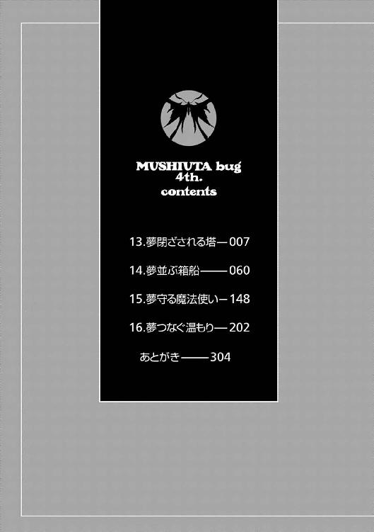
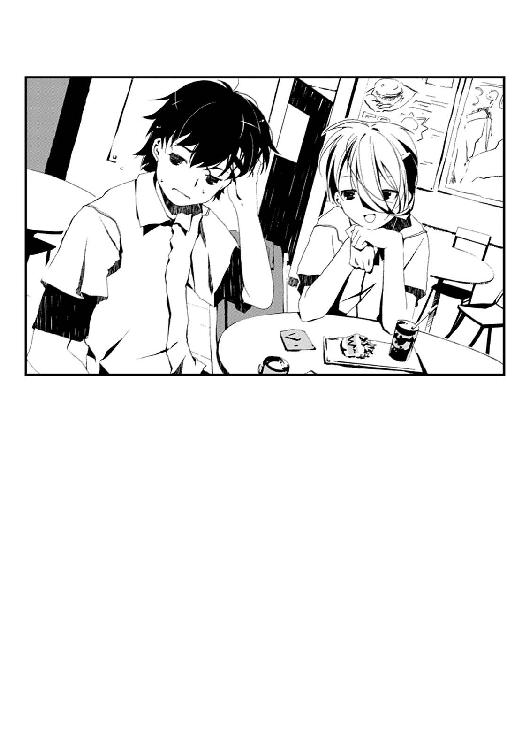

| ムシウタ ｂｕｇ ４ｔｈ．夢並ぶ箱船 | |
| 岩井恭平 | |
| KADOKAWA / 角川書店 (2014) | |

ムシウタｂｕｇ
４ｔｈ．夢並ぶ箱船
岩井恭平

角川スニーカー文庫
本作品の全部または一部を無断で複製、転載、配信、送信したり、ホームページ上に転載することを禁止します。また、本作品の内容を無断で改変、改ざん等を行うことも禁止します。
本作品購入時にご承諾いただいた規約により、有償・無償にかかわらず本作品を第三者に譲渡することはできません。
本作品を示すサムネイルなどのイメージ画像は、再ダウンロード時に予告なく変更される場合があります。
本作品は縦書きでレイアウトされています。
また、ご覧になるリーディングシステムにより、表示の差が認められることがあります。

「大助、入るわよー」
日曜、朝。
一之黒亜梨子は居候の少年、薬屋大助にあてがわれた部屋の障子を開けた。
床に敷かれたままの布団。壁にかけられたホルス聖城学園の制服。薄い埃をかぶったテレビ台の横には、大きめのバッグが置かれている。大助が一之黒邸に居着いて間もないことを差し引いても、殺風景な部屋だ。
「どこに行ったのかしら？ まあ、寝坊しなかっただけでも良しと──」
私服に身を包んだ亜梨子が、ポニーテールを揺らして首を傾げた時だった。
小さな音楽が聞こえた。布団のそばに置かれた携帯電話の着信メロディだ。
亜梨子は廊下を見渡すが、大助が戻ってくる気配はない。しかたなく携帯電話を拾う。
「きっと恵那よね」
今日の予定から相手を予想し、電話に出る。すると予想外の声が鼓膜を突き抜けた。
『ぐっもーにん、〝かっこう〟さん！ いえいいえいいえいっ！ 休日の朝、いかがお過ごしですかっ？ 〝まいまい〟ちゃんは低血圧なのでまだ本調子じゃないですよ？ これでもまだ四分の力、今日は手加減しといてあげます、ふははははー』
不意打ちで超高音攻撃をくらい、思わず電話を耳から遠ざける。
『お返事ありませんが、いつものことなので〝まいまい〟ちゃんは気にしませんからっ。土師支部長からの伝言を伝えますねっ。えー、一玖皇嵩という新しい中央本部長どのの経歴を洗ってみたけど、どうもキナ臭いね。数日前に一之黒亜梨子が正式に虫憑きに認定されたことといい、中央本部の動きが活発になってきている。ボクも独自に動くが、せっかくキミを中央本部に貸し出したんだ。キミには──』
「私が、虫憑きに？」
反射的に、聞き返す。ピタリと〝まいまい〟という少女の声が止まった。
『あ、あれっ？ もしかして一之黒亜梨子さんですかっ？ このたびはめでたく虫憑きに認定されまして、おめでとうございますというかご愁傷様ですというか......ど、どんまい、〝まいまい〟ちゃんっ、まだミスをしたと決まったわけじゃないですからっ』
「どういうこと？ どうして私が、虫憑きっていうことになるの？』
『ざーざーざー、ぴこぴこ、どきゅんっ、あれあれ、電波がおかしくて怪音が聞こえますっ。またかけ直しますねっ。というかさっきの話は聞かなかったことに！』
まくしたて、通信が途絶えた。亜梨子が呆然としていると、背後に気配がした。
「お前なぁ、勝手に人の部屋に入るなって、何度言えば分かるんだよ」
振り返ると、障子に手をかけた大助が立っていた。私服を着ていても、これといって特徴のない地味な印象は抜けない。
亜梨子は仏頂面で、大助に携帯電話を投げて渡す。「うわ」と驚きながらも、器用に片手で受け止める大助。
「大助......私に何か、言うべきことがあるでしょう？」
「はあ？」
「なにか大切なことを隠してない？」
亜梨子が睨むと、大助が眉をひそめた。
「べつに何も隠してねーよ。ていうか、なんでお前に何もかも話さなきゃならないんだ」
興味なさそうに嘆息し、亜梨子に背を向ける。
まただ──。
薬屋大助は必要以上の情報を、亜梨子に話そうとはしない。それが亜梨子自身に関わることといえども、命令なのか、それとも大助の性格からか──おそらく後者だろう。大助は他人を心から信じようとしない。
「......そうだ」
思い出したように、大助が亜梨子を振り向いた。その視線は、亜梨子の腕を見ている。
「最近、身体の調子がおかしくなったりは、してないか？ 特に──右腕とか」
「右腕？ そういえば昨日くらいまで、痺れて力が入らない感じはしてたけど......」
大助が一瞬、目つきを鋭くした。だがそれ以上は何も言わず、廊下に出る。
「なんなのよ」
頰を膨らませる亜梨子の視界に、鮮やかな金色の髪が現れた。
〝霞王〟だ。青い瞳と金髪という容姿が、白いダッフルコートとよく合っている。亜梨子と同い年の少女で、今日は大助の代わりに亜梨子と行動をともにすることになっていた。
「いいか、〝霞王〟。今度こそおとなしく亜梨子の監視を──なんだよ、その目は」
「なんでもないデス」
ニヤニヤと笑いながら、可愛らしいソプラノの声で言う〝霞王〟。彼女は資産家の子息が多いホルス聖城学園の生徒でもある。
「......ぷっ。極悪非道の〝かっこう〟様が、日曜の朝から女とデートだとよ」
〝霞王〟が口に手をあて、小声で呟く。大助が頰を紅潮させ、足早に去っていく。
「デートじゃねーよ！ バ〝霞王〟！」
「ああ？ 誰がバカだ、てめぇコラ！ ケンカ売ってんのか？」
そんな二人のやり取りを、亜梨子は釈然としない顔で見つめていた。
１
ざわざわと騒がしいフロア内に、11ポンドのボールがピンをなぎはらう小気味のよい音が響き渡った。
「うっし！ またストライク！」
レーンをバックに、満面の笑みで西園寺恵那が振り返った。両手を上げ、ベンチに座る大助とハイタッチをする。
「......すごいね、西園寺さん」
パチンと二人の手が合わさった。ニコニコと上機嫌に微笑み、恵那が大助のとなりに腰を下ろす。
西園寺恵那は、同じホルス聖城学園中等部に通う同級生だ。コートを脱ぎ、仕立ての良いブラウスと短めのスカートという私服姿の彼女は、同世代の少女の中でも特にあか抜けた印象がある。もっと褒めてほしそうに、恵那が上目遣いで大助を見つめる。
修学旅行を終え、赤牧市に戻ってきてからはじめての休日。
大助は同級生の女の子と、ボウリング場へ遊びにやってきていた。だが大助が素直に今の状況を楽しむことができない理由があった。
理由の一つは、大助が今まさに置かれている俗にデートと呼ばれる状況が、ある取引によって成立したものであるということだ。
つい先日、ホルス聖城学園の修学旅行において、一之黒亜梨子と大助は宿泊先のホテルから無断外出をした。見回りにやってきた教師を、うまく誤魔化しておいてくれたのが友人の恵那なのである。
──ありがとう、恵那。助かったわ。
──お礼なんていいわよ、友達じゃない。ほんの一日、薬屋くんを貸してくれるだけでいいわ。
──ええ、いいわよ。
以上が、当の大助本人の目の前で行われた取引の内容である。大助は自分が売り飛ばされた現場を目撃し、呆然とするだけで苦情を挟むこともできなかった。
つまり今回のデートは、大助自身の意志で作られた場ではないのである。
「ほ、ほら。今のが最後で......えっ？ スコアが２００オーバー？」
少女の視線から逃れるべく正面にある液晶ディスプレイを見て、驚く。とても中学二年生の女の子がたたき出したとは思えない。
「ホント？」
大助に顔を寄せ、恵那がディスプレイをのぞき込む。思わず数センチほど身を遠ざけた大助をチラリと見て、楽しげに目を細める。
「う、うん」
はからずも耳を赤くする大助の腕に、小さな昆虫がとまった。緑色のかっこう虫だ。羽音もさせずに現れた虫の存在に気づいた者は誰もいない。
他にも大助が困惑している理由がある。それは大助が赤牧市に居る、本来の目的のことだ。
〝虫〟──。
思春期の少年少女に取り憑き、宿主の希望や願望の結晶である夢を代償に自らの力を分け与える超常の存在がある。〝虫〟と呼ばれるそれに憑かれた者は虫憑きと呼ばれ、一般的には噂の範疇内であるにもかかわらず、人々の差別と恐怖の対象とされていた。
大助は虫憑きだ。それも同じ虫憑きを捕らえ、隔離することを目的とする政府機関、特別環境保全事務局の一員である。
ホルス聖城学園に潜伏しているのは、今は亡き花城摩理という虫憑きの〝虫〟を受け継いでしまった一之黒亜梨子を監視するためだった。
それなのに──。
「薬屋くんは、ふつーよね。１ゲーム目と２ゲーム目と同じくらい。１００そこそこ」
楽しげな恵那に対し、大助は「あんまり得意じゃないんだ」と笑顔で受け流す。
監視対象である亜梨子の友人である恵那と、必要以上に親しくすることは規律違反にあたる。本来の所属ではない中央本部の手伝いで、なおかつ正式な監視班ではないため言い訳はできるだろうが......。
だがそんなことよりも、何よりも落ち着かない理由があった。
「──まるで、わざと〝普通〟のスコアを狙ってるみたいよね？」
ドキリ、と心臓が高鳴った。
「得意だからボウリングに誘ってくれたんじゃなかったんだ。てゆーか、薬屋くんの得意なものってナニ？ この前のテストも平均点だったし、体育の授業でやるサッカーとかバスケでも、ふつーにこなすし」
無邪気に首を傾げる恵那は、テストではトップクラス、運動も群を抜いて優秀だ。それこそ運動が得意な亜梨子や、勉学が優秀な九条多賀子以上に。
「そ、それは、えーと......」
言い訳を考え、言葉に詰まる。大助の学校生活は、あくまで亜梨子を監視する上での偽装なのだ。目立つ行動は厳禁なのである。ボウリング場にいるのも、〝デートといえば〟で思いついた場所から選んだだけだった。
「なんでもできる西園寺さんから見たら、そう見えるだけだよ、きっと」
適当に言葉を濁す大助を、「ふうん？」と面白そうに見つめる恵那。整った顔立ちを向けられ、こっそりと心中で毒づく。
ニガテだ、こいつ──。
一之黒亜梨子の監視を始めてからずっと、思っていた。
西園寺恵那。
誰に対しても愛想が良く、ノリが良い気性と合わさって友人は多い。あらゆる才能に恵まれている反面、普段の彼女は何事にも真面目に取り組むことがなく、彼女の〝本気〟がどこにあるのか分からない。
つまり、これまで数々の修羅場をくぐり抜けてきた大助をして、恵那が何を求めて大助に接近してくるのか分からないのである。
「そうかなあ。これでも薬屋くんのこと、他のコよりもよく見てるはずだけどなあ」
恵那がニコニコと上機嫌に微笑み、はぐらかすように身を寄せてくる。
大助は頰を紅潮させ、顔をそむけることしかできない。──彼女が虫憑きであれば、冷たくあしらうこともできるが、相手はごく普通の一般人だ。虫憑きでもない女の子の扱いは、大助にとって未知の領域である。
そう思ったところで、大助は自らの考えを皮肉に思った。
虫憑きは誰にでも怖がられて当たり前だけど......これじゃあ俺が普通の人間を怖がってるみたいじゃないか──。
同時に、思う。
......だとしたら、亜梨子はどうなんだ？ あいつは虫憑きじゃないのに、普通に接していられるのは......いや、あいつも虫憑きに認定されたんだから、結局は──。
「ねえ、そろそろ別の場所、行こ？ 次はどこに連れてってくれるのかなあ」
「あう」
大助の思考が、抱きしめられた腕から伝わる恵那の体温と感触で現実に引き戻される。
......やっぱり、ニガテだ。虫憑きでもない普通の女なんて──。
恵那に見つめられているせいで、大助はため息をつくこともできなかった。
喉が渇いた、という恵那の要望を受け、二人は大通り沿いの喫茶店に入った。
学校帰りの学生たちが立ち寄るような、ジャンクフードを専門にした店だ。亜梨子ならともかく、同級生の九条多賀子あたりになると敬遠しそうな店である。だが恵那は嫌な顔一つせずに、大助の選択に従った。
「はい、ここで良い子にしててね」
恵那がドリンクを載せたトレイといっしょに、小さなぬいぐるみをテーブルに置いた。窓際のテーブルから、目つきが悪いぬいぐるみが大通りを見下ろす。
ボウリング場があったアミューズメント施設内には、ダーツもあった。ぬいぐるみは、そこでも高得点を叩きだした恵那が手に入れた景品だ。
「他にもいろいろ景品があったのに、ヘンなのを選んだよね。西園寺さんの趣味？」
大助は、恵那の向かいの席に座る。
「もう一目惚れ！ どうせなら薬屋くんにプレゼントしてほしかったんだけどなぁ」
「ダーツなんて初めてだったから」
苦笑する彼に対し、恵那がストローに口をつけた。にっこりと笑って大助を見る。
「初めてなのに〝普通〟の点数だったよね？ それって結構、器用だと思うけどなぁ」
「うーん、そうかな？」
もちろん大助は、ボウリングと同じようにダーツも目立たない程度の点数を狙ったのだ。
普段から目立たないようにしている大助を、恵那だけはしつこくつけ回す。そのことに大助は困惑をおぼえていた。
「ごめんね、たいして面白くもないヤツで」
情けない笑みとともに、言ってみせる。
「オレといても、つまらないよね」
つまらないと言ってくれ。もしくは態度でそう示してくれ。
心の底から、そう思った。一之黒邸を出る前の〝霞王〟ではないが、そもそもデートだなんて柄ではないのだ。
「えっ？ なんで？ ぜんっぜん、そんなことナイわよ！ これでも、すごいドキドキしてるんだから！」
恵那の反応は、大助の期待を裏切るものだった。慌てた様子で、身を乗り出す。少なくとも演技には見えない。
「薬屋くんこそ、アタシといっしょでつまらなくない？」
「え？ そんなこと......ないよ」
思わずそう答えると、恵那は安堵したようだ。嬉しそうに笑い、「よかった」とぬいぐるみの頭をなでる。
いつもおちゃらけている普段とは違う態度の恵那に対し、大助は何と言っていいのか分からない。
妙な空気を含んだ沈黙が、二人の間に流れる。
た、助けてくれ......！ 亜梨子でも〝霞王〟でもいいから、とにかく俺をこの状況から救ってくれ......！
ストローでドリンクの氷を弄んで平静を装いつつ、心中で呻く。まさか自分がよりによって、あの二人に助けを求める日がくるとは思わなかった。

「えーと......」
沈黙に耐えきれず、大助は声を発した。だが話題が思いつかない。
流行りのテレビ番組の話？ それとも好きなミュージシャン？ クラスメイトの話？ 趣味や習い事の話題？ ──そんな、お見合いじゃあるまいし。
頭をフル回転させて考えた挙げ句、出した結論。
限界だ。
用事を思い出したことにして、早々にデートを切り上げよう。監視対象の友人と険悪になってしまうと、監視任務に支障が生じると思って応じたが、だからといって無理にご機嫌をとることもないだろう。
むしろ嫌われてしまったほうが、今後はつきまとわれなくて済むかもしれない。
「西園寺さん、悪いけどオレ──」
「え？」
不穏な空気を感じ取ったのか、恵那が一瞬、寂しげな顔で大助を見た。亜梨子といっしょにいる時はいつも気楽に笑ってばかりいる少女とは、別人のようだった。
「......ちょっと、トイレ」
恵那がホッとした様子で、「うん」と笑む。
......なにやってんだ、オレ......。
フロアの奥に向かって歩きながら、激しい自己嫌悪にかられる。洗面所に入るなり、冷たい水で顔を洗う。
任務で赤牧市にやってきて以来、どうも調子が狂わされてばかりだ。一之黒亜梨子と、彼女を中心に集まる人々と接すれば接するだけ、緊張感が霧散していく。
一刻も早く任務を達成し、本来の管轄である桜架市へ戻ろう。
あらためて決心する。
心の油断は、死を招く。大助は決して、死ぬわけにはいかないのだ。たとえ他の誰を犠牲にしても、戦い抜き、生き抜かなければならない。
大助に命の危険をもたらすならば──それは、敵だ。必要以上に近づいてくる相手に、心を許すわけにはいかない。
ハンカチで顔を拭きテーブルに戻った大助を、恵那の笑顔が出迎えた。
「よしよし、ちゃんと戻ってきたわね。今日の薬屋くんはアタシのモノなんだから、ちゃんと最後まで相手してくれなきゃダメよ？」
冗談っぽく言う恵那。隠していたつもりだったが、帰りたそうにしていたのを見透かされていたようだ。
大助は優等生の笑顔で切り返す。
「オレなんかじゃなくても、西園寺さんならデートの相手くらい、いくらでもいるくせに。友達だって多いしさ」
「んふふ、そんなことないのよねー、これがまた」
ウソつけ、と笑顔の裏で言い返す。
「あ、〝ウソつけ〟って顔。薬屋くんって、たまに一瞬だけ冷たい顔するよね？」
「そんなこと、思ってないよ」
作り笑いを浮かべる大助だが、内心は動揺していた。表面上は笑顔しか浮かべていないというのに、なぜことごとく心の内を見破られるのだろう？
「ホントなのになー。アタシ、友達って呼べるコって亜梨子と多賀子くらいなんだけど」
頰杖をつき、恵那がぬいぐるみを人差し指で弄ぶ。
「アタシって、こう見えても器用なほうみたい。大抵のことはこなせるし」
「見てれば、分かるよ。すごいよね」
「うん、分かっちゃうのよね。だから友達ができても、すぐに距離を置かれちゃうんだ。はいはい、アンタは器用で良かったわねって。男の子とデートしても、可愛げがないもんだからすぐに勝手に身を引かれちゃうし。あとはアタシより良いところを見せようとして、無理に気張っちゃったり」
本来は運動能力に優れている大助だが、本気を出したところでボウリングもダーツも、恵那の足元にも及ばなかっただろう。男子としては恰好がつかないというものだ。
「気がつくと、アタシのことを構ってくれる人がいなくなっちゃうんだ。ウチでもそう。お姉ちゃんたちはともかく、アタシのことは放っておいても大丈夫と思われてるみたい。それが気に入らなくて、昔はけっこうアタシもやさぐれてたものよ」
ぬいぐるみの両腕をとり、大助に向かってファイテングポーズをとらせる恵那。
「昔って......中学二年生のセリフじゃないよ、それ」
「うん。でも、なんだか、すごい昔のことみたいに思えるのよね、最近は......っていうか、今のクラスになってからは。亜梨子とはじめて会ってからは、かな？」
「......」
「あのコがはじめてだったから。アタシとずっと変わらないまま、接してくれたのは。多賀子もそうだけど、亜梨子に会う前のアタシだったら、多賀子みたいな優等生とは友達になろうとは思わなかったもの。だから今の生活は、大好きかな」
考える。
今は亡き虫憑きの少女、花城摩理も亜梨子に対してだけは心を許していたようだ。これまでの調査結果が、そのことを物語っている。
一之黒亜梨子──大助の目にはわがままで傍若無人にしか見えないあの少女の何が、そこまで人々を惹きつけるのだろう？
「アタシはべつにやりたいこともないし、やれないこともないしね。でも一人じゃつまらないから......毎日、それなりに遊んで、それなりに楽しい今の生活が、大好き。このまま、ずぅーっと平穏な日が続けばいいなあ」
恵那は本心から言っているようだった。何を思ったか、身を乗り出して大助に顔を寄せてくる。思わず大助はぎょっとしてしまう。
「でも最近になって、そんな平和な毎日に突然、割って入ってきた人がいるのよね」
「......え？」
間の抜けた声を上げた大助から離れ、恵那がぬいぐるみを手に取った。表情を隠すように顔の前に持ち上げ、細めた目で大助を見据える。
「──さて、そのお邪魔虫さんとはいったい、誰のことでしょう？」
一瞬、言葉の意味が分からず、大助はきょとんとした。
だがすぐに、悟る。
無表情に大助を睨む少女の瞳は、冷ややかだ。普段は愛想の良い少女が表情を消しただけで、ある種の威圧感さえ感じさせる。
なるほど、そういうわけか──。
「......」
大助もまた、微笑した。冷たく突き刺さる視線を、正面から受け止める。
なにかと恵那が大助につきまとう理由が、ようやく分かった気がした。
──恵那は、見定めようとしていたのだ。
ある日、突然に亜梨子のそばに現れ、彼女の言う平穏な日々に割り込んできた闖入者。彼が自分にとって敵であるかどうか、〝監視〟していたのだ。
亜梨子の監視をしてる俺を、監視しようってのか。上等だ、そっちがその気なら、こっちもそのつもりで相手してやる──。
大助と恵那の間に、再び沈黙が落ちていた。
それは先ほどとうって変わって、互いの敵意しか感じられない静寂。
先に口を開いたのは、恵那だった。
「なんちゃって」
真剣な目つきのまま、睨み合う二人。
「......」
「......」
何度目かの沈黙。
完全に思考停止状態となった大助を見る少女が、唐突に瞳を輝かせる。
「んふふ。薬屋くんって、やっぱり素材はイケてるわよね！ たまに見せる一瞬の冷たい眼差しが、たまんない！ ああ、いつもそんな目でアタシを見てほしい！」
ぬいぐるみで目以外の表情を隠したまま、クネクネと身体を揺らす恵那。予想していなかった恵那の言動に、大助は演技ではなく素で困惑してしまう。
「え......？ な......」
「それ！ その顔も、サイコー！ 油断した薬屋くんも、カワイすぎ！ あー、もう、やっぱり亜梨子から今日一日、薬屋くんをレンタルしてよかったわ！」
は、ハメられた......？ いや、これも演技なのか......？
頰を紅潮させ、ますます泥沼に陥る大助。
「薬屋くんが邪魔者だなんて、ウソに決まってるじゃない！ 薬屋くんも、はじめて会ったタイプなんだもん。アタシといても、ずっと〝普通〟のままなのよね。わざとそうしてるのか......それとも本当にただの普通の男の子なのかは、まだ分からないけど」
ぬいぐるみを抱えて席を立った恵那が、大助の腕に自らの腕をからめる。
「さ、次行きましょ！ まだまだ外は明るいんだし！ 薬屋くんさえ良ければ、夜になっても......んふふふふ」
強引に席から立たされながら、大助は先ほどにも増して自己嫌悪に陥っていた。
やっぱりニガテだ、こいつ......。
今度こそ、心の底からため息がこぼれた。
２
薬屋大助と西園寺恵那は、赤牧駅近くの大型デパートに入っていった。
彼らを尾行していた二人の少女も、後に続いて建物内に入る。大助らは迷うことなくエスカレータで上階へと向かった。
「ショッピングかしら。それとも最上階の映画館？ どっちにしろベタベタのデートコースね。少しはヒネリなさいよ」
大勢の客に紛れてエレベータへ近づきながら、亜梨子は頰を膨らませた。
「気になるなら、声かけりゃいーじゃねぇか。なんでわざわざこんな面倒くせぇ真似してるんだよ」
両手を頭の後ろで組んだ〝霞王〟が、投げやりな口調で不満を漏らした。大助と恵那のデートには興味がないらしく、きょろきょろと青い瞳でデパート内を見回している。
「大助が勢いあまって、恵那に手を出さないように監視してるのよ。奴隷の不始末は、ご主人様たる私の不名誉でもあるの。これでもちょっぴりは責任感じてるんだから」
「はー、〝かっこう〟にそんな甲斐性があるとも思えねぇけどな。なんつったって、オレ様みたいな超絶美少女にさえ手を出そうとしねぇヤツだぜ？」
「......それに関しては賢明な判断だと思うわ」
「ああ？ てめぇ、どういう意味だコラ。オレ様はこう見えても──」
物騒な声音で言いかけた〝霞王〟だが、何かに反応して黙り込んだ。怪訝に思って彼女の視線を追うと、「間もなくキッズ広場にて戦隊ショーが行われます」と呼びかけている係員の姿があった。
〝霞王〟が亜梨子に向き直り、行儀良く首を傾げる。
「亜梨子さん、ワタシ、とても大切な用事を思い出したデス」
「〝霞王〟、あなた......たしか私の監視が任務だったはずよね？」
「そんなもの、どーでもいいデス。それでは、ごきげんヨウ」
上品な笑みを残し、子供たちに混ざって一直線にキッズ広場へと姿を消す金髪の少女。
「これでいいのかしら、特別環境保全事務局......」
〝霞王〟は特別環境保全事務局の一員であり、大助に代わって今日一日の亜梨子の監視を行うのが任務だったはずだ。あとで大助に任務放棄をチクってやろうと心に誓う。
ともあれ身近から戦闘狂の問題児が消えて、身軽になった。亜梨子はあらためて大助と恵那の尾行に戻ろうとする。
だがすでに、視界に二人の姿は見あたらなかった。〝霞王〟に気をとられているうちに、見失ってしまったようだ。
慌てて近辺を捜すが、どこにもいない。別の階に移動してしまったのだろう。亜梨子はすぐにエスカレータに向かおうとして、思いがけない後ろ姿を見つけた。
どこかの高校の制服だろう。少なくとも赤牧市内では見たことのないブレザーを着た長身の少年だ。床の上にうずくまって顔は見えないが、燃え盛る炎のように不規則に暴れた髪型は、忘れるはずもない。
「ハルキヨ......！」
「ああ？」
振り返ったのは、大きめの湿布を頰に貼った少年だった。不機嫌そうな眼差しから、野生の肉食獣のような威圧感が放たれる。
世果埜春祈代。なぜか亜梨子のかつての親友、花城摩理のことをかぎ回っている虫憑きの少年だ。大助から聞いた話では、神出鬼没に赤牧市内に現れては、仲間とともに特別環境保全事務局に敵対しているらしい。
今の私は、武器を持ってない......それに、こんなところで戦闘になったら──。
思わず身構えるが、周囲の被害を考えて唇を嚙む。
「こんなところで、何をしてるの？ まさか、私が一人になるのを狙って──」
「何をしてるように見えるんだよ？」
「......ガチャポンをしてるように見えるわ」
「分かってんなら、金貸せ。どうしてもこのレアモノが出ねーんだよ、クソが」
苛々とした様子で、ハルキヨが亜梨子に向かって手を差し出してくる。有無を言わせない雰囲気だ。
「おら、さっさとしろ。他のガキが来ちまうだろーが。心配すんな、あとでちゃんと倍返ししてやるから」
「......」
亜梨子は警戒しつつも、財布を取り出す。まさかこんなところでカツアゲをされるとは思わなかった。ワナかもしれないと思いつつ、勢いにおされて硬貨を渡す。
ハルキヨが「うし」と満足げに笑み、ガチャポンへ向き直った。丸めた背中の向こうから、ガチャガチャとハンドルを回す音がする。
「おお......！ おおおお......！」
目的のものを手に入れたようだ。カプセルを掲げ、歓喜にむせぶ少年。
「こんなヤツ、さっさと捕まえなさいよ、特別環境保全事務局......」
亜梨子の中で株が急降下しつつある政府機関の名を口にすると、ハルキヨがニヤリと笑った。カプセルを懐に入れ、亜梨子に向かって手をかざす。
「筋は通す。倍返しだ」
「......え？」
突然のことに、身体が反応しなかった。かざした少年の手のひらに火が灯ったと思った次の瞬間、亜梨子に向かって業火が襲いかかった。
オオエンマハンミョウの形をした炎が亜梨子をかすめ、背後にあった特撮ヒーローの等身大人形を一瞬にして蒸発させる。
「な、何を......！」
遅れてハルキヨから跳び退る亜梨子。だが、そんな彼女の足元に、ごく小さな炭の塊が落ちた。
直後、あちらこちらから人々の苦鳴が上がった。デパートにいた客たちが、身体の一部をおさえてくずおれる。
天井からパラパラと音を立てて、何かが落下していた。床に落ちたそれを見て、亜梨子は目を見開く。
「ノミ......？」
数え切れない無数のそれらは、小さなノミに似た昆虫だった。だがよく見るとノミには脚が無く、口器に生えた一本の針をバネにして跳び跳ねている。ハルキヨが灼いたのは、亜梨子に襲いかかろうとしたノミのようだ。
実際の昆虫ではない。──〝虫〟だ。
「ふん、どこのどいつだか知らねーが、思い切ったことやるじゃねーか」
ハルキヨの身体を、炎の奔流が駆け巡る。吹き荒れた熱波に灼かれ、ハルキヨと亜梨子の周囲で跳び跳ねていたノミたちが蒸発した。
ノミに刺された人々は、青ざめた顔で床に倒れていた。意識はあるようだが、身体が麻痺して動かなくなっているようだ。ノミが麻痺作用のある毒を持っているのだろう。
「どこかに虫憑きがいるの......？ なんで、こんなことを......！」
「放っとけ放っとけ。てめーがいるってことは〝かっこう〟も近くにいるんだろ？ ヤツに任せときゃいい。お仕事ごくろうさんってな」
不測の事態にもかかわらず、ハルキヨは平然としていた。懐からカプセルを取り出し、喜々とした様子で開けている。
ダメよ、大助は今──。
口を開きかけ、亜梨子は顔を歪めた。大助は今、恵那とともにいる。自分の正体がバレるような行動をとることはできないだろう。
「まさか、ハルキヨ──あなたがまた、私を狙ってやったんじゃ......！」
「ん？ べつにそれでも俺は構わねーが、違うぞ？ てめーの中の花城摩理を引っ張り出すにゃ、まだ時間がかかりそうだしな。このタイミングで狙う意味がねー」
「ウソをつきなさい！ 私が虫憑きに認定されたことと、関係があるんでしょう！」
炎の少年が、顔つきを変えた。魔人の視線が、亜梨子を貫く。
「──なんだと？」
迫力に圧され、亜梨子は思わず息を吞む。
「そいつは、聞き捨てなんねーな。てめーはあくまでただの人間で、モルフォチョウはてめーと同化したわけじゃねーんだ。それが虫憑きにされたってことはまさか、てめー......モルフォチョウと同化したのか？」
業火とともに、息が詰まるようなプレッシャーが亜梨子を威圧する。銀色のモルフォチョウが亜梨子の肩に舞い降りるが、同化するための武器を持っていないため、ヒラヒラと頼りなく翅を羽ばたかせるだけだ。
──その時、苦しげな呻き声で満たされたデパート内に、アナウンスを知らせるチャイムの音が響いた。
『......特別環境保全事務局という組織を、知っていますか？』
緊張感のないチャイムの後に聞こえたのは、緊張を含んだ少女の声だった。
３
きゃっ......！」
最上階にある映画館へと向かうエスカレータで、恵那が小さな悲鳴を上げた。
大助が素早い動きで、恵那の顔から数ミリの距離に拳を突き出したのだ。
「な、なに？ どうしたの、薬屋くん？」
「虫がいたんだ。でも、気のせいだったみたいだね」
ニコリと愛想笑いを浮かべながら、こっそりと自らの手の中を一瞥する。
ノミ......？ いや、これは〝虫〟か！
体液を流して潰れたノミが、大助の手の中で空気に溶け込むように消えていく。〝虫〟は死骸を残さない。
恵那に飛びかかろうとしていたために、反射的に捕まえてしまった。大助は自らの首元に違和感をおぼえ、指で弾く。ピシッという音とともに、首に針を突き立てようとしていたノミが弾き飛ばされた。
「虫？ この季節に？」
恵那が不思議そうに首を傾げると同時に、デパート内が異変に包まれた。
天井からパラパラと音を立て、小さなノミが舞い落ちてきたのだ。デパートの利用客が次々と刺され、床に倒れていく。人体を痺れさせる何かを注入されたようだ。
呻き声やかすかな悲鳴で溢れかえったデパート内を見回し、大助は表情を厳しくする。
これは......虫憑きの仕業か？ いったい、どこのどいつがこんなことを──。
呆然としている間にも、視界にいる大勢の客たちが床にくずおれていた。
「え？ え？ なにが起きたの？」
「わ、分からないよ。とにかくここから離れよう......！」
戸惑う演技をして、大助はエスカレータを昇りきったところで恵那の腕を引いた。フロアの中でも比較的、ノミが少ない場所を選んで立ち止まる。
間をおかず、アナウンスを知らせるチャイムがデパート全体に鳴り響いた。
『......特別環境保全事務局という組織を、知っていますか？』
高い声──少女の声だった。ある種の決意を含んで緊迫した声は、かすかに震えている。
『そして〝虫〟という存在を知っていますか？ それに、虫憑きという人たちの存在を』
倒れた人々は蒼白な顔をしつつも、意識を保っている者も多い。だがアナウンスから響く少女の言葉を、理解できているかどうかまでは分からない。
『誰でも、噂では〝虫〟のことを知っていると思います。でも〝虫〟は、実際にいるんです。今、あなたたちを襲っているのが、そうです。そして私は......虫憑きです。このデパートは私の〝虫〟が占拠し、全ての出入り口も〝虫〟が塞いでいます』
大助は思わず舌打ちをしそうになるが、恵那がいるためにこらえる。
この〝虫〟の、宿主か......！
人々を襲うノミに似た〝虫〟から見るに、分離型と呼ばれる種類の中でも稀少な一度に複数の〝虫〟を操るタイプのようだ。以前まで特環に属していた〝アキ〟という虫憑きが同じタイプだった。
......しかも、デパート全体に自分の〝虫〟をばらまいて一斉に攻撃に移るタイミングといい、コイツはただの虫憑きじゃない。〝虫〟を制御する訓練を受けてるな。となると、まさか──。
『訓練をさせた虫憑きを使って、虫憑きを秘密裏に捕獲する政府機関が、特別環境保全事務局です。私は昨日まで......その組織に所属していました』
大助の推測が、的中した。
特別環境保全事務局、俗称でいう特環からの離反者。つまり裏切り者だ。大助も所属する同組織からの離反は、最大の重罪である。
おそらく中央本部に所属していた局員なのだろう。本来は別の管轄である東中央支部に所属していた大助の知らない〝虫〟である。
『でも、私は特環から脱走しました。私は......私は......もう、イヤなの！』
アナウンスの少女が、唐突に感情を爆発させた。今まで押し殺してきた恐怖や苦痛、それに悲しみを全てぶちまけるように叫ぶ。
『人に自分が虫憑きであることを知られないように生きるのも、同じ虫憑きを捕獲したり、欠落者にしたりするのも、もうイヤなの！ 私たちだって、普通の人間なのに！ 本当なら誰とも戦ったりせずに、普通に学校に通って、普通に友達と遊んでいたはずなのに！』
まずいな──。
大助は、となりにいる恵那をちらりと一瞥する。彼女は突然に巻き込まれた状況を理解できずにいるようだ。蒼白な顔で、天井のスピーカを見上げている。すでに視界内で立っているのは、大助と恵那の二人だけだった。
「な、なに？ 何を言ってるの？ 虫憑きって......また、あの化け物みたいなのが......？」
恵那が怯えた表情で、大助の服をつかむ。──恵那は以前、夜森寧子という逃走者を捕まえようとした虫憑きどうしの争いに、巻き込まれた経験がある。
『どうして私たちが、こんな思いをしなきゃいけないの？ 虫憑きどうしで戦って、傷ついて......誰にも知られず、〝虫〟に自分の夢を喰われていかなければならないの？ せめて特環さえなければ、もしかしたら私たちは仲間どうしで戦わなくてもすむかも──』
大助は姿の見えない少女の目的を察し、わずかに顔を歪めた。
『......皆さんには、申し訳ありませんが人質になっていただきます。できるだけ騒ぎを大きくして、国中の人たちに私たち虫憑きや特環の存在を知ってもらうために。特環の実体を知ってもらえれば......私たちがしてきたようなひどい行いをやめてくれるかもしれない。せめて私が特環の刺客に捕まるまでだけでも......！』
この......バカが！
大助は心中で少女を罵る。
少女は自分がとっている行動の矛盾に、気づいていないのだろうか？ 〝虫〟を使って人々を傷つけている現状だけでも、世間に〝虫〟の存在が知られた後に一般人が何を思うか簡単に予想できる。
「もう、イヤ......！ なんで虫憑きって皆、こうなの？ なんでこんな化け物がいるのよ」
恵那が目に涙を浮かべ、言う。以前に虫憑きと関わった際にも、無関係の彼女は命の危険に晒されているのだ。
──これが普通に生きる人々の、当たり前の反応なのだ。
もし少女の目論見が達成され、〝虫〟や虫憑きの存在が国中に知れ渡ったとしよう。
その時、人々は虫憑きを救ってくれるだろうか？ 同じ人間と見てくれるだろうか？
答えは、否だ。
彼らは虫憑きを、敵視する。そうなれば虫憑きどうしで戦う現状よりも、最悪の状況が待っている。
一般人と虫憑きの戦い。
それが勃発した時、この国は果たしてその戦いに耐えられるだろうか？
「......ホントだね」
化け物、という恵那の言葉に、大助の胸中にズキリと痛みが走った。とうの昔に慣れたはずの痛みなのに、大助は唇を嚙みしめる。
「虫憑きなんて、この世からいなくなっちゃえばいいのに」
大助は嫌悪を込めて、言い放つ。それがごく普通の人間の反応。普通の対応だからだ。
──虫憑きでない人たちに、受け入れられるかもしれない。自分たちの存在を知ってもらえれば、虫憑きだって普通の少年少女であることを理解してもらえるかもしれない。
そう思っていた時期は、大助にもあった。
だがそんな期待は甘ったるい幻想にすぎないと、大助は思っている。特環に所属してからこれまでに、多くの人間に怖れられ、多くの人間を傷つけてきた。
虫憑きと普通の人間は、友達になどなれない──。
それが虫憑きである大助の、今の本心だった。
「さ、西園寺さんは、ここにいて。オレはどこか逃げられる場所がないか、見てくるよ」
大助は怯えた演技を続けながら、恵那に向かって言う。
動機はともあれ、特環の一員である大助が現状を放っておくわけにはいかない。特環という組織の正体は、一般市民に知られてはいけないのだ。
「ダメ！」
だが恵那を引き離そうとした大助に対し、彼の腕をつかんで引き留める。
「出入り口は塞いでるって今、言ってたわ......！」
「う、うん。でもどこかに、外に出られる場所があるかもしれないから──」
恵那といっしょにいると、思うように動くことができない。足手まといである以上に、大助自身が虫憑きであることがバレてもいけないのだ。
すると何を思ったのか、恵那が予想外の行動に出た。二人がいるのは、スポーツ用品が置かれたエリアだった。顔を強ばらせた恵那が、そばにあったゴルフクラブを拾う。
「私もいっしょに行くわ」
「え？」
「薬屋くん一人だけ、危ない目にあわせられないもん。大丈夫、アタシが運動神経がいいの、知ってるでしょ？」
大助は啞然とし、立ちつくす。
恵那が浮かべた笑みは、恐怖を隠すための作り笑いであることは一目瞭然だった。震えた手足を誤魔化すように、ゴルフクラブで足元のノミを振り払っている。
「だ、ダメだよ！ 危ないじゃないか！」
「んふふ、薬屋くんに心配してもらっちゃった。嬉しいなー」
おどけた調子で表情を輝かせる恵那を見て、大助は思わず言葉に詰まる。心配したわけじゃない、足手まといだから迷惑だと言いたかったのだ。そう自分に言い聞かせる。
「でも、薬屋くんが心配してくれるのと同じくらい、アタシも薬屋くんのことが心配なの」
大助と話しているうちに、幾分は恐怖が薄れてきたのか、恵那が屈託なく笑う。
「言ったでしょ？ アタシは今の平穏な生活が好きで、それを邪魔するものが嫌いなの。なにかと邪魔する虫憑きなんて大嫌いだけど、薬屋くんは......もう、最後まで言わせないでよ、薬屋くんのイジワルっ」
一人で頰を染め、身をくねらせる恵那。
一方、大助は目眩をおぼえていた。頭痛もしてきた。脱力感にも襲われる。
バカだ......なんでこう、亜梨子の周りにはワケの分からないヤツばかり集まるんだ？
「あのさ、西園寺さん......なんて言えばいいか、その......」
「早くしないと、先に行っちゃうわよ？」
棚に手をかけて頭をおさえているうちに、恵那はゴルフクラブでノミを払いのけ、通路を先に歩いていこうとする。
「ち、ちょっと待ってよ！ オレが言ってるのは危ないからってだけじゃなくて......オレ一人のほうが動きやすいっていうか──」
「えー？ でもアタシ、体力測定は男子とそう変わらなかったわよ？ ひょっとしたら、薬屋くんよりも成績良いかも」
「そんなもの、関係ないだろ！ いくら頭が良くて、運動ができても、西園寺さんは普通の女の子だろ？ さっきだって、すごく怖がってたし......」
恵那を追いながら、まくしたてる。すると恵那はびっくりした様子で振り向いた。
「......な、なに？ どうかした？」
「うふふ。うふふふふー」
「ちょっと怖いよ......西園寺さん？」
「はじめて、普通の女の子扱いされちゃった。ますます薬屋くんナシじゃ生きられない身体になっていくわ、どうしよー。責任とってね？」
嬉しそうに笑い、恵那が再び前を向いて歩き出す。
「......っ！」
もう少しで、怒りにまかせて天に向かって絶叫するところだった。実際、声が出ていないだけで、両手をわななかせていた。
違う。違う。そんなことを狙って、言ったんじゃない。それなのに、どうしてそう受け止められるのだろう？ 大助には目の前にいる少女が何を考えているのか、さっぱり理解できなかった。
やがて二人は、階段の前にたどり着いた。前を向いて歩いている恵那は気づいていないだろうが、振り払いきれなかったノミを大助が両手で一匹残らず弾き飛ばしていた。そのため、ここまで無事にやってくることができたのだ。
階段までやって来たのは、壁に貼られたデパート内の案内図が目的だった。
「さっきの女の子の声って、スピーカから聞こえてたわよね？」
「......うん、そうだね」
案内図を見た恵那の顔から、血の気が引いていた。ぎこちない動きで、反対側の壁に空いた細い通路を見る。
「この通路の先って、アナウンス室みたい」
大助は恵那の視線を追い、目を細める。
館内放送を使っていたからには、ノミの宿主はアナウンス室にいるのだろう。すなわち二人は出口をさがしていながら、脅威の元凶へと近づいてしまったのである。
恵那がごくりと喉を鳴らし、ゴルフクラブを構えた。大助はぎょっとする。
「さ、西園寺さん？」
「ねえ、アタシたちで虫憑きをやっつけられないかしら？ このノミ以外は、相手はただの女の子なのかもしれないし......」
ペースを崩されかけていた大助の心が、急に冷めていくのを感じた。
「だ、だって、許せないもの。どうして何の関係もないアタシたちが、こんな目に──」
じりじりと通路に歩み寄っていく恵那の背中に向かって、嘲笑を浮かべる。
虫憑きと普通の人間は、分かり合うことなどできない。
とっくに分かっていたことだ。虫憑きは普通の人間を傷つけ、普通の人間は虫憑きを嫌う。お互いに触れ合うことなど不可能なのだ。
「ねえ、西園寺さん」
自分でも、冷たい声だと思った。恵那の背中に問いかける。
「もし──オレや亜梨子が虫憑きだったら、どうする？」
「え？」
突然の質問に、恵那は驚いたようだった。振り向いた恵那は、目を丸くする。
大助が黙っていると、恵那は考え込んでしまった。大助とアナウンス室へと続く通路を交互に見比べ、しまいには天井を見上げる。
予想していた以上に、恵那は真剣に悩んでいるようだ。クラブを降ろし、苦笑する。
「それは......ごめん。分からない、かな？」
ほら、見ろ──大助は心中で皮肉げに呟いた。
分からないとは言いつつも、表情が否定していた。虫憑きが恐怖の対象であるということは、変えようのない真実なのだろう。
だが恵那は顔を上げ、大助に向かって微笑んだ。
「だってアタシは、今の亜梨子や薬屋くんしか知らないもの」
表情を固まらせる大助。
「でも、もし二人が虫憑きになったら......きっと優しい虫憑きになりそうよね。こんな、関係のない人たちを傷つけるような虫憑きじゃなく」
優しい虫憑き。
自分がまさか、そんなふうに呼ばれることがあるとは夢にも思わなかった。
あくまでそれは自分に好意的な恵那から見た、たんなる想像にすぎないのだろう。いつもの大助なら、一笑に付して終わりだ。
だが今だけは──なぜか演技ではなく素直な笑みが浮かんだ。
「そっか」
大助がにっこりと笑うと、恵那は訝しげにしつつも笑みを返した。
──大助は少女の背後を見て、驚いたフリをした。
「危ない、西園寺さん！」
「えっ？」
後方を振り向いた恵那の首筋を、素早く叩く。延髄に衝撃を受け、恵那が「あ......」と小さな呻き声を上げ、意識を失った。
ノミに襲われた時はとっさに助けてしまったが、こうすれば話が早かったのだ。──分かっていても、今まで恵那に乱暴をすることに躊躇いをおぼえていた自分がいたことを、素直に認める。
「もう少し、友達ごっこを続けてやってもいいか」
嘆息する大助の肩に、緑色のかっこう虫が舞い降りた。かっこう虫の躰が弾けるように変形し、大助の皮膚に触手をめり込ませる。
自らの〝虫〟と同化した大助の頰に、緑色に輝く模様が浮かび上がった。
「そっちがその気なら、受けて立つ。そう思ったんだったっけな、オレ」
顔を上げた時、大助の顔つきは豹変していた。
恵那の友達の薬屋大助ではない、特別環境保全事務局に所属する火種一号の虫憑き、〝かっこう〟の本性をさらけ出した低い声で、言い放つ。
「でもここからは、俺たち虫憑きどうしの問題だ」
恵那をその場に置いて、アナウンス室へと向かって歩く。
恵那を叩いた感触が、大助を嫌な気分にさせていた。虫憑き以外の人間を傷つけるのは、久しぶりだ。
通路の奥に、扉があった。
大助は背中に隠していたホルダーから、拳銃を抜き放った。今日は亜梨子とは別行動であるため、特環の標準装備であるコートやゴーグルは持ち歩いていない。
強化された脚で扉を蹴り破ると、ぽっかりと空いた巨大な空洞が大助を迎えた。
「──やっぱり追ってきたわね、特別環境保全事務局......！」
空洞の底から少女の声が響いた直後、頭上からノミの大群が襲いかかった。
不意を突かれた大助は、なすすべもなく雪崩のようなノミに吞み込まれた。
４
睨み合う亜梨子とハルキヨの耳に、不機嫌なソプラノの声が届いた。
「くそっ、盛り上がってきたところを邪魔しやがって。中央本部は何やってやがんだ、こんなザコを脱走させるなんてよ。......って、オレ様も中央本部だったっけ。おーい、槍型、生きてるかー？」
〝霞王〟だ。霧のような自らの〝虫〟を纏った少女が、ポケットに手を突っ込んだまま平然とこちらへ向かってきていた。ノミたちは霧に遮られ、金髪の少女に触れることもできずにいる。
「......う」
亜梨子は顔をしかめ、振り返る。
〝霞王〟が一瞬、目を丸くし、すぐに楽しげに笑みを浮かべた。
「これはこれは、楽しそうなシチュエーションじゃねぇか。ノミなんかより、こっちのほうが楽しめそうだぜ。おい、オレ様も混ぜろよ」
ハルキヨを見据えた〝霞王〟の周囲で、霧が凝固して鋭い爪と化す。
「ち、ちょっと、〝霞王〟！ こんなところで戦ったら、無関係の人たちまで巻き込んじゃうじゃない！」
「またてめーか。いつも良いところで邪魔するのはてめーのほうじゃねーか？」
炎に包まれたハルキヨが、軽いステップで亜梨子から距離を置く。そのまま立ち去るつもりのようだ。
「おいおい、また逃げんのか？ たまには男らしくガチンコといこうぜ」
「戦ってやってもいいが、俺は時と場所を選ぶんでな。それに悪りーが、てめーごときは眼中ねーんだ」
「......マジで殺すぞ、てめぇ」
〝霞王〟が底冷えのするような声音で言い放つ。
一触即発の空気が流れるが、不意に思いがけない光景がひろがった。
フロアを占領していたノミたちが、波を引くようにいっせいに移動を始めたのだ。一匹残らず、階段のほうに向かっていく。
「ノミどもの主人が、何かと戦ってるみてーだな。まあ、相手の予想はつくが」
ハルキヨの言葉に、亜梨子はノミたちの消えていく方角を見やる。
大助──。
同じデパート内にいる大助と、一般人である恵那のことが気になった。二人とも、無事だろうか？
それに、先ほどのアナウンス。
特別環境保全事務局に所属する少女の苦悩の声を、亜梨子もまたはっきりと聞いていた。
同じ特環にいる大助も、ノミの宿主と同じことを考えているのだろうか？ 虫憑きどうしで争うことを嫌い、普通の人間と同じ扱いを受けたいと思っているのだろうか？
亜梨子の思案を、ハルキヨの存在感のある低い声が断ち切る。
「俺もてめーにちょっかいをかけるには、裏を調べてからのほうが良さそーだな。ヘタに戦って、花城摩理の〝虫〟を消しちまったらもったいねー。じゃあな、一之黒亜梨子」
野性的な笑みを残し、ハルキヨを中心に炎が吹き荒れた。亜梨子と〝霞王〟はたまらず後退る。
炎が消えると、少年の姿も忽然と消えていた。床に焦げ跡すら残っていない。
「ちっ、ムカつく野郎だぜ」
〝霞王〟の舌打ちを聞きながら、亜梨子はハルキヨが消え去った場所を見つめる。
──まさか、てめー......モルフォチョウと同化したのか？
大助の状況と同じくらい、ハルキヨの言葉も気になっていた。
呆然と立ちつくす亜梨子の肩に、銀色のモルフォチョウが舞い降りた。
５
アナウンス室の床をぽっかりとくり貫いた空間は、コンクリートの欠片が積み上げられた廃墟と化していた。
階の真下は、スタッフの待機所だったようだ。瓦礫に潰されたテーブルや椅子の向こう側に、上階からコードを延ばして安置したアナウンス設備があった。
館内放送用のマイクのそばに立っているのは、髪の長い少女だ。十四、五歳くらいに見える少女の顔は青ざめていて、恐怖と不安をそれに勝る敵意で隠している。
デパート中にばらまいた自らの〝虫〟を集結させ、その重みによって襲撃者を返り討ちにしようとしたのだろう。山のように積み上がったノミたちの下には、アナウンス室へとやってきた人物が下敷きにされている。
「ここまで来て、捕まってたまるものか......！ 私だって、中央本部ではそれなりに戦闘の実績が──」
安堵して笑みを浮かべかけた少女の言葉を、腹に響くような銃声がかき消した。
「ぐっ......！」
ノミの山の一部が吹き飛ばされ、〝虫〟を失ったダメージが反動となって少女の精神力を削り取る。
銃声は何度も鳴り響き、そのたびにノミたちが数百匹単位で消し飛んでいく。
「うう、ううぅ......！ や、やめ──」
少女が胸を押さえ、床に膝をつく。
「お前のようなタイプは宿主を狙うか......〝虫〟を一カ所に集めたところを叩けばいい」
崩れ落ちたノミの山から姿を現したのは、薬屋大助だった。常人ならばノミの重量で押し潰されていただろうが、同化型の彼の躰は〝虫〟との一体化によって強化されている。
かっこう虫の顎へと変形した拳銃から、銃弾が弾き出された。衝撃によって、大助にまとわりついたノミの大群が吹き飛ぶ。
「う......あ......！」
冷酷な眼差しで詰めよる大助を見て、少女の表情にはっきりと恐怖の色が浮かぶ。
「あ、あなた、誰......？ 中央本部の局員じゃ、ない......？」
「〝かっこう〟」
大助が名乗ると、少女の表情が凍りついた。驚愕したと思った直後には、ガクガクと膝を震わせる。
「い、いや──」
恐怖のあまり、少女の呼吸が荒くなっていた。火種一号、つまり最強の虫憑きの称号を持つ〝かっこう〟の名は、東中央支部以外の管轄にも知れ渡っている。
「いやぁあああっ！」
生き残ったノミが一カ所に集まり、巨大な怪物へと変貌した。脚のないノミの姿はそのままに、口器からは三本の鋭い針が突き出している。巨大な柱のような針が、大助めがけて振り下ろされる。
大助の拳に浮かんだ緑色の模様が、輝きを放った。ハエでも振り払うかのように、拳銃を持たないほうの腕を横に振る。
人並み外れた怪力によって、ノミの巨大な針が一本残らず打ち砕かれる。
「うっ......！」
「普通の人間が虫憑きを助けてくれると、本気で思ってたのか？」
大助が拳銃を持ち上げ、眼前のノミに銃口を定める。
「特環から逃げて、関係のない人間を大勢、巻き込んでまで......お前は何と戦おうとしてたんだ？」
少女の瞳から、涙がこぼれ落ちた。恐怖と悔しさに唇を嚙みしめ、精一杯の怒りを込めて大助を睨みつける。
「──イヤな予感がしたのよ」
眉をひそめる大助に対し、少女が震える声をしぼりだす。
「本部長が代わってから、中央本部のやり方が急に変わってきて......虫憑きの捕獲に、ますます容赦がなくなって......」
中央本部、本部長。
一玖皇嵩か──。
先日の修学旅行で現れた、得体の知れない少年を思い出す。
あれ以来、大助と亜梨子の前に現れようとしない人物だが、彼が虫憑きであることは疑うべくもなかった。
中央本部長が虫憑きであるということは、特環の中で何人の局員が知っているのだろう？ 少なくとも副本部長である魅車八重子は事実を承知しているだろう。
「このままじゃ取り返しのつかないことになると思って......だって、これまで以上に私たちが戦うことになったら......そんなの、哀しすぎるじゃない......！」
「だから、逃げたのか？」
冷淡に、言い放つ。少女が奥歯を嚙みしめる音が、大助の耳にまで届いた。
「俺たち虫憑きは、逃げたら負けなんだ。戦うしかない以上、勝たなくちゃ死ぬしかないんだよ」
少女の瞳から、ぼろぼろと涙がこぼれる。あらゆる感情を凝縮した絶叫が、狭い部屋に響き渡った。
「ああぁあああああっっ！」
大助は、引き金を引く。
圧倒的な破壊力を秘めた銃弾が、彼に向かって襲いかかった巨大なノミを撃ち抜いた。
〝虫〟の躰が粉々に砕け散ると同時に、少女がショックを受けたように大きくのけぞる。床に倒れ、それきり動かない。〝虫〟を殺された虫憑きは、感情も意思もない抜け殻──欠落者と成り果てる。
「......」
拳銃を背中のホルダーに戻し、待機所から出る。
階段をのぼり、上の階──アナウンス室へと続く通路の前で倒れた恵那のもとに戻る。
「弱さを見せたら、負けなんだよ......」
恵那を見下ろしながら、ぽつりと呟く。
虫憑きとして生き抜くには、誰よりも強くならなければならない。誰に対しても負けるわけにはいかない。弱さを見せれば──たった今、大助が欠落者にした少女のように、夢を忘れてしまう。
「ん......」
小さな声を上げ、恵那が顔をしかめながら目を覚ました。
間もなくこのデパートは、警察と特別環境保全事務局が完全に封鎖するはずだ。世間的には存在しないとされる〝虫〟のことを、大勢の一般人が知ってしまったのだ。カウンセリングという形で一人残らず〝虫〟に関するでっちあげを信じ込まされた後、口外しないよう厳重注意される。
「薬屋......くん......？」
起きあがった恵那が、ぼんやりと周囲を見回し、ハッとした顔をした。気絶する前のことを思い出したのだろう。自分と大助に怪我がないことを確かめると、見る見るうちに恵那の顔が歪んでいった。
「薬屋くん！」
安心したのだろう、大助に抱きついてくる。泣いているのかもしれない、震える腕で彼を抱きしめた少女の嗚咽が聞こえた。
恵那は今、自分が抱きしめているのが虫憑き──それも自分の夢のために他の虫憑きを駆逐していく、悪魔と呼ばれる最悪の虫憑きであることを知らない。
「もう大丈夫だよ。化け物は、どっかに消えたみたいだ」
だが──。
「安心して、西園寺さん」
知らない以上、もう少し、今の関係が続くのだろう。
亜梨子の監視を続けるからには、やっぱりニガテなこの少女とも今まで通りに接していかなければならない。
大助は「大丈夫」と繰り返す。恵那は嗚咽を漏らしたまま、答えない。
仕方なく、大助は恵那を抱き返してやる。
ふと気がついて顔を上げると、見慣れた顔が二つ、物陰からこちらを見ていた。
「あとでお仕置きね......エロ大助」
「ぷぷっ、女一人抱きしめるのに真っ赤になってやがる」
亜梨子と〝霞王〟だ。どうやら大助たちのあとを尾行していたらしい。
「聞こえてんだよ......」
小声で毒づく大助から、恵那はしがみついたまま、いつまでも離れなかった。
橙色の夕日が、波のない海面に大きな影を落としていた。
巨大な外装に純白の塗装が施された様相は、あたかもそびえ立つ城塞だった。港に降ろされた乗降口は、人間を城へと吞み込む口器に見える。
日本国船籍〝天鳥〟は、全長２００メートル、幅30メートルという巨体を悠々と海に浮かべていた。世界を一周できる四万トン級の国際遠洋船が港に停泊した様は壮大で、見上げるだけで圧倒される。
斜陽に照らされた大型客船と比べると、乗降口に向かって一列に並んだ高級車は蟻の群れのようだ。
「あれが〝天鳥〟で、間違いないわよね」
列をなす高級車の一台。車体の長いリムジンの後部座席に座った一之黒亜梨子は、真剣な顔で巨大な船を見上げた。肩を出したドレスに身を包み、髪も綺麗にまとめている。
「ああ」
となりに座った薬屋大助もまた、真面目な表情で頷いた。借り物のタキシードに身を包んだ彼も、今回ばかりは正装を嫌がらなかった。
「気を引き締めなさいよ。何があるか分からないんだから」
亜梨子の手には、一通の封筒が握られていた。
招待状と呼ぶにはあまりにも簡素な封筒の表面には、宛名しか書かれていない。
「言われるまでもないさ。俺たちは遊びに来たわけじゃないんだからな」
大助が神妙に頷く。
亜梨子の実家へ、一通の封筒が届いたのは数日前のことだった。
差出人は不明。
封筒の中身は、一枚のチケットだった。
豪華客船で行われるという、会員制のクルージングパーティへの招待状だ。稀少品のオークションがメインイベントとなっているが、競りの出品品目などは記載されていない。
差出人不明の招待状など、無視するのが当たり前だ。そうでなくとも亜梨子は、見栄と欲望が入り交じる社交パーティの類を毛嫌いしている。
それでも亜梨子に参加を決断させたのは、封筒に書かれた宛名だった。
「ええ。誰がこの招待状を送ってきたのか、はっきりさせてやるわ」
宛名には亜梨子の名と併記して、もう一人の名前が書かれていた。
──〝花城摩理 様〟。
封筒を見つめる亜梨子の横、窓の外を銀色に輝くモルフォチョウが舞っていた。
〝虫〟という存在がある。
思春期の少年少女に取り憑き、願望や希望といった夢を喰らう超常の存在である。夢を喰らう代償に宿主に与えられる能力は様々で、象徴として具現化する形が昆虫と類似する点が多いため、〝虫〟と呼ばれている。〝虫〟に取り憑かれた人物は虫憑きと呼ばれ、存在しないという政府の公式発表に反して、人々に恐怖と差別の目で見られていた。
銀色のモルフォチョウはかつて、病によって他界した花城摩理という少女に取り憑いていた。だが宿主の死をきっかけに、親友だった亜梨子へと託されたのだ。
過去にないケースとして政府機関──特別環境保全事務局から監視のため派遣されたのが、となりに座る薬屋大助という少年だった。彼もまた虫憑きである。
「これを送ってきた人間は、摩理のことを知っているってことよね。摩理の家じゃなくうちへ送ってきたんだから、知らないはずがないわ」
「わざわざ一之黒家に迎えの車までよこして、お前を誘う気が見え見えだけどな」
大助が運転席を睨んだ。防音ガラスで仕切られた運転席には、二人の会話は届かない。ハンドルを握った初老の男は無表情だ。
「どうして死んだはずの花城摩理の〝虫〟が、お前に取り憑いているか──その調査が行き詰まってるのを見計らったように、その招待状だ。怪しいにもホドがあるぜ」
言い、少年が警戒するように前後の車を見回す。同級生として振る舞っている普段の彼とは別人のような顔つきだ。
「それに他の車に乗ってる連中は、どいつもこいつも嫌な感じだ。表面はただの金持ちを装ってるが、どうもキナ臭い雰囲気が漂ってる。ただのパーティじゃなさそうだ」
言われて、亜梨子も他の車を見る。だが乗っている人間を確認できたのは数台だけで、窓にスモークを張った車がほとんどだった。大助には一般人と彼らの違いが分かるのだろう。
「──罠だとしたら、誰が何の目的で私たちをここへ呼んだのかしら？」
罠。
その可能性は、すでに考えていた。だからこそ何が起こるとも分からないとして、亜梨子と大助は先ほどから警戒しているのだ。
「さあな。思い当たるフシがあったとしても、所詮は憶測だ。考えるだけ無駄なのかもな」
大助が投げやりな態度で、背もたれによりかかった。
亜梨子は、車の外を舞う銀色の蝶々を見た。
親友だった摩理の真意を探して、どれくらいが経っただろう？ 摩理が亡くなって一年以上が経ち、大助と出会ってからはより積極的に摩理の足跡を探し続けた。
だが摩理の知人に会うこともなく、病室には何も残されておらず、彼女の日記は白紙だった。摩理のことを知ろうとすればするだけ、彼女の孤独を痛感するだけだ。
遺されたのは、一匹のモルフォチョウ。
それだけだ。
摩理が生きていた痕跡は、彼女の存在そのものが夢であったかのように少なすぎた。
「罠だとしたら......今回もまた、摩理のことは何も分からないってことよね」
空が暗くなりつつあった。遠方に見える街並みに色とりどりの照明が灯っていく。海面に浮かぶ客船が汽笛を鳴らした。
「摩理のことを知る手がかりって、本当にまだ残ってるのかしら？」
大助は腕組みをして、うつむいたままだ。眠っているのかもしれない。
「誰も摩理のことを知らないのよ。家族は腫れ物に触るような態度だし、同級生で摩理のことを知ってる人もいないし......どこを探し回っても、もう何も残ってないのかも」
うつむいた少年へと、視線を移す。
「大助は、どう思う？」
「どこにも何も残ってないのなら、俺は任務を引き揚げて管轄の桜架市へ戻るだけだ」
大助がうっすらと目を開いた。彼は摩理と同じ、いまだ数人しか確認されていない同化型の虫憑きである。
「花城摩理は、死んだ。そこであいつの、すべてが終わったんだ。まだ〝虫〟だけが残ってる今のほうが異常なんだよ」
「本当にそう思ってるの？ 〝あいつ〟だなんて、実際に摩理に会ったことがあるような言い方してるくせに」
無言で顔をそむける大助を見て、亜梨子は唇を尖らせる。
「大助っておとなしい女の子が好きって言ったじゃない。摩理とはきっと気が合ったと思うのよ。調査しているうちに、大助も興味を持ち始めてたりしてるんじゃない？」
「うるさい女が嫌いって言っただけだろーが。そもそも死んだ相手に興味持ってどーすんだよ。──そんなことを言ってるお前は、どうなんだ？」
睨まれ、亜梨子はきょとんとする。
「どこを探しても何もないってのは、花城摩理のことはもう諦めたってことか？ 手がかりが見つからないからって、興味がなくなってきたのかよ」
「私は──」
亜梨子は無言で、窓に指を這わせた。羽ばたくモルフォチョウに窓越しに触れる。
窓に、自分の顔が映っていた。
花城摩理のことを知る者は、いつでもすぐそばに居る。──他ならぬ亜梨子自身が、摩理のことを決して忘れたりはしない。
「どこを探しても手がかりがなくても、いつも摩理がそばにいると分かってるもの。私自身とこのモルフォチョウが、いつか摩理のことを教えてくれるはずだわ」
窓に映った亜梨子の顔が、微笑んだ。
「罠でもなんでも、ドンと来なさい。虫憑きと会えば会うほど、モルフォチョウが摩理のことを教えてくれる。──そんな気がするのよ」
大助が、呆れたように嘆息した。
「その〝虫〟が行動を起こすのは、お前が危険な時だけだって分かってて言ってるのかよ」
「私はどんなことがあっても、死んだりしないわ。私までいなくなっちゃったら、摩理のことをおぼえてる人もいなくなっちゃうじゃない」
迷いのない笑みを見せる亜梨子を見て、大助もまた観念した様子で微笑した。
「大助も手伝いなさいよ？ それが任務なんでしょう」
「ああ、任務だからな。でも──」
大助が頷き、ちらりと後部座席の奥を見た。だがすぐに顔を赤くして、気まずそうに視線をそらす。
亜梨子も先ほどから気になっていた。だがあえて、見ないようにしていたのだ。実は亜梨子と大助の会話の合間にも、ずっと心地よさげな寝息が聞こえていた。
「どうして、このバカまでついてきてるんだ......？」
「チケットが一組三名だって言ったら......オレ様にもタダメシ食わせろって......」
広い座席を占領し、あられもない恰好で寝ている少女がいた。金髪の長い髪は乱れ、座席からずり落ちそうになっているためドレスの裾がまくれ、白い脚が露わになっている。
〝霞王〟だ。大助と同じ特別環境保全事務局の構成員にして、本来ならば大助が不在の時に亜梨子の監視を行うためのサポート役である。
二人の視線を感じたのだろう、金髪の少女がピクリと身体を震わせてまぶたを開けた。
「......んが？ ふあー、なんだ、もう着いたのか？ うおっ、なんだこの恰好は。大助さん、人が寝てる間にワタシに何をしようとしやがったんデスカ」
「バ......！ 誰がお前なんかに手を出すかよっ！」
「シリアスな空気が台無しだわ......」
不毛な言い争いを始めた二人の虫憑きをよそに、亜梨子は深いため息をついた。
ようやく亜梨子たちが乗るリムジンが、〝天鳥〟の乗降口にたどり着いた。スタッフに誘導されて客船の中の駐車場へと車を進めていく。
リムジンが停車すると、外からドアが開かれた。亜梨子たちは車を降りる。
潮の香りとわずかに揺れる足元の感触が、巨大とはいえ船の中にいることを教えてくれた。薄暗い空間の向こうに、照明を灯した入り口が見えた。
リムジンのドアを開けたスタッフが、無言で亜梨子らの前にケースを差し出した。
中に入っていたのは、形も様々な仮面だ。
「ああ？ これをつけろってか？」
〝霞王〟の問いかけに対し、ケースを持ったスタッフが無言で微笑した。肯定の意味らしい。
「会員制のパーティってのは、みんなこうなのか？」
「さあ、知らないわよ」
亜梨子は目元が隠れる白い仮面を手に取った。大助は顔全体が隠れる仮面を取り、〝霞王〟は布で顔を隠すベールを取る。
三人が仮面をつけると、入り口へと誘導された。照明の明るさに思わず目を細める。
メインロビーに出た亜梨子たちを出迎えたのは、長身の人物だった。
「お前なら絶対に招待に乗ってくると思ったぜ、一之黒亜梨子」
階段の中程に立った人物がこちらを見下ろしていた。変わったデザインの赤いスーツに身を包んだ姿から、隠しきれない威圧感を漂わせている。
仮面で顔を隠しているとはいえ、腹の奥に響くような重たい声を忘れるはずがない。亜梨子は一目で人物の正体が分かった。
「ご招待にあずかって、光栄だわ」
額を冷たい汗が伝うのを感じながらも、亜梨子は笑みを浮かべた。背後で大助と〝霞王〟が身構えたのが、気配で分かった。「やっぱり、罠だったわけか」と大助が呟く。
人物が仮面を外した。
「ハルキヨ」
亜梨子は名を呼ぶ。
「ようこそ、最悪のオークションパーティへ」
悠然と──首から頰にかけて炎のタトゥを入れた少年が、魔人の笑みを浮かべた。
１
メインホールに着くと、すでにパーティが始まっていた。
色とりどりの衣装に身を包んだ人々が、軽快な伴奏をバックに談笑していた。誰もが仮面で素顔を隠し、テーブルに載った料理に手をつけている。
広々としたホールの壁面には小さな丸い窓が並んでおり、街の明かりがゆっくりと遠ざかっていくのが見えた。客船が出航したのは、しばらく前のことだ。
ホールの奥には、一段高いステージがあった。両サイドにピアノや管楽器を奏でる楽団が並んでいる。ステージの奥には、大きなモニタが設置されていた。
照明を落として薄暗いホールで、仮面を被った人々が笑い合っている。
幻想的な光景の中にも、どこか異様な雰囲気が漂っていた。
「お楽しみまでは、まだ少し時間がある。楽にしてろよ」
メインロビーで亜梨子たちを出迎え、「まあ、ついてこい」とここまで先導してきた少年、世果埜春祈代が振り向いた。
今のところ、ハルキヨに敵意は感じられない。だが油断はできなかった。
「私たちをこんなところまで呼び出して、何が目的なの？」
警戒する亜梨子の横で、大助がハルキヨを睨みつける。
「このパーティも、お前が仕組んだものなのか？ 趣味が悪いにもホドがあるぜ」
「ああ？ てめー、コラ。俺がパーティなんて開くようなガラに見えるか？ 自慢じゃねーが、そんな金は持ってねーぞ。つーか、てめーらに送ったチケットを買ったせいで、当分は昼メシ抜きだ。どーしてくれんだよ」
いきなり理不尽な怒りを向けられ、亜梨子と大助は言葉を失う。とうのハルキヨはさっさとそばのテーブルに近づき、料理に手をつけている。
「なによ、それ？ 勝手に人を呼んでおいて......このパーティに何があるっていうの？」
「ちっとばかし、興味のわく噂を小耳に挟んでな。もしその噂通りだったら、このパーティで面白いことが起きる。それをお前にも見せたかったんだよ」
亜梨子と大助は顔を見合わせる。
「コイツは何を考えてるのか分からない。隙を見せるなよ」
大助がこっそりと小声で言った。亜梨子は眉根を寄せながらも、頷く。
とりあえず、いきなり襲いかかってくるつもりはないみたいだけど......。
釈然としないものを感じつつ、なにげなく横を見る。すると〝霞王〟もまた別のテーブルについていた。一見、上品な動作に見せかけて、他の参加者が手を伸ばそうとした料理まで横取りしている。
「〝霞王〟......あなたも、敵が目の前にいるんだから、少しくらい警戒しなさいよ」
「食べる時に食べておかないと、いざという時に戦えないデス」
にっこりと笑みを浮かべる金髪の少女の口元には、赤いチリソースがついていた。ナプキンで口を拭きながら、猫のように目を細める。
「それに──戦うなら、もっと陸から離れてからだ。炎野郎がいつもみてぇに逃げられねぇようにな」
一変して低い声で言い放ち、〝霞王〟がハルキヨを一瞥する。両者が睨み合ったと思ったのも束の間、直後には競い合うようにして料理を頰張りだした。
「ねえ、大助。この二人を見てたら、深く考えるのがバカらしくなってきたわ」
「......バカのペースに乗せられたら負けだぞ」
特殊型の虫憑き二人の食いっぷりを見ているだけで、満腹になってしまった。亜梨子は料理を避けるようにして、窓をのぞきに行く。
いつの間にか、外は雨が降り出していた。
遠ざかる街の明かりに照らされた海面に、白波が立っている。風も出てきているようだ。
だが重量のある〝天鳥〟は揺れ一つ感じさせない。──今はまだ、だが。
窓の外を、雨を切って舞う銀色のモルフォチョウが見えた。
「右腕の調子は、どうだ？」
唐突に声をかけられ、振り返る。ドリンクを持った大助が、そばに立っていた。監視者として亜梨子から目を離すつもりはないらしい。
「すっかり痺れも取れたし、もう大丈夫よ。......なによ、大助？ 摩理の〝虫〟が、私に何かするとでも思ってるんじゃないでしょうね？」
「花城摩理の、じゃない。特環はとっくにお前を虫憑きに認定してること、知ってるんだろ？ つまりアレはもうお前の〝虫〟だ。
〝虫〟が宿主に悪影響を与えるのは当たり前だろ」
「私は、あのモルフォチョウが自分の〝虫〟だなんて思ってないわ。だって全然ピンとこないもの。特環はともかく、大助はどう思ってるの？」
「俺の考えなんて、どうでもいいだろ。アレが誰のものであれ、〝虫〟ってのは危険なんだ。お前はそのへんの危機感が足りない──」
「亜梨子ヒールアタック！」
ヒールのかかとで、思い切り大助の足を踏んでやる。
「自分のことになるとすぐに話をそらすのって、あなたの悪い癖だわ。もう一度、訊くわよ。あ・な・た・は！ どう思ってるの？」
足を押さえて肩を震わせた大助が、怒りを嚙み殺した声で言う。
「......今までに俺は、他の誰よりもたくさんの虫憑きを見てきた。色んな形、色んな能力──それこそ思いつくかぎりの種類がいたし、予想を超える能力の持ち主だって数え切れないほどいたんだ」
「？」
「でもたった一種類だけ、会ったことがない虫憑きがいるんだよ」
大助がゆっくりと立ち上がる。
亜梨子は眉をひそめた。
摩理と出会い、大助と出会ってから、亜梨子は様々な虫憑きと出会ってきた。〝虫〟そのものと同化する大助を始め、一瞬で物を直す能力の持ち主や、人の精神を汚染する能力、〝虫〟の過去を見る能力、炎や霞を媒介する能力など、様々だ。
つい最近、亜梨子が出会っただけでも虫憑きは様々といえる。ずっと以前から虫憑きの戦いに身を投じている大助ならば、その比ではないのだろう。
そんな大助でさえ、会ったことのない虫憑きがいる──。
「他の誰かと同じ〝虫〟を持つ虫憑きを、俺は見たことがない」
大助が窓の外を舞う蝶々を睨んだ。
「擬態能力を持った虫憑きは見たことがあるが、それは擬態そのものが能力だ。本当の意味で同じ能力を持った虫憑きなんてものが、いるとは思えないね。──同じ夢を持つ虫憑きでさえ、形も能力もまったく違うんだ」
同じ夢を持つ虫憑き。その言葉を口にして、大助が一瞬だけ唇を嚙んだのが見えた。
「それに正確に言えば──宿主が死んだ後も、消えなかった〝虫〟が過去にいなかったわけじゃない」
「えっ？」
初耳だった。宿主が死んだ場合は、〝虫〟も消滅する。だからこそモルフォチョウは稀少なケースだと聞いていたのだ。
「そんな話、聞いてないわ。なによ、大助。また私にだけ隠しごと？」
「いや、隠してたわけじゃねーよ。俺も今、思い出したっていうか──そんな考えが浮かばなかったんだ。......そうか、そのケースがあった。いや、でも花城摩理の死因は病死だったはずだ。そんなはずが──待てよ、死を察知した宿主が自分から〝虫〟に夢を喰らい尽くさせたら、どうなる？ まさか、そんな......」
身を乗り出す亜梨子を無視し、大助がぶつぶつと独り言を呟く。
何のことを言っているのか、まるで分からない。亜梨子に苛立ちがつのる。
「亜梨子ダブルヒールアタック──」
「おわぁっ！ ま、待て、ただの俺のカンチガイだ。そんなこと、ありえないしな。あの蝶々はどう見ても安定してるし......」
言いかけてまた、大助が黙り込んでしまった。じっと亜梨子を凝視する。
「新しい宿主がいたら、どうなる......？ いや、そんなバカな──」
「またそのパターン？ ご主人様を無視するなんて、偉くなったものね」
亜梨子がヒールを持ち上げる仕草も、今の大助には見えていないようだった。
逃げる様子がないため、遠慮無く大助の足を踏んづけた。少年が再び声もなくうずくまる。
「はあ......これだけ人がたくさんいる中で独り言ばかりなんて。そんなだからろくな友達ができないのよ」
涙目で「余計なお世話だ！」と非難する大助を置いて、亜梨子はそばのテーブルに向かう。喋っていたら喉が渇いてしまった。
シャンパングラスを手に取ろうとして、顔を上げる。
カシャリ。そんな音が聞こえたのだ。
横を見ると、仮面をつけた男性が不審な動きをしていた。スーツの内ポケットに隠した小型カメラで、パーティの様子を写真におさめている。
亜梨子の視線に気づき、男がハッとした。だが亜梨子を無害な子供と思ったのか、仮面に隠れていない口元に人差し指をあてる。
秘密にしておいてくれ、という意味らしい。亜梨子は首を傾げた。
「亜梨子」
腕を引かれ、振り向く。
大助が亜梨子の腕を引き、窓の外を顎で指した。雨はいっそう激しくなり、風も強くなっているのが分かった。だが、それ以上に──。
「モルフォチョウの様子がおかしい」
大助の言葉通り、闇に包まれた海の上をモルフォチョウが激しく舞っていた。銀色の輝きが急速に増していく。
「ど、どうしたのかしら？」
困惑する亜梨子の背後で、呻き声がした。
会場を振り返ると、先ほどの男性が床に両膝をついていた。苦しげに腹をおさえ、ついには力なく倒れてしまう。
付近にいた参加者たちが、驚いた様子で男のそばから離れていく。
「どこから紛れ込んだのか知りませんが、ルールは守ってくださいね。会場内の撮影は厳禁です。あらかじめ注意を聞いていませんでしたか？」
一瞬、ひやりとした空気が周囲に漂った。
離れていく参加者とは対照的に、男のそばへ歩み寄った人物がいた。
白髪の少年だ。
「まあ、そんな注意はしていないので、聞いてなくて当然なんですけどね」
参加者と同じように、白い仮面をつけた──否、仮面のような笑みを浮かべた素顔をさらけ出した、タキシード姿の少年だ。
「そっちもスクープ記事のプロかもしれませんが、こちらもプロとして雇われているので。ま、運が悪かったと諦めてくださいよ」
冷笑を浮かべた少年と、視線があった。ゾクリと寒気をおぼえる。
亜梨子はかつて、これほど人を見下しきった冷たい眼差しを見たことがない──。
すぐに黒いスーツを着た大男たちが寄ってきた。
「どうする、ジット？」
「お客様がお一人、気分を悪くされて倒られました。医務室へ丁重に運んで差し上げてください」
ジットと呼ばれた少年に頷き、男たちが倒れた男性の腕を引いた。じわり、と男性のスーツに赤い染みが拡がっていくのが見えた。呻き声を上げるのが精一杯で、自分の力で動くことはできないようだ。
「待ちなさい！」
我に返り、亜梨子はジットらを呼び止める。
「あなたたち......その人に、何をしたの？」
「何をした、とは奇妙なことを訊かれますね」
ジットが振り返り、亜梨子の顔を見つめた。仮面の冷笑が亜梨子の背筋を凍らせる。
否、実際に亜梨子の周囲の気温が下がっていた。冷たい何かが、亜梨子に鳥肌を立たせる。
「僕が彼に、何かをしたところを見たとでも？」
「──なんでもない。悪かったな」
ジットに答えたのは、大助だった。亜梨子の肩を引き、下がらせる。
「やめておけ。やっぱりただのパーティじゃなさそうだ」
「でも──」
こっそりと耳打ちする大助に対し、亜梨子はなおも食い下がる。
もめている二人を見て、ジットがクスリと笑った。周囲の参加者たちに向き直る。
「お騒がせしました。どうぞお気になさらず、メインイベントをお待ちくださいませ」
優雅に一礼し、亜梨子たちのことは見向きもせずに去っていく。
代わりに近づいてきたのは、〝霞王〟だった。満腹になったのか、上機嫌である。
「用心棒ってヤツだな。あの歳で相当の場数を踏んでやがると見たぜ。メインイベントとやらも気になるし、今はやめとけよ」
「なによ、〝霞王〟まで。あなたこそ真っ先に襲いかかりそうなのに」
「ていうか今はお腹いっぱいで動けないので、ワタシをさしおいて勝手に戦うなデス」
「お前、自由なのもいい加減にしとけよ......」
〝霞王〟を睨む大助から離れ、窓際から外の様子をうかがう。
風雨はさらに激しさを増していたが、蝶々の動きはおとなしくなっていた。輝きもおさまっている。
モルフォチョウの輝きは、亜梨子に警戒を知らせていたように思えた。今までに同じようなことが起きたときは、決まってそばに虫憑きがいたはずだ。
だとすれば、先ほどの現象も──。
「こっちに来いよ。もうすぐメインイベントが始まるぜ」
振り向くと、ハルキヨがホールの中央で悠然と笑んでいた。
「というか俺が満腹で動けねーから、てめーら全員こっちへ来い」
「......あなたたちは、本当にもう......」
警戒するのもバカらしくなり、亜梨子はハルキヨに歩み寄る。大助と〝霞王〟も同行した。
ウエイターが現れ、亜梨子たちにプラスティックでできたカードを渡した。それぞれ異なる三桁の番号が書かれている。
「これは？」
「会員番号だ。何に使うかは、見てりゃ分かる」
ハルキヨが自分のカードをテーブルに放り捨てる。自分では使うつもりがないらしい。
「いったい何が始まるの？」
亜梨子の問いかけに、ハルキヨはニヤリと笑っただけだった。
ホールが急に薄暗くなった。かわりにステージをライトが照らす。
亜梨子をはじめ、参加者の視線がステージへと向く。
ステージ上に、スーツ姿の女性が立っていた。参加者に向けて深々と一礼する女性の他に、舞台袖にジットと呼ばれた少年が控えているのが見える。
『今夜は当会のオークションパーティにお集まりいただき、まことにありがとうございます。時を変え、場所を変え、ご好評いただいている当パーティですが、今夜はナイトクルージングという形をもちまして会員の皆様方をお迎えすることになりました』
スーツの女性が流ちょうに歓迎の挨拶を述べる。彼女が進行役のようだ。
『お客様にご満足いただける名品珍品を揃えてきた信用もあってか、入会者もますます増え、我々もいっそう身が引き締まる思いです。目が肥え、財産に肥えた皆様方こそ、ほんの少し身が引き締まってちょうど良いかと思われますが』
ジョークを受け、参加者の中から笑い声が上がった。しかし仮面によって表情を隠されているため、誰が笑っているのかは分からない。
女性の言う通り、亜梨子の目に映る参加者の多くが資産家の匂いを漂わせていた。高品質のスーツに身を包んでいる者以外は、付き人らしき若い女性や使用人くらいしかいない。
会場に異様な雰囲気が漂っていた。誰もが冷静にパーティの進行を見守っているように見えて、誰一人としてステージから目を離す者がいない。
なんだか、気味が悪いわ──。
ステージで口上を並べる女性を見ながら、亜梨子は顔をしかめる。
『なかでも今回は、過去最高の参加者数を数えるにいたりました。これも我々の日頃の努力の賜物──と思いたいところですが、さて、果たしてそれだけでしょうか？ 耳ざとい皆様のことですから、今回のオークションの目玉商品について噂を聞きつけたのでしょう』
「はっ、自分たちで情報を流しておいて、噂もなにもねーだろーが。まあ、そのおかげで俺も目玉商品とやらのことを知ることができたんだけどな」
せせら笑うハルキヨに、何のことを言っているのか尋ねようとした時だった。
ホールを眩しい明かりが照らした。進行役の背後にある大型モニタが点灯したのだ。
参加者たちが感嘆の声を上げる。
モニタを二分して、同じ少女の顔が並んでアップに映し出されていた。年齢は亜梨子と同じか少し上といったところで、綺麗な髪飾りをつけている。肩まで映した映像によって、色違いのドレスを着ているのが分かった。
──いや、違った。よく見ると、まったく同じ顔ではない。一方の目つきがやや吊り気味なのに対し、もう一方は優しげに目尻が下がっている。
同一人物ではない。
双子だ。
『無意味にもったいぶると暴動でも起きそうな雰囲気を察し、簡単な紹介だけさせていただきましょう。皆様がご覧になっている商品が、このたびのオークションの締めくくりを飾る逸品でございます』
亜梨子は目を見開いた。
進行役が何を言っているのか、すぐには理解できない。
「人身売買ってわけか」
吐き捨てるような大助の一言で、ようやく我に返る。それまで興味がなさそうにアクビをしていた〝霞王〟の目が、ギラリと一瞬だけ鋭さを増したのが分かった。
「あの子たちを......売り買いしようっていうの？」
思考能力が戻っても、感情がついていかなかった。怒りが湧くよりも先に、信じられないという思いが強まっていく。
「まだだ。面白いのは、これからだぜ」
呆然として、ハルキヨを見る。
面白い、ですって──。
今度こそ怒りをおぼえる。だが亜梨子は、モニタに映し出された光景に目を奪われた。
『観賞用としても一級品の美しい顔立ちの他に、かつての商品とは一線を画する最大の特徴を持っております』
絶句したのは、亜梨子だけではなかった。
大助もまた、呼吸を忘れたように金縛りにあっていた。〝霞王〟も同様だ。
双子の少女のアップ画像から、動きのある映像へと移り変わる。古びた貨物倉庫らしき場所で、双子が身を寄せ合っていた。そこへ画面外から姿を現したのは、二匹の虎だった。
虎たちに襲いかかられた少女たちがとった行動は、逃げることでも悲鳴を上げることでもなかった。手を握り合い、気丈に虎たちを睨む。
少女たちの背中を、黒い何かが這い上がった。亡霊のように、長く鋭い爪が現れる。
数メートルはあろうかという長い爪は、二本あった。爪が現れると、次は躰が現れた。細い少女の肩を這う無数の脚の付け根に、濡れた輝きを放つ四つの眼が見えた。鋭い爪が、虎を串刺しにする。
少女一人ずつに、一本の長い爪を生やした異形の怪物が一匹ずつ。
テナガカマキリにも似たそれらは──まったく同じ外見をした、二匹の〝虫〟だった。
──他の誰かと同じ〝虫〟を持つ虫憑きを、俺は見たことがない。
二匹のテナガカマキリは、まさに大助が見たことがないと言ったそれだった。一本の長い爪を持つ外見も、攻撃方法もまったくうり二つである。
『商品ナンバー99、〝うらら＆きらら〟──虫憑きの双子の少女でございます』
静まりかえったホールに、進行役の声が響き渡った。
２
啞然とする亜梨子らの眼前で、進行役の女性が双子の少女について説明を続けていた。
『この映像は合成でもなければ、ＣＧでもございません。これまでに数々の名品を提供してきた我々の誇りにかけて、本物であることを保証いたします。該当商品の競り時に実物をご覧いただきますので、お客様の目で直に確かめていただけます』
思い出したように、会場がどよめいていた。およそ現実離れした怪物を操る双子の少女たちを見て、誰もが恐怖しているのが分かる。
だが彼らにとっては、恐怖すらも蒐集欲を駆り立てるエッセンスらしい。興奮した様子で、映像に見入っている。
『国の公式発表では実在しないとされる〝虫〟、しかも双子が二人とも虫憑きという大変貴重な品でございます。絶滅危惧種や天然記念物、ひいては禁猟指定の動植物を蒐集される方々は多くいますが、これはまさに至高の逸品といえましょう』
亜梨子は無言で、強く拳を握りしめる。
映像が作り物ではないことは、一目で分かった。これまでに何度も実際の〝虫〟を見てきたのだ。本物と偽物の区別はつく。
『また一見して危険に見える双子ですが、二人が同じ場所に揃っていないと〝虫〟が現れないという特徴を持っております。これを利用しまして、現在も船内の別々の場所に保管しております。ご購入された場合も同様に扱っていただければ、危険はございません。使用上の注意は〝混ぜるな危険〟の一点のみということです』
進行役のジョークに、再び会場内に笑い声が上がった。参加者たちの向こうに、冷淡に笑うジットの姿が映った。
──それが、亜梨子の限界だった。
クルリと身体の向きを変え、ホールの出入り口に向かって歩き出す。こみ上げる激情に身を委ねた亜梨子は、ハルキヨがいつの間にか姿を消していることにも気づかなかった。
「待てよ、亜梨子。どこへ──」
肩をつかんで止めようとした大助の手を、叩いて振り払う。
『興奮を抑えていただこうと思いましたが、逆効果のようでございますね。貴重な品は他にも取り揃えております。まずはそちらをご購入していただき、目玉商品の出番をお待ちいただければ幸いでございます。──商品ナンバー１は、国際的に狩猟を規制され、今では市場に出回ることがほとんどないホワイトジャガーを......』
亜梨子の周囲で、参加者たちが会員番号のプレートを上げて値段を叫び出す。
違法の品を取り扱う闇オークション。
この奇妙な仮面パーティの趣旨を、亜梨子はようやく理解した。
大助の舌打ちが聞こえた。二人分の靴音が、亜梨子の後ろから追いかけてくる。
「亜梨子！ お前、まさか......」
乱暴に出入り口の扉を開け、通路へ出る。
出入り口に立っていた二人の大柄な男が、驚いた様子で振り向いた。
「決まってるでしょう」
そばに立っていたスタンドライトの柄をつかむ。ヒュンッ、と慣れた動作で振り回し、先端についたライトを壁に叩きつけて壊す。
「さっきの双子を助け出すのよ。この船内にいるって言っていたわ」
黒服を着た男たちが、ぎょっとした。「どういうことかお聞かせいただきましょうか、お客様」と亜梨子に向かって詰めよる。
反射的に、身体が動いた。遠心力を利用して長い棒を振り回し、男の膝に叩きつける。
「やめろ、バカ！」
大助の制止も、耳に入らなかった。意表を突かれて膝をついた男の顎を、スタンドの部分で突き上げる。衝撃で棒からスタンド部分が外れた。
一之黒家の慣習によって、亜梨子は棒術をはじめとする武術全般を叩き込まれている。体重差のある相手との戦い方も、嫌というほど教わっていた。
顎を押さえて倒れた男の首に、尖った棒の先端をピタリと突きつける。亜梨子が睨むと、相棒を人質にとられた恰好のもう一人も動きを止めた。
「双子は、船内のどこにいるの？ 正直に言いなさい」
通路の先からモルフォチョウが現れ、亜梨子の肩にとまる。
「おー、怖ぇ。目の色が変わってるぜ」
他人事のように笑う〝霞王〟を無視し、大助が亜梨子の前に立ちはだかる。
「バカ亜梨子！ いい加減にしろ！」
少年の手が棒を摑んだ。
「何も考えずに行動する、その悪いクセをなんとかしろ！ 今ここで暴れても、何にもならないだろうが！ 特環と連絡をとって、陸についてから局員が捕まえれば済むことなんだぞ！」
「だったら目の前で彼女たちが売られるのを、黙って見ていろっていうの？」
大助が亜梨子の視線を、真正面から見つめ返す。冷淡な声で言い放つ。
「誰に売られようが、陸につけば特環に捕獲されるんだ。たいしたことじゃない」
「たいしたことじゃない......ですって？」
亜梨子は奥歯を嚙みしめた。棒から右手を離し、大助のタキシードに摑みかかる。
なぜ大助が怒らないのか、理解できなかった。亜梨子からすれば、大助こそ今の亜梨子のように怒っていて当たり前のはずだ。
それなのに、大助は怒らない。
この少年はいつも、そうだ。虫憑きのこととなると別人のように感情を殺し、機械的な作業のようにそれらを処理しようとする。
「同じ虫憑きなのよ、大助！ あなたと同じ虫憑きなの！」
力まかせにスーツをつかんで、大助の顔を引き寄せる。
しかし大助の表情は、変わらなかった。亜梨子は唇を嚙み、なおも言う。
「寧子さんや、香魚遊や、そこにいる〝霞王〟と同じだとは思わないの？ あなたの仲間なんでしょう！ あなたはどうしてそんなに冷静でいられるの？ 虫憑きなのに、どうして虫憑きを助けようとは思わないのよ！」
「仲間？ ただの足手まといばかりだ」
大助が鼻で笑い飛ばした。亜梨子の腕を摑み返す。
「お前は誰彼かまわず感情移入しすぎなんだよ。さっきの双子は、花城摩理じゃない。そんなことも分からないのかよ」
「摩理と同じ虫憑きなのよ」
亜梨子と大助、両者の視線が間近で交錯する。
「以前に言っていたわね。大助と同じ夢を持つ虫憑き......〝ふゆほたる〟っていう子が目の前で売られようとしてても、あなたはそんなに冷静でいられるの？」
彼女の一言は、思った以上に効いたようだ。大助が表情を変える。
「二度とその名前を口にするな。──そう言ったはずだぞ」
同じ虫憑きから悪魔と怖れられる〝かっこう〟の口調で、亜梨子を睨みつける。ゴーグルをかけていない彼が、そんな声を出すのは稀だった。
「やっぱり怒るんじゃない」
亜梨子は怯まない。
「どうして、怒っているのを隠そうとするのよ」
その言葉に、大助は顔を歪めただけだった。言い返せないかわりに、亜梨子の腕を摑み返した手に力を込める。
きしっ──という何かが軋む音が聞こえたのは、その時だった。
振り向くと、黒い霞が視界を覆っていた。
〝霞王〟が自らの能力によって、立ちつくしていた黒服の男を壁に磔にしていた。鋭い無数の爪で男に迫り、囁くようにして男から何かを聞き出している。
「〝霞王〟！」
大助が非難の目を向ける。〝霞王〟がゆっくりとこちらを振り向いた。
「なあ、〝かっこう〟。てめぇはなんでそいつを止めようとしてんだ？」
「こいつの監視が俺の任務だ。お前こそサポートの任務を忘れて──」
「そう、監視だよなぁ。そいつの護衛でもなけりゃ、友達ごっこでもねぇ」
「......！」
「監視対象が周囲に被害を及ぼさないようにする、なんて聞いた時からずっとヘンに思ってたんだよ。被害を及ぼさないようにするんじゃねぇ。オレ様たちの任務は、そいつの行動を見て危険かどうかを判断することじゃねぇのか？ それに──」
〝霞王〟の青い瞳が、残虐な光で輝いた。
「てめぇ、さっき何て言った？ このオレ様が、足手まといだと？ てめぇこそ〝危険と判断した場合、一之黒亜梨子を捕獲する〟ためにいるオレ様の邪魔をしてるんじゃねぇよ」
大助が言葉に詰まった。二人の少女の視線を受け、歯嚙みする。
霞でできた爪が、黒服の男たちの頭を殴り飛ばした。あえなく気絶した二人を、通路の陰に放り捨てる。
「双子の女どもは船尾部分の船室と、最深部の倉庫に監禁されてるそうだぜ。どうする？」
「〝霞王〟......お前まで、自分と双子の境遇を重ねてるんじゃないだろうな」
「無指定のオレ様に、難しい注文するんじゃねぇよ。オレ様は戦えりゃいいんだ」
「行くわ」
大助の手を振り払い、亜梨子は通路を歩き出した。モルフォチョウがついてくる。
「......くそっ」
納得がいかないながらも、大助もまた亜梨子に続こうとした。だが亜梨子は振り向き、手にした金属の棒を少年の鼻先に突きつける。
「私は船室にいる子を助けるわ。──大助、あなたは倉庫にいる子を助けなさい」
大助が目を見開いた。
「な......！ ふざけんな、なんで俺が──」
「どちらかを助けたことがバレたら、もう一人はどこかへ隠されちゃうかもしれないでしょう。だから別々に行くのよ。助け出したら、どこか分かりやすい場所──そうね、メインデッキの手前で合流しましょう」
「だったら〝霞王〟に行かせればいいだろ！ お前の監視をするのは、俺の任務だぞ」
「大助、あなたが助けるの」
ぴしゃりと言い放つ。
「最強の虫憑きなんでしょう？ 人助けくらい、簡単なものよね」
踵を返し、エレベータに向かって歩き出す。
「私についてきたら、承知しないわよ」と言うと、大助の靴音がピタリと止まった。
「いやいや、アイツにとってこれ以上ムチャな注文はないぜ」
亜梨子についてきた〝霞王〟が、良い気味だと言わんばかりに笑みを嚙み殺す。
「アイツが人助けなんて、したことがあるわけねぇからな」
金髪の少女の言葉を肯定するかのように──。
ホールの出入り口に佇む少年は、亜梨子に向かって何も言い返すことができずにいた。
３
階段の上にやって来たところで、大助は手すりに腰をかけた。
腕組みをし、ホールがある方角を振り返る。
「なんで俺が、虫憑きを助けなきゃならないんだ。その場で〝虫〟を殺して欠落者にするとは思わなかったのかよ」
大助の本来の仕事は、虫憑きを助けることではない。捕獲し、場合によっては戦闘によって〝虫〟を殺して無力化することだ。
亜梨子も、そのことを知っているはずだ。
それなのに──大助に虫憑きを助けろと言う。言うことを聞くフリでもしなければ、あの場で暴れ出しかねない勢いだった。
本当に助けに行くつもりなど、微塵もない。
亜梨子には、好きにやらせておけばいい。いくらなんでも面倒が見切れない。
「ああ、でも二人揃わないと〝虫〟を出せないって言ってたな。そうなると〝虫〟を殺すのは難しいか......」
苛立ちとともに、思い出す。
ホールで見た映像は、進行役の言っていた通り合成によるものではなかった。映っていたのは紛れもない二匹の〝虫〟であり、双子を宿主にしているように見えた。
爪や牙による攻撃を主とした、分離型ではポピュラーなタイプである。気になるのは、まったく同じであるという一点のみだ。
同じ〝虫〟は二匹も存在しない。
大助の持論が、まさに覆されようとしていた。
「ひっかかるな、あの〝虫〟......」
階段の下を見下ろす。
双子の片割れは、倉庫にいるらしい。
「......」
まったく同じ〝虫〟を宿す二人の虫憑きのことが、気にならないといえば噓になる。
だがそうなると、今度は亜梨子の言葉が気に入らなかった。倉庫に向かうと、亜梨子の言うことに従ったかのようだ。
「......ちっ」
考えた末、大助は階段を降りだした。
このまま突っ立っていても、仕方がない。
気になることは、自分の目で確かめるしかない。倉庫へ向かうのはあくまで調査のためで、双子を救うためではない。──そう思いこむことにした。
「そもそも俺が誰かを助けるなんて、できるわけないんだよ」
成り行きで他人を助けたことはあっても、人助けを目的とした任務についたことなどは一度たりともなかった。
階段を降りた踊り場で、壁にかけられた船内の案内図を頭に入れる。
倉庫は船室のある五階から二階までの居住区より、さらに下の最下層にあるようだ。〝天鳥〟に乗る前に、自動車が乗り込む乗降口とは別の搬入口を見たことを思い出す。
「はやいところ、あんな女の監視任務なんか終わらせたいぜ、ったく......」
ぶつぶつと独り言を呟きながら、人気のない階段を降りていく。一階にたどり着いたところで通路に人の気配を感じ、とっさに給湯室に入ってやりすごす。
わずかに扉を開いて様子を見ると、二人組の大男が去っていくところだった。オークションの主催者が雇った警備員──いや、用心棒といったところだろう。
特殊な施設における潜入任務は、過去に何度も経験していた。特環の追っ手から逃れようとした虫憑きは、あらゆる場所へと逃げ込む。大助はそのたびに身を潜めた虫憑きを捜し出し、欠落者にしてきた。
特環の装備はパーティに持ち込むには不自然であるため、持ってはこなかった。拳銃だけは背中に隠しているとはいえ、一般人を相手に使うのは極力避けたいところだ。
給湯室を出て、再び階段を降りる。シャンデリアが吊されたメインロビーが現れた。
大助は靴音を殺し、素早くロビーを横切った。横の通路へと入り、奥へと進む。
「ハルキヨが消えたのも気になるし、さっさと用事をすませて合流したほうが良さそうだな」
今回もまた、花城摩理に関する調査としては空振りだった。
ハルキヨが何の意図で、亜梨子をここへ誘ったのかは分からない。どうせろくでもないことを企んでいるのだろう。
「〝霞王〟まで反抗しやがって、気に入らないことばかりだ」
いつもなら〝霞王〟の憎まれ口も、軽く受け流していたはずだ。だが今日ばかりは何も言い返せなかった自分自身に苛立つ。
駐車場へと繫がる出入り口が見えたところで、大助は通路の陰に身を隠した。
屈強な男が出入り口を塞いでいた。オークションの内容が内容だけに、こんな海上とはいえ警戒を緩めている様子はない。
さて、どうするか──。
大助は思案を巡らせるが、それは徒労に終わった。
船内のどこからか、衝撃音が聞こえた。振動で船全体が揺れたように感じる。
見張りの男が慌てた様子で無線機を口にあてた。何かを言い合った後、物陰に隠れた大助の前を通り過ぎて、ロビーへと向かって走っていく。
「──あの二人がいっしょで、静かに物事が進むはずがないよな」
頭を抱える。亜梨子か〝霞王〟が痺れを切らしたのだろう。
こそこそ移動するのがバカらしくなり、大助は駐車場に出る。
自動車が詰め込まれた薄暗い空間に、すぐに怒声が飛び交った。駐車場は倉庫へと繫がっている。双子の片割れを見張っていた男たちが、大助に気づいたのだ。
大助の肩に、緑色の輝きが舞い降りた。
触覚の長いかっこう虫だ。肩にとまった直後、かっこう虫の躰が変形し、無数の触手となって大助の皮膚に突き刺さる。
タキシードや仮面に隠れた大助の身体に、緑色に輝く模様が浮かび上がった。
問答無用で飛びかかってきた男の顎を、大助の拳がとらえた。頭一つは身長の違う男の身体が宙に浮き、すかさず放った大助の蹴りが腹を直撃する。
吹っ飛んだ男に巻き込まれ、数人の男が壁に激突して昏倒する。
駐車場の奥で、金属音が響いた。
倉庫の入り口を固めた二人組の男が、懐から拳銃を取り出したのだ。オークションに出品される品物に比べれば、銃器を手に入れることなど造作もないのだろう。
銃声が響いた。
大助は地面を蹴り、銃弾の軌道を避ける。人間離れした脚力で自動車の陰を移動する。同化型の虫憑きは〝虫〟と同化することで、身体能力を何十倍にも強化することができる。
一瞬にして距離を詰めた大助は、搬入用のリフトめがけて拳を振り上げた。
緑色の輝きを纏った拳が、リフトを叩いた。
大音響とともに、巨大なリフトが男たちめがけて吹っ飛ぶ。
逃げ出した男たちをかすめ、リフトが倉庫の入り口に叩きつけられた。コンクリートの壁もろとも壊れた扉が、ゆっくりと倒れていく。
慌てて立ち上がろうとする男たちに、大助の膝蹴りがめりこんだ。腹をおさえてうずくまり、それきり動かなくなる。
「......」
大助の身体から、緑色の触手が離れた。元の姿へと戻ったかっこう虫が肩にとまる。
瓦礫と化したコンクリートと扉の上をのぼり、倉庫へと入る。
バスケットコートくらいの広さはある倉庫内部は、薄暗かった。天井からぶら下がった蛍光灯が、静まりかえった倉庫内を照らしている。
「誰？」
震えた声は、倉庫の隅から聞こえた。
積み上げられた貨物に隠れ、ドレスを着た少女がこちらを窺っていた。
「〝かっこう〟」
瓦礫の上に立った大助は、特環のコードネームを名乗った。ゴーグルとコートを装備していないとはいえ、仮面で素顔を隠しているのは変わらない。
「〝かっこう〟......？」
ビクリ、と少女が恐怖に顔を歪ませた。映像で見た双子のうち、優しげな顔立ちをしたほうだ。うららときららのどちらなのか、そもそも姉と妹のどちらかすら分からない。
こんな状況でさえ、少女は〝虫〟を出す素振りは見せなかった。双子が揃わないと〝虫〟を出せないという話は本当のようだ。
〝虫〟を出したら、その場で欠落者にできたんだけどな──。
大助は心中で舌打ちする。攻撃する口実がなくなってしまった。
「結局、助けるしかないのかよ......」
「......助けに来てくれたんですか？」
大助の呟きが聞こえたのだろう。予想に反し、少女が表情を輝かせた。貨物の陰から出てこようとする。
「まあ、陸についたらすぐに特環に引き渡すけどな」
思わず言葉が口をついて出た。
「ええっ？」
少女が顔色を変えて、再び物陰へ隠れる。
しまった、と後悔しても後の祭りだ。大助は頭を抱えそうになって、はたと気づく。
「おい、お前。どうして特環を知ってる？」
「......」
「答えたくないのなら、答えなくてもいいけどな。どっちにしろ、お前らは俺たち特環が捕獲する。そのことに変わりはない」
自分で言って、自分のしていることがどうでも良くなってきた。どちらにしろ特環に引き渡す以上、海上にいる今、この少女をどこに連れ出しても同じことだ。
とんだ茶番だ。大助はその場を後にしようと踵を返した。
「ま、待って......！」
だが少女の声が、彼を呼び止めた。
「姉は？ うららは、今どうしてますか？」
「別のヤツが助けに行ってるはずだ。──無事かどうかは知らないけどな」
振り返る。ドレスを着た少女、きららが目に涙を浮かべていた。
「う、うららに会わせて......」
「知るか。見張りは片づけてやったんだ。会いたきゃ、勝手に会え」
「うららに会わせてください......お願いします......」
大助が突き放すと、とたんに少女は泣き崩れてしまった。その姿を見て、大助の苛立ちがますます強まっていく。
「危険な状況でも〝虫〟も出せなけりゃ、自分の力で逃げようともしない......お前、本当に虫憑きなのか？」
これほどまでに弱々しい虫憑きも珍しい。
彼の問いかけにも、きららは「うららに会わせて」と繰り返すばかりだった。
「おい──」
苛立ちが頂点に達し、大助は瓦礫を足早に降りる。怯える少女に近づいていき、縛った髪をつかんで乱暴に顔を上げさせる。
「お前は本当に虫憑きなのかって、訊いてんだよ」
涙に濡れたきららが、痛そうに顔をしかめた。だが一度だけコクリと頷く。
「どうして、こんなところに捕まってるんだ？ どうして特環を知ってる？」
「......む、虫憑きだってことが見つかって......特別環境保全事務局っていう人たちに追いかけられてたところを......ジットっていう人に助けられて──」
「助けられた？ 同じくらいタチの悪い連中に捕まっただけだろ」
虫憑きになった者としては、珍しくもない境遇だ。同情するつもりもなかった。
だが特環に追われていたというのならば、双子は本当に虫憑きなのだろう。そのことが分かって、ますます大助に怒りがこみ上げた。
「助けられたと思って、ホイホイついていったのか？ バカじゃないのか？ どこまで逃げても、いつまで逃げても、俺たち虫憑きを助けてくれるヤツなんていないんだよ！ 自分の身を守れるのは、自分だけなんだ。なんでどいつもこいつも、そんな甘っちょろい考えが捨てられないんだよ！」
どうして、自分だけが辛い目に遭っているのだろう──。
そう思いこんでいる虫憑きは多い。いや、ほとんどの虫憑きがそう思っているのだろう。
もう、飽き飽きだった。
そんな虫憑きたちと出会うたびに、嫌気がさすようになっていた。
大助は違う。そんな連中のことなど、仲間などとは思わない。
「うららは......！」
きららが顔を上げ、大助を睨んだ。
「うららは、違うわ。うららだけは、私のことを守ってくれるもの......！」
「姉貴はお前と違って、強いのか？」
大助が冷淡に尋ねると、きららが唇を嚙んで頷いた。
「違うね。もしそうだとしても、強いからお前を守ってるんじゃない」
きっぱりと言い放ち、大助は倉庫から出るべく歩き出す。
「お前を守ってるから、強いんだ」
虫憑きは、自分の夢を守り抜く強い意志がなければ、いずれ己の〝虫〟に負ける。
それこそ大助が見出した、揺るぎない真実だった。
虫憑きにかぎった話ではない。
「お前もそうだ。弱いから逃げてるんじゃない。逃げ続けるから、弱いんだ」
振り返り、きららを一瞥する。
「弱いお前は、いざという時に姉貴を守ることもできないんだろうな」
きららが目を見開いた。言葉もなく立ちつくす。
これ以上、くだらない言い合いをするつもりはなかった。亜梨子たちと合流すべく、倉庫を後にする。
だが背後から靴音がついてきていることに気づく。振り向くと、何かを言いたげに唇を嚙んだきららが、彼についてきていた。
「ついてくんなよ。他の誰かに助けてもらえるまで、倉庫で震えてりゃいいだろ」
睨みつけるが、きららは言うことを聞かなかった。涙目で大助を睨み返す。
「何が起きても、俺は助けてやらないからな」
「......」
「言いたいことがあるなら、はっきり言えよ。うぜーな」
大助の言葉に対しても、きららは顔をそむけただけだ。だが大助が歩き出すと、きららも同じように歩き出す。
「くそっ、ムカつくことばっかりだ......」
憮然としながらも、大助はきららを引き連れて駐車場を後にした。
４
通路を埋め尽くした霞が、空中で凝固して無数の爪と化した。
「こそこそ隠れて移動するなんて面倒なこと、やってられるかよ！」
圧倒的な破壊力を秘めた爪の一撃が、壁や天井もろとも大男たちを弾き飛ばした。
「殺しちゃダメよ、〝霞王〟！」
叫ぶ亜梨子に対し、〝霞王〟は鼻で笑う。
「虫憑きでもねぇ連中相手に、本気を出すわけがねぇだろうが。──お？」
乾いた破裂音が響いた。
銃声だ。
破壊音を聞いてやって来たのだろう。亜梨子たちがやってきた方角から、新手の用心棒たちが姿を現していた。こちらに拳銃を向け、立て続けに引き金を引く。
亜梨子は思わず身を低くするが、そんな回避行動は無意味だった。
〝霞王〟が全身から噴き出した霞が、銃弾をことごとく受け止めていた。霞を纏った金髪の少女が、男たちに向かって足を踏み出す。
すると男たちが怯えた様子で、後退した。
〝霞王〟が舌打ちし、立ち止まる。
「......ちっ。ただの拳銃なんぞ敵じゃねぇが、こっちの射程範囲は限られてんだよ。かといって追いかけっこをしてる状況でもねぇ」
〝霞王〟が通路に置かれた休憩用の椅子を一つ引っ張り出し、通路の中央に置いた。シートに腰を下ろし、悠然と足を組む。
「おい、槍型。こっちから来る連中はオレ様が引き止めておいてやる。船室を守ってた連中もあらかた片づけたことだし、さっさと用事を済ませてこいよ」
「亜梨子、よ」
抗議しながらも、亜梨子は戸惑う。
「いいの？ 珍しいわね、あなたが私の手助けをしてくれるなんて」
「つーか、腹いっぱいで急に動いたもんだから、胸ヤケがする。ちょっと休ませろ......」
「......そう、お大事に」
手すりに肘をおき、頰杖をついた〝霞王〟がニヤリと笑う。
「人助けなんかより、こういう荒っぽいことのほうが向いてるんだよ、オレ様たちはな。それに、なんとなくハルキヨの目的も分かってきたしな」
「どういうこと？」
「そこまで教えてやる義理はねぇな。さっさと行けよ、他に船室に行く手段がないともかぎらねぇ」
〝霞王〟の表情は、何かを待ち望んでいるかのようだった。亜梨子には彼女の意図は分からなかったが、双子を救う手助けをしてくれたことには違いない。
「ありがとう！」
礼を言い、通路の奥へと向かって駆け出す。後方から「はんっ」と皮肉めいた〝霞王〟の声が聞こえた。
銃声が遠ざかっていくにつれ、通路が薄暗くなっていた。
急に通路に閃光が走った。
何事かと思ったが、原因はすぐに判明した。窓の外に映る海面が、はっきりと分かるくらいに荒れていた。閃光は雷によるものだ。
ぐらり、と足元に揺れを感じる。
巨大な〝天鳥〟がバランスを崩すほどの大嵐だ。さらに風雨は勢いを増す一方である。
「あそこね」
通路の先に、行き止まりが見えた。双子の一人が幽閉されている船室が見えた。
見張っていた用心棒は先ほどの騒動に駆けつけてきたところを倒し、船室の鍵を奪っておいた。亜梨子は船室に向かって走る。
「大助は、ちゃんともう一人を助け出せたかしら」
もう一人の双子を助けに向かわせた少年も、倉庫へとたどり着いているはずだ。亜梨子の言いつけを守っていれば、の話だが。
大助は、強い。
これまで生き残るために、非情にならざるを得なかった状況が多かったのだろう。そうして色々なものを切り捨てた結果として、今の強さがあるのかもしれない。
だが亜梨子は、彼と出会い、ともに過ごしてきた中で分かったことがあった。
大助の中には優しい部分だって、残っているのだ。ただ強さを守るあまり、表に出さないようにしている。──冷静を装っていても、大助はいつでも迷っているのだ。
「感情移入して、何が悪いのよ......」
ぽつり、と呟く。
大助だって、変われるはずだ。
強いまま、優しくなれるはずなのだ。
優しかった摩理と同じ同化型の虫憑きであり、もういない摩理と違ってまだたくさんの時間があるのだから。
「......」
船室の扉を開けるため、鍵を取り出す。
摩理と大助をどうしても比べてしまう自分に気づき、胸が締めつけられた。
──摩理の代わり。
そんな考えが浮かんだ。
亜梨子は親友だった摩理の孤独を、少しでも癒すことができたのだろうか？
少しでも摩理の生きる力になったのだろうか？
それが分からないから、亜梨子は虫憑きを知りたいと思う。虫憑きを助けたいと思う。
摩理が虫憑きだと知らなかったから、虫憑きのことを知りたいと願う。
摩理を助けられたのか自信がないから、虫憑きのことを助けたいと思う。
そういうことなのだろうか──。
「んっ......！」
考えごとをしていたせいで、うまく鍵を差し込むことができなかった。
答えを探しても、今は見つからない。
そう思った。
今は自分のやるべきことをやらなければならない。大助も〝霞王〟も、亜梨子のわがままのために戦っているのだ。
亜梨子の肩にとまっていたモルフォチョウが、突然に宙を舞った。全身から銀色の輝きを放ち、頭の上を激しく旋回する。
モルフォチョウは、〝虫〟の存在を感知する能力もあるらしい。船室の中に双子の一人がいるのは間違いないようだ──そう思って、疑問が浮かぶ。
「でも、二人揃わないと〝虫〟が出せなかったんじゃ......？」
不思議に思いつつも、扉を開ける。
薄暗い部屋の中にいた少女が振り向いた。
「逃げてっ！」
亜梨子の視界が、白く染まった。凍えるような冷気が吹き込む。
頭、腹、肩、足──亜梨子の全身を、衝撃が突き抜けた。扉から弾き飛ばされ、通路の壁に背中から激突する。
「くあっ！」
一瞬、意識が途切れそうになった。
だが床に倒れた衝撃で、なんとか意識をつなぎとめる。金属の棒を握り直し、顔を上げる。
「おや、どこのマフィアが襲撃してきたものかと思いきや、ホールで息巻いていたお嬢さんじゃないですか」
船室全体に、真っ白な霜がおりていた。上の階から侵入したのだろう、天井に空いた大穴の下に、ドレス姿の少女とスーツを着た少年が佇んでいた。
少女のほうは、映像で見た双子の片割れに間違いなかった。
一方、白髪の少年はジットと呼ばれていた人物だ。少女の腕をつかんで拘束し、仮面のような冷たい笑みを浮かべている。
「それに今、確実に殺したと思ったんですが......どうやら、あなたも我々と同類のようだ」
亜梨子の頭上で、モルフォチョウが輝いていた。降り注ぐ銀色の鱗粉が自分を包んでいることに気づく。──どのような攻撃をされたのか分からないが、モルフォチョウがとっさに亜梨子を守ってくれたらしい。
亜梨子が手にした棒に、モルフォチョウが舞い降りた。触手を伸ばし、棒を取り込んで変形していく。一瞬にして亜梨子の持つ棒が、銀色の槍へと変わる。
「その子を......離しなさい......！」
朦朧としながらも、亜梨子は震える脚に力を込めて立ち上がる。
ジットの笑みは変わらなかった。嫌味なくらい丁寧な口調で言う。
「うららを奪いに来たようですね。目的はなんですか？ こいつらは高く売れますからね、横取りしようとでも？」
「あなただって、虫憑きなんでしょう？ 目の前で彼女たちが売り買いされているのを見て、なんとも思わないの......！」
ジットはモルフォチョウを見て、同類と言った。先ほどの不可解な攻撃といい、彼が虫憑きであることはもう疑うべくもない。
「もしかして、彼女を助けに来たんですか？」
ジットは驚いたようだ。だがすぐに呆れた様子で笑い出す。
「ええ、同じ虫憑きですとも。しかし彼女たちはオークションの商品、私はオークションによって利益を得る勝者。──同じ虫憑きでも、決定的に違うものがあるんですよ」
冷気が亜梨子を包んだ。
「......っ！」
こめかみを殴られ、亜梨子は床の上を転がる。少年が何をしたのか、まったく見えなかった。亜梨子の頭上から、白く輝く粉が降り注いだのが見えただけだ。
「強いか、弱いか。その違いです。弱い虫憑きなんかと、いっしょにしないでください」
立て続けに衝撃が亜梨子を襲った。反撃しようにも、自分がいったい何をされているのか分からない。なすすべもなく攻撃を受けるたびに、白い何かの破片が亜梨子に降り注いだ。
ジットに捕まったうららは、悔しげに表情を歪ませていた。少年の腕をふりほどこうとするが、腕力でかなうはずもない。この状況でも〝虫〟を出さないところを見るに、二人揃わないと力が使えないというのは本当のようだ。
「ついでに言うなら──」
さらなる打撃が、亜梨子を壁に叩きつけた。声を上げることもできず、どさりと亜梨子は床の上に倒れる。
「お前みたいに甘い考えを持った虫憑きにいたっては、吐き気がするほど嫌いなんだよ」
うつ伏せに倒れて動かない亜梨子を見下ろし、ジットがせせら笑った。
「おっと、もう聞こえてませんね。意外としぶとかったから、つい本気を──」
「......逃げなさい......」
亜梨子は顔だけを動かし、ジットを睨む。
「うっ──」
彼女の視線を受け、悪寒をおぼえたのだろう。ジットが表情を変えた。
反動をつけて、亜梨子は上体を起こした。手に持っていた槍を、迷わずジットめがけて投げ飛ばす。
銀光が閃いた。
とっさにうららから手を放し、ジットが槍を避ける。
膨大な量の鱗粉が吹き荒れた。
「なっ......！」
鱗粉の嵐が過ぎ去った後の光景を見て、白髪の少年が絶句する。
壁があった場所に、巨大な穴が穿たれていた。床に金属の棒が転がっている他には、何一つ残っていない。何層にも分かれた壁の向こうに、風雨で荒れる海面が見えた。
「逃げなさい......早く......！」
呆然と立ちつくしているうららに向かって、亜梨子は叫ぶ。リボンがほどけたせいで、視界の半分が自分の前髪に隠れていた。
「メインデッキに行けば......あなたの姉妹もいるから......！」
必ず、いる。
大助はもう一人の姉妹を助けているはずだ。そう信じて叫ぶ。
「行きなさい......！」
うららは亜梨子を見て戸惑っている様子だった。だが気丈に唇を嚙むと、「ありがとう」と礼を言って通路を走り出した。
ジットが我に返った。うららを追おうと足を踏み出した少年の前に、最後の力を振り絞って亜梨子が立ちはだかる。
「......せっかくの武器を投げ捨てておいて、それで邪魔をしてるつもりですか？」
ジットが嘲笑うが、口調は悔しげだ。
「安心したわ......」
ボロボロに破れたドレスを纏った姿で、亜梨子は力ない笑みを浮かべた。
「あなたが言ってることは、大助と同じなのよ......」
ジットが眉をひそめる。
「でも、大助は怒ってたわ......それにあなたと違って、大助は双子を助けに行った......」
むしょうに嬉しい気持ちが湧き起こっていた。
口にする言葉はジットと同じでも、彼はなんだかんだ言いながらもいつも迷っている。
迷っているならば、これから変われるはずだ。
「やっぱり大助は......本心じゃ、そんなことを思っていないのよ......」
笑う亜梨子の膝が、がくりと折れた。
急速に意識が遠のいていく亜梨子の肩に、モルフォチョウがとまる。
「そう......よね......？ 摩理......」
銀色に輝くモルフォチョウを見ながら、繫ぎ止めていた意識がプツリと途絶えた。両膝を床についたまま、脱力して頭を垂れる。
啞然としていたジットが、ハッとした。
「はっ。ただの寝言ですか。──さて、さっさとトドメを刺して、うららを追いましょう」
冷気が亜梨子を包み込む。
同時に、モルフォチョウが輝きを放った。
気絶した亜梨子の肩で躰を膨張させ、無数の触手へと姿を変える。触手が亜梨子の身体を伝い、左脚へと滑っていく。
「──ごめんね、亜梨子」
うつむいた亜梨子の口が、動いた。
「まだ、意識がありましたか......！」
ジットが顔を歪めた。すかさず能力を発動させ、亜梨子を攻撃する。
ガツッ！ という硬いヒールが床を擦る音が響いた。
直後、通路に数本の白い棘が生まれた。何もない空間から生えた棘が、前後左右から亜梨子がいた場所を貫いた。
だがその時にはすでに、亜梨子は少年の背後へと移動していた。
「私たち同化型の虫憑きって、素直じゃないみたい......」
振り乱した髪の奥で、亜梨子の──否、花城摩理の瞳が笑んだ。
超スピードで少年の死角へと移動した摩理のドレスがはためいた。裾がめくれて露わになった左足に、銀色に輝く模様が浮かび上がる。
「ちっ......！」
ジットが振り向きざまに能力を発動させる。空間から生えた白い棘が、摩理を襲った。
だが摩理の動きのほうが、格段に素早かった。床を蹴り、壁を蹴り、人間離れした脚力で少年の死角を移動し続ける。
「ディオレストイの虫憑き......二酸化炭素を媒体にしているのね。二酸化炭素を固体化させたドライアイスで敵を攻撃する──」
ジットの表情に焦りが浮かんだ。摩理の姿を目で捉えられず、標的を定められずにいる。
「戦い飽きたわ、そんなくだらない能力」
摩理の光り輝く左足が、ジットの背中にめり込んだ。
「ぐあぁっ！」
扉を破壊し、船室へと弾き飛ばされるジット。衝撃によって室内から転がり出てきた金属の棒を、摩理が拾いあげる。
「......」
たちまち棒が銀色の槍へと変化した。摩理は無言で槍を回転させ、穂先を床に突き立てる。
光り輝く鱗粉が吹き荒れた。
白い霜に支配されていた周囲が、あっという間に解凍されていく。
「この周囲は、私が支配したわ。この領域で、ディオレストイの能力はもう使えない」
ふらつきながら立ち上がるジットを、摩理は静かな表情で見据える。
「──ふん」
振り返ったジットが、壁に手をかけた。仮面の表情が崩れた顔は、怒っているのか笑っているのか区別がつかなかった。
「こっちもプロなんでね。無駄な戦いをするつもりはない。双子を確保できりゃ、お前なんてどうでもいいんだよ」
捨て台詞を残す少年の判断は、確かに素早かった。ためらうことなく壁の突起を蹴り上がり、大穴の空いた天井へと身を投じる。
勝ち目がないと悟り、戦いを放棄したのだろう。頭上から遠ざかる靴音が聞こえた。
「......」
摩理もまた、戦いを続けることに未練はなかった。冷めた顔で踵を返す。
槍をひきずって通路を歩きだした摩理の前に、一人の少年が立ち塞がっていた。
「──やっと逢えたな、花城摩理」
いつからそこに立っていたのか。
どうやってここまで来たのか。
炎を纏う少年、ハルキヨが悠然と通路を塞いでいた。
「一之黒亜梨子が虫憑きを相手に危険な状況に陥れば、お前が現れる。──どうやらこれで、確定らしい」
「......」
「だがまだ、不完全だな。同化してるのは左脚だけか。どうすれば完全に花城摩理が一之黒亜梨子を乗っとる？ 敵の強さか？ それとも他に条件があるのか？」
ぼんやりと摩理は少年の顔を見上げた。だがすぐに興味を失い、スーツの表面に炎を迸らせる少年の横を通り過ぎる。
「〝先生〟から聞いたぜ」
摩理の足が、ピタリと止まる。
「天使の薬を欲しがってたんだってな。それがお前が最期に導き出した答えか？」
天使の薬。
病室でいつも手にしていた絵本の中の物語。
「お前の力になってやってもいいぜ。──ただし、俺の目的も叶えてもらうがな」
「......」
無表情のまま、摩理は再び歩き出した。左足からモルフォチョウが分離し、肩にとまる。
「おい、無視してんじゃねーぞ、花城摩理」
少年が摩理の肩を摑んだ。見つめられるだけで灼けそうな視線が、摩理を見据える。
「......薬屋大助さんは、どこ？」
振り返り、ぽつりと呟く。
ハルキヨが目を見開いた。驚きのあまり、摩理の肩を摑んだ腕から力が抜ける。
「彼に、会わなきゃ」
少年から顔をそむけ、歩き出す。
たちまち背後から熱波が襲った。
「......おい、ふざけんなよ、花城摩理っ！」
構わず摩理は歩き続ける。
「あのガキが、なんだって？ 誰がてめーを、表に出させてやったと思ってやがる！ あんなガキよりも、俺のほうが強えーんだ！ 助けを求めるなら、この俺だろうが！」
「彼より、あなたのほうが強いですって？」
振り向きもせず、摩理は嘲笑った。
「救いがないのに一途なエルビオレーネの虫憑きも滑稽だけれど、あなたたちディオレストイの虫憑きは、嫌いなの。強いフリばかり上手なクセに、自分の力だけじゃ一歩も前に踏み出せない弱虫ばかりなんだもの」
「な......んだと......！」
怒りのあまり、言葉にならなかったようだ。背後から聞こえたハルキヨの怒声は、代わりに熱の波動となって周囲の壁を溶かす。
「てめぇ──」
殺意が滲んだ唸り声を聞きながら、摩理は頭を抱えて床に膝をついた。
時間切れのようだ。
摩理の意識が遠ざかっていく。
恐怖と安堵感が入り交じる睡魔が、摩理を襲っていた。自分が消えていく怖れの中に、苦痛から解放される安心感がある。
「......またね、亜梨子」
また、明日──。
親友である亜梨子と交わした約束。
摩理は笑みを浮かべながら、暗い安寧の眠りへと身を投じた。
「──ん......」
一之黒亜梨子は呻き声とともに、意識を取り戻した。
頭を振り、周囲を見回す。
自分は破壊された通路にいた。振り向くと、いつからそこにいたのか、怒りの表情を浮かべたハルキヨの姿があった。彼が亜梨子を助けてくれたのだろうか？
「おい！」
ハルキヨが亜梨子の顎をつかみ、強引に顔を上げさせる。
亜梨子はまだ混濁しながらも、ハルキヨの腕を振り払って立ち上がった。
「メインデッキに......行かなきゃ」
だが左脚に、うまく力が入らなかった。体勢を崩し、ハルキヨに支えられる。
「──クソが......！ 一之黒亜梨子かよ」
「デッキへ連れて行って、ハルキヨ」
ようやく思考力がはっきりしてきた。亜梨子はデッキへ行かなければならない。
「ああ？ ふざけんな。ここまできて、なんで俺がてめーに顎で使われなきゃなんねーんだ」
「〝手段は選ばないが、筋は通す〟。そう言ったのは、あなたよ」
少年のスーツをつかみ、有無を言わせない口調で言い放つ。
「あなたが私をここへ誘ったのよ。最後まで、責任を取りなさい」
ハルキヨが言葉を失った。
窓の外から、雷の光が差し込んだ。
５
「ち、ちょっと......！ もっと他に運びようがあるでしょう！」
「あー、うるせーうるせー。暴れると色んなところ触っちゃうぜ」
「こ、こら！ どこ触って──」
人気のない通路に、二人分の騒ぐ声が響いた。
亜梨子を肩に担いだ状態で、ハルキヨが最上階の通路を駆け抜けていく。どんな体力をしているのか、ここまで一気に走りつづけても疲れた様子はなかった。
「おら、着いたぜ」
憮然とした声で、ハルキヨが言った。亜梨子の言いなりになるのが気に入らないのか、それとも他に理由があるのか、彼はずっと機嫌が悪そうだった。
急停止し、乱暴に床の上へ降ろされる。
そこはメインデッキの入り口である広いラウンジだった。奥はガラス張りになっており、風雨が降りしきるデッキが見える。外の嵐がピークに達しているのが分かった。
「おお、来た来た」
ラウンジのいたる場所に置かれたソファの一つに、〝霞王〟が座っていた。そばにはうららの姿もある。
「大助は？ まだ来てないの？」
よろめきながらも、亜梨子はラウンジを見回す。大助の姿はどこにも見あたらず、双子も不安そうな顔のうららしかいない。
「一号指定のクセして、仕事が遅ぇよな。──っと、噂をすればだ」
〝霞王〟が亜梨子の背後を見た。二叉に分かれたラウンジの入り口を振り返る。
亜梨子たちがやってきた通路とは別の方角から、歩いてやってくる二人組が見えた。不機嫌そうな大助と、息を切らしたきららだ。
「きらら！」
うららの声を聞いて、きららが顔を上げた。姉の姿を見て嬉しげに表情を輝かせる。
ラウンジにいる全員が、通路へと視線を向けた時だった。
ガラスが割れる音がラウンジに響いた。
「......！」
激しい風と雨が船内に吹き込む。
「まずは一人、回収させていただきますよ」
白髪の少年、ジットがデッキにつながる入り口の前で笑った。船外の通路を通って先回りし、隙を窺っていたのだろう。もっともデッキの近くにいたうららの腕をつかみ、自分のもとへ引き寄せる。
「うらら！」
駆け寄ろうとする双子の妹を、大助が肩をつかんで引き止める。うららのそばにいた〝霞王〟が悔しげに顔を歪ませる。ハルキヨにいたってはまったくの無関心だった。
亜梨子は拳を握りしめた。
全員が揃ったことで、ラウンジにいた誰もが油断してしまっていた──。
「わ、私は大丈夫だから......怖がらないで、きらら」
表情を強ばらせながら、姉のうららが気丈に言う。だが妹のきららは不安そうだ。
「この状況なら、こちらの要求は言わずとも分かりますよね？ とりあえず、そこの妹をこちらへ渡してもらいましょうか」
うららの首筋に、空中に生まれた白い針の先端が押しつけられる。
「どちらにしろ陸に着く前に、別の船に乗り換えて逃げる算段だったんです。今回は売り上げを諦めて、商品だけ持ち帰ることにしますよ。プロを敵に回したことを、いつか後悔してもらいますからね」
「正義の味方でも相手にしてるつもりか？」
「オレ様たちが、おとなしく言うことを聞くとでも思ってんのかよ？」
大助がきららを背中へ隠し、前に進み出る。
〝霞王〟も椅子から立ち上がった。
「思ってますよ。ねえ、そこのあなた？」
ジットが見たのは、他ならぬ亜梨子だった。
亜梨子は下唇を嚙んだ。白髪の少年は、亜梨子の性格を見抜いている──。
「待って、大助、〝霞王〟」
かすれた声で制止するが、二人はそんな亜梨子の態度を予想していたようだ。
「断る」
声を揃え、きっぱりと拒否する。ジットが舌打ちした。
「おい、姉のほう」
低い声で呼びかける大助の肩に、かっこう虫が舞い降りた。緑色の触手が、大助の全身に突き刺さった。
「自分の〝虫〟を出せ。二人揃ってる今なら、力を使えるんだろう？」
「大助！」
亜梨子の非難の声も、大助は聞く耳を持たない。
「フォローはしてやる。さっさとしろ」
だがうららは厳しい顔をしたまま、動く気配を見せない。
「うららは──」
きららの消え入りそうな声が、ラウンジに響く。
ジットと大助、そして〝霞王〟という三人の虫憑きの間に、今にもはち切れそうな緊張感が漂う。うららが動かないことで、三人とも動き出すきっかけが得られずにいた。
緊張の糸を断ち切ったのは、光と轟音だった。
落雷の音と同時に、〝天鳥〟が大きく揺れた。高波が船体に激突したようだ。
一瞬、ジットがバランスを崩した。
大助と〝霞王〟が床を蹴る。
「だめ......！」
亜梨子の声が、破壊音にかき消された。
大助の拳と〝霞王〟の爪、ジットの針が真正面からぶつかり合う。床が砕け、大きなソファが弾き飛ばされる。
踏みとどまることができなかったのは、うらら一人だった。
「きゃっ......！」
衝撃に吹き飛ばされ、割れたガラスからデッキへと放り出される。
ラウンジにいる全員が、うららを振り返る。
とっさにデッキへ向かおうとして、亜梨子は愕然とした。
デッキを転がっていく少女の向こうに、巨大な白い壁が出現していた。
高波だ。
「うららっ！」
きららが悲鳴を上げた。外に向かって手を伸ばした少女のそばに、〝虫〟が出現する。
小さな躰に不釣り合いな長い爪を持った、テナガカマキリだ。
一匹ではない。
まったく同じ姿をした、二匹の〝虫〟だ。
「......！」
その光景を見て、亜梨子は悟る。
──他の誰かと同じ〝虫〟を持つ虫憑きを、俺は見たことがない。
大助の言葉は、正しかった。
複数の〝虫〟を操る虫憑きを、亜梨子は以前にも目の当たりにしたことがある。
双子がそれぞれ一匹ずつ、同じ〝虫〟を宿していたのではない。
二匹とも、妹のきららの〝虫〟だったのだ。双子が揃わないと〝虫〟を出せなかったのも、そのことを隠すためだったのだろう。
なぜ二人とも虫憑きだと見せかけていたのか──その理由を、亜梨子は直感的に悟っていた。
虫憑きの妹と、一般人の姉。
境遇の異なる姉妹は、別々の場所へ引き離されるのを怖れていたのだ──。
「ああ......！」
しかし二匹のテナガカマキリの爪も、姉までは届かなかった。うららは、衝撃で気を失っているようだ。力なくデッキに倒れた少女めがけて、高波が覆い被さろうとする。
亜梨子が床を蹴った。
「待て、亜梨子！」
大助の制止を無視し、デッキへと飛び出す。全身の傷や左足の痺れも忘れ、一直線にうらら目がけてデッキの上を駆けていく。
双子を助けると決めたのは、亜梨子だ。
それが親友だった摩理の代わりだとしても、ただの自己満足だろうと関係ない。
身を投げ出し、少女に向かって手を伸ばす。
亜梨子の手が少女の腕をつかんだ。
「っ......！」
高波がデッキを吞み込んだ。
抗うことのできない水圧が、うららを抱きしめた亜梨子をもみくちゃに弄ぶ。呼吸を封じられた亜梨子の視界が、上下左右が分からないほどに回転した。
「っあぐっ......！」
背中に感じた衝撃に、水中でまぶたを開く。
柵に激突したのだ。亜梨子とうららが、反動で宙に投げ飛ばされた。
「っ！」
水飛沫とともに船外へ放り出される寸前に、亜梨子は柵に向かって手を伸ばす。
絶対、助けてみせる──。
そう誓った亜梨子の手が、握りしめられる。
「──」
だが手の中に、柵の感触はなかった。
──ほんの数ミリの距離で、亜梨子の手が柵をかすめて空を切っていた。
眼下に拡がる荒れた波間に落下しながら、亜梨子は自分の名を呼ぶ誰かの声を聞いた。
一年前のあの日、病室で息絶えた摩理を見た時。
自分も、同じように叫んだ気がする。
声が大助のものと理解すると同時に──亜梨子は海面に叩きつけられた。
６
「亜梨子っ！」
声を上げたのは、他の誰でもない大助だった。眼前で高波にさらわれた亜梨子が、船外へ放り出される光景を目の当たりにする。
それまで無関心だったハルキヨでさえ、大助と同じように動揺していた。信じられない光景を見たショックで、声もなく立ちつくしている。
「う、うらら──」
蒼白になったきららが、がくりと床に膝をつく。
「──はっは、まんまと騙されてましたよ！ しかし虫憑きがきらら一人と分かれば、姉のほうは必要ありません」
笑い声を上げるジットに、距離を詰める少女がいた。
〝霞王〟だ。
「必要ないのは、あなたたちも同じですけどね！」
白い針が、〝霞王〟に突き刺さった。
「オレ様たちとてめぇの、どっちがプロだって？」
ジットの表情が凍りついた。
無数の針を、〝霞王〟が身に纏った霞が一本残らず受け止めていた。金髪の少女が生み出した黒い爪が、貪るようにして白い針を粉々に打ち砕く。
「一般人しか相手にしたことのないアマチュアが、ほざいてんじゃねぇぞ！」
〝霞王〟の攻撃が、ジットを押し潰した。圧倒的な破壊力で大穴を空けた床に、悲鳴を上げることもできずに昏倒した少年が落下していく。
ジットと〝霞王〟の戦いを見届ける余裕もなかった。
大助は波の引いたデッキへと飛び出す。
亜梨子たちが消えた側の柵に手をかけ、夜の海を見下ろす。
「......っ！」
仮面を捨て、降りしきる雨が目に入るのも構わず、荒れた波間を見回す。
亜梨子とうららの姿は、どこにも見あたらない。〝天鳥〟は船内の戦闘によって警報が鳴り響き、運航を停止している。まだ遠くまでは流されていないはずだ。
「な、何を考えてやがる、あの女──」
背後から、震える声が聞こえた。
ハルキヨだ。大助の横へ現れた少年の表情からは、普段の覇気が消え去っていた。額を押さえ、うわごとのように呟く。
「ふざけんじゃねぇぞ......こんなことで、花城摩理を道連れにしやがって......！ なんのために俺がここまで......！」
「あーあ、こいつはもうダメだな。いくらなんでも、見つけられるわけねぇよ」
遅れて〝霞王〟もやって来た。きららもデッキまではやって来たが、柵の向こうを見る勇気がないようだ。その場でうずくまってしまっている。
「──まだだ」
誰もが諦めたデッキの上で、大助一人がなおも海を見下ろしていた。握りしめた柵が、音を立ててひしゃげる。
「どこにいるかさえ分かれば、まだなんとかなる......！」
柵に片足を乗り上げた状態で、大助は必死に視線を海面に巡らせる。
「おいおい、〝かっこう〟。これで晴れて、お役御免じゃねぇのか？ 早いところ東中央支部に戻りたがってたじゃねぇかよ」
〝霞王〟の嘲笑も、大助の耳には入っていなかった。物陰一つ見逃すまいと海を凝視する。
だが夜の荒波は、何も映し出さない。落雷の音だけが、むなしく一面の海原に響き渡る。
「絶対に死なないんじゃなかったのかよ！」
一之黒亜梨子と出会い、監視という名目で一つ屋根の下で暮らすようになった。
毎日のように殴られ、口ゲンカばかりしていた。
さっさと任務を終えたいと思わなかった日は、一日たりともなかったと断言できる。
──だがこのような結末は、納得がいかなかった。
花城摩理をめぐる謎は、何一つ解決していないままだ。
そして──。
一之黒亜梨子という少女が何者かも、大助はまだ理解していない。
どうしてここまで無謀なことができるのか。なぜ他人にここまで──大助にさえも、自分勝手なまでに干渉してこようとするのか、その理由をまだ知れずにいる。
「亜梨子っ！」
大助が声を張り上げた直後だった。
何の前触れもなく、海面が色を変えた。
夜の暗闇で真っ黒に染まっていた海が、一面の銀色に染め尽くされていく。
「......！」
デッキにいる全員が、息を吞んだ。
ぞくり、と大助の背筋を悪寒が走る。
大助らが乗る〝天鳥〟の下を、巨大な銀色の蝶々が泳いでいた。
目映い輝きが、海の中から空を照らす。
「なんだ......こりゃあ......」
〝霞王〟の掠れた声が、その圧倒的なまでの迫力を物語っていた。巨大なモルフォチョウが放っているのは銀色の光だけではない。全身を突き刺すような、強大な力の波動によって海面がさざめき立つ。
「──成虫化だ」
大助は奥歯を嚙みしめた。
宿主が死んだ後も、〝虫〟だけが残る唯一のケース。
それが、成虫化だ。
虫憑きが己の〝虫〟に夢を喰らい尽くされると、死に至る。だが稀に宿主の夢を喰らった〝虫〟が自らの意志を持ち、凶暴化、暴走する場合がある。その現象を、成虫化という。
大助の思い描いた最悪のシナリオが、現実になりつつあった。
モルフォチョウと成虫化を結びつけるなど、これまでは考えもしなかった。その理由は花城摩理の〝虫〟だったモルフォチョウに、暴走の兆候がまったく見られなかったことにある。
だが大助は、ようやく事態を理解した。
まだ確定したわけではない。だが彼の推測が正しければ、これは──。
「花城摩理の〝虫〟は、常に成虫化しかけている状態なんだ。それを新しい宿主になった亜梨子の存在が、歯止めをかけていた......」
「──新しい宿主が死ねば、モルフォチョウは確実に成虫化するっていうわけか？」
ハルキヨが怒りの形相を浮かべていた。
「気に入らねぇ......気に入らねぇぞ......」
呟くハルキヨの背後で、きららが甲高い声を上げた。
「うらら！」
大助たちが、少女の視線を追う。
モルフォチョウの輝きに照らされ、はるか遠方の波間に漂う亜梨子とうららの姿が見えた。
二人とも気を失っているようだ。それでも亜梨子はうららから手を離していなかった。
大助、ハルキヨ、〝霞王〟──。
三人の虫憑きが、顔つきを変えた。
「花城摩理は......てめーの〝虫〟に負けてたとでもいうのか！」
怒声を上げるハルキヨの身体から、巨大な炎の柱が立ち上った。深紅の炎が夜空で左右の牙の長さが違うオオエンマハンミョウの形を作る。
「人のことを弱虫呼ばわりしておいて、てめぇはそんな弱えーヤツだったってのかよっ！」
魔人の咆哮と、オオエンマハンミョウの雄叫びが重なった。
炎の柱が、海面へ突き刺さった。
海が、爆発した。海底で火山が噴火でも起こしたかのように、膨大な水蒸気が視界を吹き荒れる。超高熱によって大量の海水が蒸発し、水位が下がったかのようにさえ見えた。
水蒸気をまき散らしながら、海中をオオエンマハンミョウが突き進む。
オオエンマハンミョウの牙が、巨大なモルフォチョウを捕らえた。
「おおおおおぉぉっ！」
ハルキヨが右腕を振り上げる。
炎のオオエンマハンミョウが、直角に進路を変えた。モルフォチョウを捕らえたまま、夜空をめがけて上昇する。巨大な蝶々に守られた亜梨子とうららも、天高く舞い上がった。
海中から引きずり出された途端、モルフォチョウの銀色の鱗粉がオオエンマハンミョウを弾き飛ばした。炎の〝虫〟が断末魔の叫びを残し、かき消える。
炎を纏う少年が、第二発を繰り出そうと左腕を構える。
だが──。
「はあっ......！ はあっ......！ ──くそがっ！」
犬歯を剝き出しにし、ハルキヨが呻いた。
モルフォチョウが、一時的とはいえ危機を脱したのを感知したのだろう。巨大な蝶々の姿が、あっという間に縮小していく。──次なる炎の一撃でこちらへ引き寄せようにも、このままでは亜梨子たちを灼き尽くしてしまう。
「花城摩理は、今でも戦ってる。亜梨子といっしょにな。──〝霞王〟！」
デッキの奥まで引き下がった大助の全身が、緑色の輝きを放った。
「もう一発だ、ハルキヨ」
全身を強化した大助が、床を蹴った。
デッキの中央に立つ〝霞王〟が、駆ける大助に向かって腕を伸ばす。
「この貸しはてめぇにつけとくぜ、〝かっこう〟？」
「好きにしろ」
柵に向かって駆ける途中で、〝霞王〟の腕を握り、勢いをつけて少女を振り回す。
円盤投げ選手のように、大助と〝霞王〟がデッキの上で一回転した。
ゴッ──と風を引き裂く音が、客船の上空を突き抜けた。
人間離れした腕力で大助が投げ飛ばした少女が、亜梨子たち目がけて一直線に夜空を切る。
「手加減できねーからな」
ハルキヨが左腕を振り上げる。
遠方の空で、〝霞王〟が展開した霞の領域が、亜梨子とうららをつかまえた。空中に投げ出された二人を爪で引き寄せ、高濃度の霞で包み込む。
「ここまでたどり着くまでに、灼けんじゃねーぞ！」
二匹目のオオエンマハンミョウが、黒雲を貫いた。
炎の〝虫〟が夜空で大きく弧を描き、客船とは反対側から〝霞王〟たちを牙で挟みこむ。
オオエンマハンミョウの咆哮が轟いた。紅蓮の牙でくわえた少女たちを〝天鳥〟に向かって運ぶ。──さながら〝霞王〟の霞に守られた少女たちが、炎の津波に乗ってこちらへと向かってくるかのようだ。
客船に近づく間も爆炎と霞、二種類の能力がせめぎ合っているのが分かる。
二つの力の差は、すぐに現れた。炎の牙に挟まれた霞が、急速にかき消されていく。大助の目に、こちらに向かって近づく〝霞王〟の顔が歪むのが見えた。
〝霞王〟の力が弱いわけではない。
ハルキヨの能力が強すぎるのだ。
このままでは、〝霞王〟が〝虫〟を失って欠落者になるだけではすまない。三人とも炎に灼き尽くされて蒸発してしまう。
大助の身体が、再び緑色の輝きを放った。
柵に乗り上げ身を沈める。
「待ちやがれ、〝かっこう〟！ まだ早いだろうが！」
「限界だ」
大助が柵を蹴る勢いで、一瞬だけ〝天鳥〟が傾いた。
迫り来る炎めがけて跳躍した大助が、〝霞王〟たちを守る霞の上に飛び乗った。力を消耗して朦朧状態の〝霞王〟を見届けながら、背中に隠していたホルダーから大型拳銃を抜き放つ。
触手が拳銃を吞み込んだ。かっこう虫と一体化した拳銃が、銃口から摩擦熱によって生じる陽炎を立ち上らせる。
銃口をオオエンマハンミョウの頭部に突きつけ、引き金を絞る。
砲撃音が轟いた。
炎の渦が、弾け飛んだ。
霧散する爆炎の中、大助は空中で両腕に亜梨子とうららを抱え、口で〝霞王〟のドレスを嚙みしめる。
落下する大助の眼下は、暗い海だ。
〝天鳥〟までは、届かない。
「きらら！」
大助の叫び声が、デッキでうずくまった少女の顔を上げさせた。
きららが逡巡したのは、一瞬だった。
唇を嚙みしめた少女から、二匹のテナガカマキリの爪が伸びた。海に向かって落下する四人を左右から挟みこむ。
「うあああっ！」
少女が叫んだ。持てる力を振り絞り、大助らを客船へと引き寄せる。
だがそれでも、柵の手前までが精一杯だった。
「くっ！」
とっさに大助は、三人を船上へ放り投げた。三人の少女がデッキの上へと投げ出される一方で、柵に向かって手を伸ばす。
カツッ、と乾いた音が響いた。
大助の爪が、柵を引っ搔いたのだ。
──大助の手は、柵へと届かなかった。
７
指先が柵をかすめた瞬間、大助の脳裏に浮かんだこと。
それは、疑問だった。
花城摩理をめぐる謎についてでもなければ、見知らぬ他人にまで手をさしのべる一之黒亜梨子の性格についてでもない。
俺は、どうして──。
柵に向かって伸ばした手を、無意識に握りしめる。
亜梨子を助けようとしたんだろう──。
ハルキヨでさえ、一度は亜梨子のことを諦めた。〝霞王〟にいたっては笑いながら、亜梨子を見捨てた。大助自身もまた、彼らと同じだと思っていた。
だが亜梨子が海に落ちるのを見ても、諦めようとは思わなかった。
その理由が、大助には分からない。
「ふん」
柵の向こうから伸びた手が、大助の腕をつかんだ。
ハルキヨだ。
意外な相手からの救いの手だった。
だが炎の少年と目が合ったことで、理解する。
こいつも、俺と同じなのか──。
大助を助けたいわけではない。彼もまた分からないことばかりで、そのことが気に入らないのだろう。大助だけをこの謎から解放する気がないと言わんばかりだ。
ハルキヨが大助を軽々と片手で持ち上げ、デッキの上へと放り出す。
受け身をとって立ち上がり、すぐに倒れた少女たちの様子を見る。
「うらら！ うらら！」
双子の妹が、姉にしがみついて泣いていた。
仰向けに倒れた亜梨子の胸が、かすかに上下していた。もとから気絶していたうららと同様に、海面に叩きつけられた衝撃で気を失っていたのだろう。それほど大量の水を飲まずにすんだようだ。
〝霞王〟はというと、意識はあるようだが身体が動かないようだ。呻き声を上げ、立ち上がろうと必死にもがいている。
「はあ......」
大助は脱力し、柵の下に座り込んだ。
誰も死なずに済んだ。
結果的に──亜梨子の望んだ形となったわけだ。
だが、やはり納得はいかない。
「納得いかねぇ」
頭の上から、苛立った声が聞こえた。
疲労しながらも、プライドが座り込むことを拒んでいるようだ。ハルキヨが柵にもたれかかったまま、亜梨子を睨みつけていた。
「この俺に、人助けなんてさせやがって......いったいなんなんだ、こいつは」
「知るか。誰かを助けるのがニガテなのは、俺や〝霞王〟だって同じなんだ」
「それに──てめぇだ、〝かっこう〟」
ハルキヨの視線が、亜梨子から大助へと向けられる。
「花城摩理と、どんな関係を持ってやがる。あいつはお前に会いたいなんて言いやがった」
「それも知ったことか。お前こそ、亜梨子と二人で何をしてたんだ？」
四人の少女を眺めながら、二人の少年が言い争う。
きららは、気を失ったうららを心配していた。これから彼女は特環へと収容されて姉と離ればなれになるのだろう。
だが姉の顔を拭く少女は、倉庫に捕らえられていた時よりも力強く感じた。姉を助けたのは生まれて初めてなのだろう。今後、きららがどう生きていくかは、彼女次第だ。
これまで他人を助けたことなどない虫憑きを人助けへと駆り出し、捕らえられていた双子も救い出した。
その張本人を濡らす雨が、止んでいく。
明かりを点けた船が、客船に近づきつつあった。スピーカを通した海上保安庁を名乗る声が届く。遠方からハルキヨの能力を見て、爆発事故でも起きたのかと思ったのだろう。
船内にいた戦闘要員は、大助らによってほとんど無力化されている。調査が入れば、オークションパーティの主催者たちは抵抗もできずに当局に屈するしかない。
大助とハルキヨ、二人の視線が自然に亜梨子へと向く。
花城摩理をめぐる謎を探っているうちに、新たな謎が増えていた。
一之黒亜梨子。
今は亡き花城摩理に翻弄される二人の少年を、この少女はさらに惑わせる──。
「くそ......ワケがわからねぇ。楽しむ余裕がなくなってきたぜ」
「そんなもん、こっちは最初からねーよ」
互いが敵どうしであることも忘れ、愚痴をこぼす二人の頭上で黒雲に切れ間が生まれた。
夜空から差し込む月光の、最初の一筋。
目映い明かりが、一之黒亜梨子を包み込んでいた。
優しい魔法使いと、出会った。
高校生くらいに見えるその少女は、地上１８０メートルの高さに降り注ぐ朝日を浴び、微笑を浮かべていた。
黒い長髪がかかった右目には眼帯をし、包帯を巻いた左腕をロングコートの内側に隠している。右腕で松葉杖を持っているところを見ると、脚も負傷しているようだった。首にかけたヘッドフォンは壊れ、原形をとどめていない。
満身創痍の少女が朝日を浴びる様は、しかしどこか嬉しげだった。何年かぶりに太陽を見たかのようだ。
「......」
少女の姿に見入ってしまっていた一之黒亜梨子は、ハッと我に返った。
現在の日本で事実上の、機能上の中心地である赤牧市。
亜梨子は市内でも一、二を争う高層建築物である赤牧スカイピアの展望台にいた。
三百六十度、全方位をハーフミラーで囲まれたドーム状の展望台へは、二機のエレベータでのみ昇ってくることができる。エレベータは建物の壁面にそって備え付けられ、シースルーになった昇降機からは上昇中も赤牧市の街を見下ろすことができる。
太陽光の降り注ぐ展望台は、さながら空中庭園といったところだ。
エレベータの出口で立ちつくす亜梨子のそばを、銀色のモルフォチョウが舞った。はねを羽ばたかせ、休憩用のシートに座ったヘッドフォンの少女のもとへ飛んでいく。
ヘッドフォンの少女が、モルフォチョウに気づいた。少し驚いたように目を見開いたが、すぐに亜梨子へと視線を移す。
「あの......こんにちは」
思わず会釈をする亜梨子もまた、松葉杖をついていた。つい先日、招待された船上パーティで起きた事件に巻き込まれた後遺症だ。外傷はないものの、片脚が軽い麻痺状態になっていた。
一般の病院による検査から、特殊な病院へと移動する途中だった。亜梨子は急にあらぬ方向へ飛び立ったモルフォチョウを追い、この空中庭園へやって来たのだ。
亜梨子が一人で行動するのは、じつに久しぶりだ。
本来なら監視役の少年が常に亜梨子のそばにいるのだが、今日は不在である。彼は船上パーティの事件があった直後から、毎日のようにどこかへ出かけている。──そして代わりの監視役である〝霞王〟という少女は買い食いに必死で、亜梨子がそばを離れたことに気づいていないようだった。
「......」
モルフォチョウと亜梨子を見て、ヘッドフォンの少女がニコリと微笑んだ。そっと自分のとなりのシートに触れる。
座れと言っているようだ。
亜梨子は迷う。
二人の間に舞うモルフォチョウは、ただの蝶々ではない。特殊な存在を感知する能力を持ったそれがたどり着いたということは、つまり彼女もまた──ただの少女ではないということである。
虫憑き──。
この国には、〝虫〟という超常の存在がある。思春期の少年少女に取り憑き、宿主の夢や希望といった心を喰らうものだ。政府の公式見解では存在しないとされているが、一般人による目撃報告も多い。〝虫〟に取り憑かれた人々、虫憑きの存在性はあやふやながらも世間一般に浸透し、現在では恐怖と嫌悪の対象として忌み嫌われている。
「あなた......虫憑きよね？」
今までにも多くの虫憑きと出会ってきたが、そのほとんどが危険な状況においてだった。今回のような対面ははじめてである。
警戒する亜梨子に対し、ヘッドフォンの少女が小首を傾げた。なぜわざわざそのようなことを訊くのか？ といった態度だ。すぐにコクリと頷き、シートの埃を払う。
そこまでしてもらうと、座らないと悪い気がしてきた。亜梨子はおずおずと少女に近づき、シートに座る。
「あ......」
不意に、少女の指先が亜梨子の額に触れた。思わず肩をすくめる。
モルフォチョウを追いかけているうちに、髪が乱れてしまっていたようだ。少女の手が亜梨子の髪を整える。
「あ、ありがとうございます」
お礼が口をついて出た。少女が微笑み、空中庭園を行き交う利用客たちを眺める。
完全に警戒心を殺がれてしまった。
亜梨子が出会ってきた虫憑きの共通点として、自分以外の相手に対する敵対心があった。
だがヘッドフォンの少女は自分が虫憑きであることをあっさりと認め、それを見抜いた亜梨子に対し警戒することもない。
いつからだろう？
亜梨子のそばにいるモルフォチョウは、自分の〝虫〟ではない。病で他界した親友から受け継いだものだ。亜梨子は虫憑きだった親友、花城摩理がモルフォチョウを遺した真意を知りたくて、虫憑きを探すようになった。
戦うつもりなど、ない。
ただ虫憑きのことが、もっと知りたかっただけだ。
それなのに、いつから亜梨子は虫憑きに自然と警戒心を抱くようになってしまったのだろう？
「あ、あの......」
あらためて話をしようと、亜梨子は少女を見た。少女が首を傾げ、亜梨子を見つめる。
優しげな瞳を向けられ、言葉を吞み込んでしまう。
亜梨子に兄姉はいない。だがもし、姉がいたら──。
──こんな人だったら、いいな。
無意識にそう考えたところで、ヘッドフォンの少女がさりげない仕草で顔を隠した。
「？」
眉をひそめる亜梨子から視線をそらし、少女が展望台の中央をちらりと見た。
そこにいたのは、亜梨子と同年代くらいの女の子だった。一目で高品質と分かるピンク色のコートを着た、小柄な女の子だ。保護者というわりには厳つい男たちが、女の子の周りを取り囲んでいる。
ヘッドフォンの少女は顔を隠しながらも、ピンク色のコートを着た少女を見ている。
「あの女の子が、どうかしたんですか？」
亜梨子がたずねると、少女が微笑んだ。亜梨子の額にそっと手を伸ばす。
また髪を整えてくれるのだろうか──そう思ったのが、油断になった。
「お互いに──」
少女がはじめて、口を開いた。
「ずいぶん、変わったみたいだ。ねえ、〝ハンター〟さん」
亜梨子は目を見開いた。
〝ハンター〟──その呼び名は、かつて赤牧市の虫憑きを狩っていたという、花城摩理の別名である。
「〝あの時〟にわたしを殺さなかったのは、失敗だったね」
微笑む少女の指先を、小さな〝虫〟が這った。
小さい躰に対して異様に手脚が長い、ユウレイグモという昆虫に似た〝虫〟だ。少女の指先ときらめく糸でつながった蜘蛛が、亜梨子の額に乗る。
モルフォチョウが警戒の輝きを放つが、もう遅かった。
「〝記憶交感〟......」
呟く少女の声は──しかし、どこまでも優しげだった。
１
何をやってもダメな人間は、どこにでもいるものだ。
つまるところ鬼道ツカサという少女も、そんな一人だったのだろう。
父の顔を知らず、母にはひどく嫌われていた。理由は分からないが、ツカサの存在自体が気に入らなかったようだ。何かと理由をつけては殴られたため、小学校を卒業した頃に家出をした。
そんなツカサを受け入れたのは、小さな少年グループだった。古くさいアパートの一室を根城にした、ツカサと同じような境遇の者たちの集まりだ。
「はっ......はっ......」
ツカサがいる少年グループは、暴力と犯罪によって生きる世界で最下層に属していた。
ひったくりや窃盗によって金を得、もっと上のランクに属する地域の元締めに何割かの〝売り上げ〟を払う。そうすることによって、この地で生きることを許されているのだ。
グループで最年少のツカサは、その中でもつまはじき者だった。
〝仕事〟では足手まとい、家事などの雑用も要領が悪いためにうまくこなせない。
どこにいても、何をしても、うまくいかない。
少年グループに入って一年も経った頃から、ツカサは自らの境遇を良くしようという気力さえなくなっていた。
何もできない自分は、せいぜい仲間の同情を買って生きていくしかない──。
「はあっ......はあっ......」
だがツカサが選んだ、そんなみじめな生き方さえも失われようとしていた。
いつものように窃盗に入った商店の倉庫で、ツカサの失敗によって警察に見つかってしまったのだ。しかも今回は、仲間を仕切っていたリーダーが警察官に捕まってしまった。
薄暗い路地裏を走りながら、ツカサは絶望していた。
アジトにしていたアパートに戻ったところで、もうツカサに居場所はないだろう。仲間によるリンチが待っているだけだ。今度こそ死ぬまで殴られるだろう。
一人で生きていくだけの力もない。警察に捕まったら更生施設に送られ、仲間よりも恐ろしい〝先輩〟たちの玩具にされるだけだ。
どうする......！
答えは一つしか浮かばなかった。
なんとしても警察から逃げ切り、なんとか仲間たちに許しを乞う。盗みでも恐喝でもいい、今回の大失敗を許してもらうだけの貢ぎ物を持って──。
「きゃあっ！」
角を曲がったところで、誰かとぶつかってしまった。
警察かと思って慌てて立ち上がるが、違った。
上等なコートを着た、自分よりも年下の女の子だった。壁にぶつかった肩をさすりながらツカサを見て、怯えた顔をする。こんな路地裏を歩くような人種には見えない。
まさに天からの贈り物だ。あわれなツカサに神様も同情したのかもしれない。
ツカサはぎらついた目で、周囲を見回す。保護者とはぐれたのか、大人らしき人影は見あたらない。今、この薄暗がりにいるのは、ツカサと女の子だけだ。
「あ、あの......わたし、道に迷って......表通りは、どっちへ行けば......」
震える声を絞り出す少女のコートを、ツカサは無造作につかむ。
「きゃっ......！」
少女が怯えるのも構わず、ポケットというポケットをまさぐる。
それなりの金額を持ち帰れば、仲間による制裁も半殺し程度で許してもらえるかもしれない。その一心だった。
「......た、助けて......」
涙を滲ませる女の子から、手を離す。身なりが良いくせに、財布らしきものは持っていないようだった。
舌打ちし、ツカサは無造作に女の子の腕をつかんだ。腕を引き、路地裏を歩いていく。
「あの......？」
この女の子を保護者のもとへ送り届ければ、多少の謝礼がもらえるかもしれない。いや、なんとしてでも金を手に入れなければならない。
何をやってもうまくいかないツカサに、他に選択肢は残されていなかった。
なんとしてでも仲間たちに命だけは助けてもらう。これからは奴隷のように──今まで以上に役立たずとして扱われるだろうが、そうする他に生き残る道はなかった。
「あっ！」
黙々と路地を歩いていると、突風にあおられた。汚いアパートのベランダに置かれていた鉢植えが落ちてくる。
女の子が声を上げたのは、それに気づいたツカサが彼女をかばったからだった。
突き飛ばすことはできたが、自分は避けられなかった。肩に重い鉢が当たり、破れた服に血が滲んだ。──つくづく自分は、何をしてもうまくいかない。
「血が......！」
うろたえる女の子の腕を引き、何事もなかったように歩き出す。どうせアジトに帰ったら足腰が立たないくらいに叩きのめされるのだ。それよりも女の子に傷をつけ、謝礼を減らされるほうがよっぽど命に関わる。
血を見たのがショックだったのだろう。女の子はツカサについて歩きながら、何をしてよいのか分からないようだった。
だが近道の坂をのぼりきると、女の子の表情が一変した。
「さっきまで、どこにいるかも分からなかったのに......！」
坂の先に、広い大通りが見えた。高いビルに挟まれた表通りを歩く人々の姿も見える。
「すごい......！ 魔法みたい！」
ツカサは首を傾げた。女の子がなぜ感動しているのか、分からない。
「ありがとう」
振り返った女の子が、屈託なく笑った。
ツカサは息を吞んだ。
ありがとう──。
他人から礼を言われたのは、生まれてはじめてだった。その言葉の意味を、すぐには理解できなかったくらいだ。
波紋のように、ささくれだったツカサの心に動揺が生まれた。
「ここまで来れば、もう大丈夫です。──あ、ここで待っていてください！ なにかお礼と、傷が手当できるような......」
女の子が育ちの良さを感じさせる言葉遣いで言った。怯えきっていた先ほどまでとうって変わり、明るい表情ではしゃぐ。
──心が、揺れた。
今、ツカサの胸を満たしているちっぽけな感情が消えてしまいそうになる。
唇を嚙む。
得体の知れない、その暖かい感情を必死に繫ぎ止める。
「......いらない」
ぽつり、とツカサは呟いた。
「え？」
意外そうな顔をする女の子の背中を、表通りに向かって軽く押す。
ツカサが軽く睨みつけると、女の子がまた少し怯えた顔をして後退った。ツカサの威圧に圧されるようにして、表通りが見える方向へ歩いていこうとする。
だが途中で脚を止め、こちらを振り返ってペコリと頭を下げた。
「......」
街の彼方に沈もうとする夕日に照らされ、ツカサは女の子の背中を見つめたままじっとその場に佇む。
金を持ち帰らなかったら、殺される。
だが謝礼を受け取ってしまったら、ツカサが生まれてはじめて成し遂げた偉業──そう言い表すのもおかしいくらい、小さな達成感が消えてなくなってしまう気がした。
何をしてもうまくいかない。
何一つ、成し遂げられない。
そんなツカサでも──。
──ありがとう。
これから先、また誰かを助けることがあるのだろうか？
「素敵な夢ね」
佇むツカサは、自分に降り注ぐ紫色の輝きに気づいた。
輝きは眼前で形をつくり、やがて一人の女性を浮かび上がらせる。
深紅のロングコートを纏い、まん丸いサングラスをかけた美女だ。それがいつ、どうやってツカサの前に忽然と現れたのか、不思議とは思わなかった。
〝大喰い〟──。
眼前に立つ女が虫憑きを生む存在、〝始まりの三匹〟の一つだということは、だいぶ後になってから知った。
「ねえ、貴女の夢をきかせて？」
鼓膜を揺さぶったのは、この世のものとは思えぬ甘美な声。
──後になって考えてみれば、自分はバカみたいに単純だったのだ。
たった一つ、小さなことをやり遂げただけで思ってしまったのだ。
願ってしまったのだ。
心の底から。
「わたしみたいな人間でも──」
その日、その時に生まれたのは、どうしようもなく単純な虫憑きだった。
浅はかで、調子に乗った挙げ句に、くだらない失敗を犯すことになる虫憑き。
「誰かを助けることが、できるのかな......」
だがその虫憑きはいずれ、こう呼ばれることになる。
優しい魔法使い──と。
２
虫憑きになってから、月日が流れるのは早かった。
ある用事のために遠出をしていた鬼道ツカサは、数カ月ぶりに故郷の街へと戻った。
「......」
ビルが立ち並ぶ大通りから、朝日が昇る方角を見やる。
自分が虫憑きになった坂が見えた。遠目にもはっきりと乱雑な建物の群れが見える。
その日暮らしをしていた当時が、遠い昔のように感じた。実際、だいぶ年月が経過しているのだが。
微笑を浮かべ、通りを歩き出す。長い黒髪をなびかせて歩くツカサの姿が、綺麗に磨かれたビルの窓ガラスに映っていた。
虫憑きになる前よりも、10センチは身長が伸びた。新品のヘッドフォンを着けた顔立ちは鋭く、肌は真っ白だ。すらりと伸びた手脚は、黒いブーツと手袋で守られている。
通りの先で、赤ん坊の泣き声が聞こえた。
若い母親が泣きやませようと、高い高いをしている。だが赤ん坊の機嫌はおさまらず、母親が困り果てているようだ。
ツカサは空をよぎる影を見上げ、指先で小さな物体を弾き飛ばす。
彼女の手から弾かれたのは、小さなユウレイグモだった。蜘蛛がふわりと風に乗り、頭上を通り過ぎようとした鳥に付着する。鳥とツカサが、透明な糸で繫がる。
「〝視覚交感〟......」
次の瞬間、ツカサの視界が一変した。
空高く舞うイメージ。
眼下には通りを歩くツカサをはじめ、道路を行き交う車の列も見えた。
太陽に向かって上昇していく視界──それは、羽ばたく鳥が見ている視界だった。
「......」
イメージを保ったまま、ツカサはすれ違う間際に泣きやまない赤ん坊にそっと触れる。
輝く糸が、ツカサの指先から赤ん坊へと移った。
ツカサの視覚が元に戻る。
一方、赤ん坊が呆然とし、泣きやんだ。嬉しそうに笑い出した赤ん坊を見て、母親は不思議そうにしている。
虫憑きとなったツカサの能力。
それは蜘蛛が張りついた対象と、糸で繫がった別の対象の感覚を移し替えることだった。今の赤ん坊は、鳥が見ている光景を目の当たりにしているはずだ。
泣きやんだのを見て、ツカサは能力を解除する。
ぷつり、と光り輝く糸が切れた。
鳥から離れた蜘蛛がふわふわと空を降り、ツカサの肩へと戻る。
ほっと一息ついたのも束の間、今度は前方で声がした。
「わっ！」
横断歩道を急いで渡りきった子供と、歩道を自転車で走っていた男性がぶつかりそうになった。
そんな場面に出くわした時の動きは、ツカサの身体に染みついていた。頭で考えるよりも先に、また蜘蛛を指で弾く。
「〝痛覚交感〟」
自転車のブレーキ音が響いた。続いてドンッという衝突の音が聞こえた。
「......っ！」
ツカサの肩に、激痛が走った。衝撃に耐えきれず、ふらりとよろける。
通行人の視線が集まる中、自転車にぶつかった子供は目を丸くしていた。本当なら怪我をしているはずの自分の肩を、怪訝そうに凝視している。
ツカサは微笑し、何事もなかったように子供の横を通り過ぎる。自転車が慌ててブレーキをかけたおかげで、骨が折れるほどではなかった。
人知れず子供の怪我を引き受けたツカサは、微笑を浮かべて能力を解除する。
子供から離れた蜘蛛が、ツカサの肩へと飛び移る。
「......」
視線を感じ、ビルの間へと滑り込む。
人目のない細い路地に入った途端、ツカサを呼び止める声があった。
「待て」
振り向くと、異形の怪物を従えた少年が立っていた。
近所の高校の制服を着た、一見するとどこにでもいるような少年だ。だが彼が従えた怪物は、お世辞にも普通の存在とは言えない。
──〝虫〟だ。
少年がバッグから取り出したゴーグルを装着した。顔全体を隠してしまうような、機械的なゴーグルだ。
「見ていたぞ。お前を虫憑きとして、捕獲する。抵抗すると怪我をするぞ」
ツカサは嘆息した。
特別環境保全事務局──虫憑きを発見しては捕獲、隔離する政府機関である。目の前にいる少年のように、一般的な生活空間に潜んでいる戦闘員は〝監視班〟というグループに分類されているらしい。
これまでにも何度か、ツカサの前に現れた者たちだ。
「......」
ツカサは身を沈ませ、蜘蛛を指先に這わせる。ヘッドフォンをかけなおし、ポケットの中にあるリモコンで音量を最大にする。大音量が鼓膜を揺さぶるが、慣れているツカサは顔色一つ変えない。
「おとなしく捕まるつもりはなさそうだな！」
少年が自らの〝虫〟を、ツカサに向かってけしかけた。ツカサよりも二回りは大きな躰の化け物が襲いかかる。
ツカサは怪物の脚をかわし、少年に向かって蜘蛛を弾き飛ばす。
「〝聴覚交感〟」
蜘蛛が少年に付着したのを確認し、能力を発動する。
「──うわぁっ！」
突然、少年が耳をおさえて悲鳴を上げた。
少年とツカサの聴覚を、取り替えたのだ。少年の耳には大音量の音楽が聞こえているはずである。状況が理解できず、大抵の敵はこれだけで混乱してしまう。
宿主の異常を感じ取り、怪物の動きも鈍くなっていた。むちゃくちゃに振り回す脚に向かって、ツカサが自ら飛び込む。
「〝痛覚交感〟」
呟くと同時に、ツカサの頭部を〝虫〟の脚が殴りつけた。
だがツカサに痛みはない。
吹っ飛んだのは、ゴーグルを着けた少年だった。頭をのけぞらせ、そのまま失神してしまう。──後遺症の残りやすい後頭部は避けたため、すぐに意識を取り戻すだろう。
宿主が気絶したことで、怪物の動きも止まった。見る見るうちに躰が縮んでいき、戦闘不能になった少年に寄り添う。
「......」
少年に張りついた蜘蛛を引き戻し、ツカサは足早にその場を後にする。
ツカサの〝虫〟に戦闘能力はない。
あるのは、他者と感覚や身体情報をすり替えるという特殊な能力だけだ。以前に対峙した特環の戦闘員は、彼女の能力を精神支配に属する稀少な力として恐れていた。
能力を使いこなすまでに、一年以上の月日を要した。だが〝虫〟の力を完全に自分のものにした今では、特別環境保全事務局とかいう組織から逃れることも難しくない。
それどころか今のツカサには、できないことなど何もなかった。能力を使えば誰にも負けることはないし、金も自由に手に入る。
何よりも、弱い人間を助けることができる。
他の何物でもない、〝虫〟という力がツカサを変えてくれたのだ。
何をしてもうまくいかなかった、かつてのツカサはもうどこにもいない──。
「......」
ツカサは細い路地を抜け、ビルの陰に隠れるようにして表通りを見やる。
歩道に制服姿の少女たちが集まっているのが見えた。送迎バスを待つお嬢様学校の生徒たちだ。
その中の一人、ピンク色のコートを着た少女がきょろきょろと周囲を見回していた。
だが身を潜めたツカサに気づくと、「先に行ってて、きらり。次のバスで行くから！」と友人らしき少女に声をかけ、こちらに向かって駆けよってくる。星形のヘアピンをつけた友人は不思議そうに首を傾げるが、止めはしない。
「こんにちは！ なかなか会いに来てくれなかったから、心配してたんですよ！」
屈託なく笑ったのは、ツカサが虫憑きになるきっかけとなった女の子だった。あの後、今のようにバスを待つ彼女を見つけて以来、たびたび顔を会わせるようになっていた。
ツカサは微笑する。
女の子はよほどの資産家の令嬢らしく、なかなか二人きりで会う機会がない。ツカサのような人間と話しているのが誰かに見られると、彼女に迷惑をかけてしまう。
「困っていることは、ない？」
約束事のように、ツカサは問いかける。様子を見に来るたびに、同じ質問をしていた。過去に何度か、些細な相談事を解決してやったこともある。
女の子が「んー」と空を仰ぐ。
「何もないです。ありがとう」
そう言って明るく笑うのを見て、ツカサも微笑した。コクリと頷き、身を翻す。
助けがいらないのなら、自分は必要ない。
「あの──」
去ろうとしたツカサを、女の子が呼び止めた。
「またどこかへ行っちゃうんですか、魔法使いさん？」
女の子がさびしげに訊いた。
ツカサも女の子も、互いの本名を知らない。世間知らずで夢見がちな女の子は、ツカサのことを〝魔法使い〟と呼んでいた。たまに見せる〝虫〟の力を、本当の魔法だと信じているのかもしれない。
「それに、前から訊こうとしていたんですけど......どうして、わたしのことを助けてくれるんですか？」
ツカサは振り向く。
もし本当に自分が魔法使いになれたとしたら、そのきっかけをくれたのは他ならぬ彼女だ。何一つうまくいかず死んでいくはずだったツカサに、一滴の希望をくれた。
だがそれを伝えることができるほど、ツカサは多くの言葉を知らない。要領が悪い上に口下手なところだけは、昔も今も変わらない。
微笑だけを残し、無言でその場を後にしようとする。
「教えてくれないのなら、せめて──」
女の子がツカサのロングコートをつかむ。
「ずっとこの街にいてくれないんですか？」
この街に居続ける。
女の子のお願いは、ツカサにとっても悪くない選択だった。
一つの街に留まり、危険のない平凡な日常を送る。ごく普通の人間らしい生活に憧れているのも、昔と変わらないままだ。
「もうすぐ──」
ぽつり、とツカサは呟く。
「今の仕事が片づくから」
微笑してみせると、女の子が表情を輝かせた。
長身と人生経験からくる顔つきの鋭さのせいでそうは見えないだろうが、ツカサは一般人ならば高校に通っている世代だ。仕事も住まいも楽には見つからないだろうが、一つの街に定住するのが不可能な年齢ではない。
魔法のような〝虫〟の力は、敵を呼ぶ。一つところに留まるとしたら、人助けだけならともかく金を得る手段として使うわけにはいかなくなるだろう。
「待ってますね、わたし」
満面に笑みを浮かべた女の子と別れた後、ツカサは電車に乗り込んだ。
ラッシュを過ぎた朝の上り列車は空いていた。見るからに徹夜明けといった様相のＯＬらしき女性を見つけ、蜘蛛を弾き飛ばす。
「〝痛覚交感〟......」
うつらうつらと船を漕いでいた女性が案の定、電車が揺れた際に額を扉にぶつけた。
ズキン、とツカサの額に痛みが走る。女性のほうは何が起きたのか分かっていないようだ。ぼんやりと痛みのない額をさすっている。
ツカサは苦笑した。目的地にたどり着くまでに、あと数回の痛みは覚悟しなくてはならなそうだ。
ツカサはよく、困っている人々と出会う。
虫憑きになったばかりの頃は、こんな能力を持ってしまった者の宿命だと思っていた。
だが一方で、別の考え方をするようにもなっていた。
誰だって、すぐそばに困っている人間がいるのかもしれない──。
今にも傷つこうとしている人々はどこにでもいて、ただ誰もそのことに気づかないだけなのかもしれない。あるいは気づいても、自分には何もできないと諦めてしまうか。
「......」
目的の駅に到着した頃には、昼をすぎていた。
赤牧市。
ここにツカサの標的がいる。
ツカサは虫憑きになってから、能力を磨きながらもやり続けてきたことがあった。
この国にはかつてのツカサのような弱い人間を踏みにじることで、のうのうと生き長らえている悪人がいる。そんな悪人に制裁を下すのに、弱い人間の代表だったツカサ以上にふさわしい人物がいるだろうか？
自分には、人を助ける力がある。
誰にも負けない〝魔法〟を手に入れたツカサには、救えない人間などいない──。
「もっと......もっとたくさん、助けてあげなきゃ」
駅を出ると、都会の空気がツカサを出迎えた。微笑し、手の甲に乗った蜘蛛を見る。
「......！」
ぎくり、と心臓が跳ねた。
蜘蛛が──嗤っていた。
悪寒をおぼえ、頭を振る。もう一度、蜘蛛を見下ろす。
牙を生やした口器は、いつも通り不気味に蠢いているだけだ。それが笑みの形に歪んでいたように見えたのだが──どうやら、気のせいだったようだ。
大仕事を前にして、知らずに緊張していたのだろう。ツカサは胸をなでる。
まん丸いサングラスをした不思議な女がくれたのは、人を助ける魔法。その象徴である蜘蛛が、自分の意志に反して嗤うはずなどない。
ツカサはある高層ビルの前にやって来た。向かいの喫茶店に入り、窓際の席に座る。
「......」
コーヒーを注文し、じっとビルの様子をうかがう。
──虫憑きになったツカサはまず、仲間だった少年グループから〝売り上げ〟を取り上げていた男を待ち伏せた。能力を使って脅し、男の上にいる組織を聞き出した。
ツカサのような子供たちを使って稼ぎを巻き上げる、地元のつまらない暴力団だった。ツカサはさらに時間をかけて好機をうかがい、幹部の何人かを襲撃した。そうして、もっと大規模な広域暴力団を聞き出し──。
月日をかけ、ツカサは次々と金の流れるルートを遡った。能力があるとはいえ、窮地にさらされて死にかけたこともあった。だがツカサは諦めなかった。
そうしてたどり着いたのは、全国規模の巨大企業の会長を務める老人だった。表向きは大手の生産メーカーとして知られる会社だが、経済界を通じて金融業まで牛耳っている大物だ。偶然にも自宅はツカサの故郷にあるようだが、側近を脅して聞き出した情報によると一年間のほとんどを都会のホテルで過ごしているという。
その老人がしてきたことは、調べれば調べるほど非道なものだった。弱い人間から金を吸い上げ、その金を使ってさらに多くの弱い者を生み出している──。
苦労の末に探り出した会長のスケジュールによると、今日は赤牧市のあるビル──ツカサが見つめる建物の中でパーティに興じているはずだ。宿泊している高級ホテルと違って、このビルには駐車場がない。
狙うなら、今夜だ──。
タクシーか送迎用の車に乗り込むために、会長は歩道へと姿を現す。都会の歩道ならば、ツカサのような若い少女がすれ違っても違和感はない。
「......」
何杯目のコーヒーを飲み干した頃だろう。
「お客様、当店は間もなく閉店時間となっておりまして......」と店のスタッフが声をかけてきた時だった。
ガタン、と音をたて、ツカサは椅子から立ち上がった。数枚の紙幣をテーブルに置き、急いで喫茶店を飛び出す。
ビルの出口に黒塗りのリムジンが停車するのを見たのだ。スーツを着た男たちが、ぞろぞろと姿を現していた。
ツカサは道路を横断し、出口に向かって歩き出す。コートの裾から、ツカサの〝虫〟である蜘蛛が這い出した。
ビルから、白髪の老人が現れた。大勢の大人たちに囲まれ、笑顔でリムジンへ近づいていく。
ツカサは歩調を速めた。蜘蛛をいつでも弾き飛ばせるよう準備する。
「......！」
蜘蛛を弾き飛ばそうとした直前だった。
ツカサの耳に、パトカーのサイレンの音が飛び込んだ。ヘルメットをかぶらずに疾走するバイク乗りを追いかけている。
逃げ切ろうとしたのだろう。無理なハンドル操作によってバイクがぐらついた。
どうして、こんな時に......！
心の中で叫びながらも、身体が勝手に動いていた。蜘蛛を弾き飛ばし、バイク乗りへと付着させる。
「〝痛覚交感〟......！」
直後、バイク乗りが転倒した。地面を転がり、電柱に激突する。
「ぐうっ......！」
ツカサの全身を、衝撃が貫いた。衣服の下で皮膚が裂け、額から血が流れる。
思わず意識が遠のくが、奥歯を嚙みしめ、顔を上げる。すぐさまバイク乗りから蜘蛛を離れさせ、能力をいったん解除する。
「ふうっ......！ はあっ......！」
荒れた息を嚙み殺し、傷をコートで隠し、ツカサはビルの前を横切る。
こんなことで、チャンスを見送るわけにはいかない......！
老人たちもバイク事故に気を取られていた。そのおかげで、車に乗り込む寸前にビルの前にたどり着くことができた。
「〝痛覚......交感〟......！」
蜘蛛を弾き飛ばし、口の中で呟く。
──ツカサの能力では、蜘蛛を付着させた直後からの感覚しか支配することができない。今、ツカサが引き受けた怪我を、老人が引き継ぐことはない。ツカサがすでに他人が受けた傷、もしくは病気の類を引き受けることができない理由である。
「ふっ......ふっ......」
ふらついた足取りで裏路地へと姿を隠し、ひきつった笑みを浮かべる。
成功だ。老人にツカサの〝虫〟を付着させることができた。
ツカサの能力は、蜘蛛を付着させた瞬間から発動する。さらに糸が届く範囲は数キロに及び、一定時間を経過する以外にツカサの〝魔法〟から老人が逃れる術はない。
あとは能力が効果を維持している間に、〝仕上げ〟に入るだけだ。
効果時間は長くない。
ツカサが気力を振り絞り、歩き出そうとした時だった。
「──そう、あなたの能力は、他人に起きた現象を引き受けることができるの」
顔を上げた、視線の先。
路地裏を満たした闇の中、銀色の輝きが浮かび上がった。
輝きを放っているのは、一匹のモルフォチョウ──。
「それとも〝交換〟するのかしら。もしそうなら......」
モルフォチョウの形が歪んだ。急激に触手を伸ばしたかと思うと、一本の細い棒──輝く槍へと変化する。
槍を摑んでいるのは、真っ白で細い腕だった。細い右腕と右半身、そして右の瞳だけが銀色の輝きに照らされて露わになっている。
「能力の使い方によっては、〝不死〟とも言えるわね」
人物の右目が放つ冷たすぎる眼光に、思わず戦慄する。
空気が振動していた。
槍の放つ威圧感が、ツカサの呼吸までも止めていた。全身から冷たい汗が噴き出す。
「あ......う──」
傷の痛みも、能力を使ったばかりの疲労も忘れていた。ただ圧倒的なパワーに圧され、恐怖による震えだけがこみ上げる。
自分の勘違いに気づく。
何度となく特別環境保全事務局の刺客を返り討ちにしているうちに、自分は虫憑きとして強い部類にあると思っていた。
だが、違う。
今までは、運が良かっただけだったのだ。
虫憑きには、眼前にいるような桁外れの〝怪物〟が存在している──。
あの銀色の槍がほんの少し穂先を薙いだだけで、ツカサの〝虫〟など粉々に吹き飛んでしまうだろう。そう確信するだけの力の波動が、ツカサの全身を圧迫していた。
「だ、誰──」
かろうじて声を放つことで、自制を保つ。黙っていたら膝からその場にくずおれそうだ。
「......〝ハンター〟。私のことをそう呼んでいる連中もいるらしいわね」
〝ハンター〟──つまり彼女は、何かを狩る立場にいるのだろうか？
ならば──。
ツカサは微笑した。
好都合、なのかもしれない──。
「虫憑きを狩っているのなら......わたしのことを殺せばいい」
精一杯の虚勢をはり、挑発する。
だが少女の返答は冷静だった。──否、冷酷だった。
「興味ないわ。あなたを攻撃しても、きっとダメージはないでしょう。あなたが直前に受けた傷がお爺さんに転移していないところを見ると、私の病気をあなたに押しつけることもできなさそう。......まあ、その能力も、宿主じゃなく〝虫〟本体を攻撃するか、その糸を切れば効果を失いそうだけれど」
かろうじて保っていた笑みが、絶望に歪む。
すべて見られていた。それどころか、能力を完璧なまでに見抜かれている。どれだけの虫憑きと対峙すれば──どれだけの虫憑きを狩れば、そこまで簡単に相手の能力を看破できるようになるのだろう。寒気がした。
「つまらない能力ね」
くすり、と少女が笑った。
つまらない能力──その言葉を聞いて、ツカサは目を見開いた。
「わたしの能力は──」
ぎりっ、と奥歯が鳴る。
「〝魔法〟なんだ......！ わたしを救ってくれたし、色んな人を助けることができる！」
ツカサの恩人ともいえる女の子が憧れをもって〝魔法〟と呼ぶ能力を、槍使いの少女はつまらない能力と言った。
だが悪魔のような槍使いの口調は、微塵も変わらない。
「興味はないけれど、あなたの目的はお爺さんだったんでしょう？ それなのに直前でバイクの運転手を助けたのは、そういうわけだったのね。自分の力を──〝虫〟の力に誇りでも持っているの？」
槍使いが笑った。嘲笑だった。
「あなたは〝優しい魔法使い〟にでもなったつもりなのね」
その通りだ。
あの日、不思議な女の問いかけに答えた時、ツカサは魔法使いになったのだ。
何一つうまくいかず、何も成し遂げることができなかった自分が、優しい魔法使いに生まれ変わったのだ。
「殺せ......！」
ツカサは槍使いに詰めよる。
能力が持続している時間は、長くはない。このまま槍使いによってツカサが攻撃されれば、彼女自身の目的も全うできる。糸を切ろうとするならば、身を挺してツカサ自身で攻撃を受けてみせる。
「エルビオレーネの虫憑きは、本当に単純ね。興味ないって言ったでしょう？ 戦うまでもなく、あなたの能力は分かってしまったもの」
笑い声とともに、〝ハンター〟が後退した。銀色の輝きが遠ざかっていく。
「〝虫〟の力が魔法なんかじゃないって、すぐに思い知るわ。ニセモノの〝不死〟の虫憑きさん......」
不吉な言葉を残し、槍使いの気配が消えた。
悔しさと怒りで拳を握る。だがすぐに今するべきことを思い出し、駆け出す。
「ふっ......はっ......」
時間がない。
通りへと出て、周囲を見回す。
確実に目的を達成できる要素を探す。
「......！」
顔を上げる。
夜空に向かって突き出した建造物が見えた。あれはたしか、赤牧スカイピアという超高層展望台──。
怪我のことも忘れ、全速力で展望台へと向かう。横断歩道の赤信号を無視し、クラクションを鳴らす自動車をかわして歩道を疾走する。
走りながら、自分の指先を見る。
きらめく糸が、はるか道路の先へと繫がっていた。まだ輝きは失っていないが、残された時間が少ないことは分かっている。
あの日、自分は魔法使いになったのだ。
人を救うための力を得た以上、ツカサには一人でも多くの人々を救う義務がある。
「......」
スカイピアにたどり着き、地上でチケットを購入する。転がり込むようにして、展望台へとつながるエレベータに飛び乗った。
エレベータが上昇していく。シースルーになった壁面の向こうで、見る見るうちに赤牧市の街並みが眼下に置き去りにされていく。
展望台へ到着する。
綺麗な空中庭園に見とれる余裕もなく、場内を見回す。はめ殺しの窓に向かって駆けよる途中で、観葉植物の鉢をつかむ。
鉢を窓に投げつける。大きな音をたて、粉々に窓ガラスが砕け散った。
たちまち空中庭園に悲鳴が上がった。時間帯が深夜に近いとあって、利用客にはカップルが多く見えた。
気圧の差で、展望台から外に向かって一瞬の突風が生まれた。
ツカサは柵を蹴り、開放された窓の上に立つ。
「......」
前後から吹きつける風が、ツカサの髪を舞い上がらせる。利用客が騒ぎ立て、警備員が駆けよってくる。
ツカサの能力は、他者との感覚や肉体情報の転換。つまり他人の痛みを代わりに受けることができるし──自分が負うはずの怪我を、他者に背負わせることもできる。
指先を見る。能力を行使した相手と繫がっているはずの糸が、輝きを失いつつあった。
失敗は許されない。
中途半端に生き残ってしまうような傷では足りない。そこらへんの自動車に突っ込んだり、刃物で身体を刺すようなやり方では足りないのだ。
完膚無きまでに、死ぬ。
その死を受けるのはツカサか、弱き人々を苦しめる悪人か。
それを決めるのは、〝魔法〟の力。
ツカサが地上に落下するまでに──能力が切れるかどうかにかかっている。
「わたしは、何もできなかったあの頃とは違う......」
迷いは、しなかった。
微笑を浮かべたツカサの身体が、ゆっくりと傾く。
「今のわたしには、魔法の力があるんだ──」
まぶたを閉じた魔法使いが、赤牧市の街へと吸い込まれていった。
３
通夜は盛大なものだった。
広い敷地の内外には数え切れないほどの弔花が並び、喪服姿の人々が出入りしている。弔問客の中には、テレビで見たおぼえのある政治家の顔などもあった。
「〝聴覚交感〟......」
生まれ故郷の住宅街。
鬼道ツカサは廃ビルの屋上から、喪中の邸宅を見下ろしていた。指先から延びた糸は、亡き家の主が飼っていた座敷犬に付着させた蜘蛛と繫がっている。
「ひどい亡くなり方だったそうね......」
「突然、車の中で血まみれになったとか......おお、怖い。さんざんあくどいことに手を染めてきたそうだけど、そんなことがあるのかしらねぇ」
犬が聞いているはずの囁き声が、蜘蛛の糸を通じてツカサのすぐそばで聞こえた。
ツカサは微笑した。
彼女は賭けに勝ったのだ──。
「......っ」
不意に、微笑が歪んだ。口をおさえ、柵によりかかる。嘔吐感に襲われ、肩が震える。
人を殺した──。
他でもない、ツカサが殺したのだ。
一人の人間を殺害したという事実が、ツカサを苦しめていた。今まで〝虫〟の力で敵を傷つけることはあっても、決して殺したりはしなかった。だが今回は明らかな殺意を持って行動し、そして殺害したのだ。
だがツカサは吐き気をこらえ、背を伸ばす。
「......」
無理矢理に、微笑を浮かべようとする。
何を苦しむことがあるのだろうか？ 自分はやり遂げたのだ。
「ふふ......」
他の誰もできない、優しい魔法使いとなった自分にしか不可能だったことだ。
じつに爽快だ。もうやり残したことはない。
「......うぅ」
笑みを浮かべた顔が歪む。
だからこの、今にも押し潰されそうな罪悪感をどうにかしてくれ──。
すがる思いで、自分の行いで救ってきた人々の顔を思い浮かべる。真っ先に浮かんだのは、当然のようにあの女の子の笑顔だった。
──ずっとこの街にいてくれないんですか？
そうだ。自分は約束したのだった。今の仕事が片づいたらこの街に住むと。
救われた気分で、心に誓う。
明日からは、普通の少女に戻ろう。住む場所をさがし、虫憑きとしての能力は小さな人助けだけに使い、ちゃんとした仕事もさがそう。薄汚い裏の世界のことなんて、きれいさっぱり忘れて。
ようやく罪悪感がやわらいだ。
大きな偉業をやり遂げたツカサは、通夜を背にしてその場から立ち去ろうとした。
「お爺ちゃん......！」
ピタリ、とツカサの足が止まった。
ツカサの能力は、まだ持続していた。
「お爺ちゃん！ お爺ちゃん！」
それは邸宅にいる犬が聞いている声。若い女の子の泣き声だった。
これ以上ないほど、ツカサの目が見開かれる。バッ、と勢いよく邸宅を振り返る。
心臓が破裂しそうに高鳴っていた。
ふらり、と邸宅に向かって踏み出した足が、柵に当たって金属音をたてる。
「極悪非道のご老公も、孫にだけは優しかったそうね......」
「あの子からすれば、優しいお爺ちゃんだったんでしょうねぇ」
「可哀想に......」
ツカサは口を開いた。だが言葉がうまく出せない。
「し、し──」
魚のように口をパクパクと開閉して、ようやく切り替えの呪文を唱える。
「し、〝視覚交感〟......」
自分と犬を交差していた感覚が、聴覚から視覚へと変化する。
「......っ！」
ツカサの〝虫〟は、従順に能力を発揮した。
真っ先に飛び込んだのは、棺にもたれかかって泣く女の子──ツカサが街に残ることを約束した、あの女の子だった。
感情が、能力を遮断した。〝虫〟が制御を失い、視覚、聴覚、あらゆる五感が犬と自分を行ったり来たりする。
「うあ......ああ......」
がくり、と膝が折れた。柵に額をぶつけ、両手で口をおさえる。
「あぐ──」
ツカサが、殺した。
恩人の女の子の、実の祖父を。
以前、両親が事故で他界していることだけは聞いていた。
たとえ誰から見ても悪人だったとはいえ、孫にとっては愛すべきたった一人の肉親だったはずだ。
「あああぁあぁあああ──」
絶叫するツカサの脳裏に、かつての自分が蘇る。
何一つうまくいかず──。
何もできない──。
魔法の力を手に入れたとはいえ、ツカサは何も変わっていなかったということなのだろうか？ あの時、ツカサに小さな達成感をくれた女の子を、自らの手で悲しませてしまった。人殺しという拭えない罪を犯してまで。
「ううぅ......ううぅう......」
柵にすがりつき、身体を丸める。
自分は、もうダメだ。
何をやってもうまくいかない。何をしても失敗する。魔法があっても、何も変わらない。
ツカサに生きている価値など、これっぽちもなくなってしまった──。
「──でもあの子、これからだいじょうぶかしら？」
コントロールを失った〝虫〟が、ノイズとともに通夜会場の声をツカサに届けた。
ピクリ、とツカサの肩が反応する。
「弁護士が公開した遺書に、もしもの時は全財産をあの子に相続させるって書いてあったんでしょう？ ただでさえ両親の事故死が、次期会長の座をめぐって誰かが......なんて、言われてるのに」
「しっ、めったなこと言わないでよ。ただでさえ会長の周りには、物騒な人たちが多かったのに......」
「でもねぇ、いくらお金があっても一生、命を狙われることに怯えて生きるなんて......」
人形のように──ツカサは機械的な動きで、顔を上げた。
涙に濡れた瞳を見開き、邸宅を凝視する。
「......」
ツカサに生きる価値など、あるはずがない。
鬼道ツカサという優しい魔法使いは、とっくに死んでいたのだ。
赤牧市の空中庭園から飛び降りた、あの時に。
他の何物でもない、〝魔法〟の力がそうさせたのだ。
「魔法なんかじゃないと、すぐに分かる......ああ、そういうことなんだ」
〝ハンター〟が言っていた言葉の意味を、今さら理解できた。
「お前は......わたしの味方なんかじゃない。ただわたしのことを弄び、調子に乗って浮かれていたわたしを見て嘲笑っていたんだ......」
〝虫〟──。
それは魔法など与えてくれなかった。
力を得る前にも増して、惨めで恰好の悪い生き方をくれただけだ。
だが、それでも──。
「最期まで、見ていればいい」
ツカサは微笑した。
これから、一人の少女を守るためだけに生きる亡霊の姿を。
目につく人々の苦痛を、できるかぎり代わりに引き受ける虫憑きの姿を。
その赤い眼で、見届けるがいい。
「魔法使いになれなかったバカな虫憑きを、せいぜい笑って見ていろ」
その日──。
鬼道ツカサという虫憑きは、魔法使いであることをやめた。
４
ハッとして、亜梨子は我に返った。
頰に伝う感触は、一筋の涙。
怒濤のように流れ込んできた記憶が途切れ、空中庭園のシートに座っている感触が蘇る。
目を見開き、となりに座る年上の女性を見上げる。
「......」
鬼道ツカサが、優しく微笑んでいた。
亜梨子の頭には、最近までのツカサの行動の記憶もすり込まれていた。自らの行いに絶望した後、ツカサはそれまで以上に他人の痛みを引き受け、ますます増える特環の追っ手から逃れ、そして──。
「わたしは、魔法使いにはなれなかった......」
ツカサの瞳が、生気を失いつつあることに気づく。自らの身体を顧みない行動と、長い逃亡生活のせいで、ツカサは消耗しきっていた。〝虫〟の力を使うことをいとわないことで、限界まで夢を喰われている状態だ。
虫憑きは〝虫〟の力を使いすぎると、心身ともに消耗していく。力を得る代償に夢を失い続けた虫憑きは、その命まで失うことになる。
「ただのバカな虫憑きが一人、いただけだ。〝虫〟の力を魔法と信じ、調子に乗って、失敗して......たしかにあの時、言われた通りだ。こんな力、魔法でもなんでもない」
言い、亜梨子の顔を見つめる。
「──そう言いたくて、わたしの記憶を見せたんだ。わたしは口でうまく言えないから......でも、どうやら〝人違い〟だったみたいだ。〝記憶交感〟を使ったのは初めてだけれど、そっちの記憶もわたしに流れ込んできた」
疲れ切っているのに、どこか清々しい声だった。
「きみは〝ハンター〟であって、〝ハンター〟じゃないんだな。あの時、〝ハンター〟に殺されておけば、失敗することもなかった......そんな恨み言も言いたかったのに」
そう言って力なく笑うツカサに対し、亜梨子は何も言うことができない。見せつけられた一人の虫憑きの一生は、同情や慰めの言葉をかけられるようなものではなかった。
「ようやく、準備ができたんだ」
ツカサの視線が、亜梨子からエレベータを見る。
「〝彼女〟を狙う、企業の幹部を突き止めた。手先となっている実行犯との繫がりも、証拠を手に入れた。幹部の中には信頼できる人間もいたし、彼女の友人にも頼りになる子がいる。やるべきことはやった。あとは実行犯が彼女を殺そうとしたという事実だけあれば、あとは信頼できる人間たちが彼女を害する勢力を一網打尽にしてくれる......」
ぶつぶつと、ツカサがうわごとのように呟いた。
「彼女が今、ここにいることを実行犯に教えておいた。やっとケリがつくんだ......わたしがしたことの責任を、とらなくちゃならない......」
亜梨子はツカサの言葉の意味を悟り、エレベータを振り返る。
「〝魔法使い〟からの手紙を見て、彼女がここに来てくれた......彼女の中でだけは、これからも優しい魔法使いのままでいられる......わたしには、それだけでじゅうぶんだ......」
ツカサの言う〝彼女〟──成長し、記憶にあった姿よりも身長が伸びた女の子が、ＳＰを引き連れてエレベータに乗るところだった。かつてツカサが虫憑きになるきっかけとなった女の子だ。
「......！」
自分の頭に触れる。
つい今しがたまでそこにいたはずの蜘蛛がいない──。
エレベータの扉が閉まった。
ピンク色のコートを着た少女の首筋に──小さなユウレイグモが付着していた。
「〝痛覚交感〟......」
ツカサがぽつりと呟いた。女の子からは見えないように隠した顔には、満足感と寂しさが入り交じった笑みが浮かんでいた。自らが殺害した人物の通夜以来、ツカサは女の子の前からずっと姿を隠し続けてきたのだ。
鬼道ツカサがやろうとしていることを、彼女の記憶を見た亜梨子は知っている──。
「どうして──」
勢いよく立ち上がり、エレベータに駆けよる。
だが女の子の乗ったエレベータは、すでに下降をはじめていた。殴るようにして、となりのエレベータのボタンを押す。
「きっと他にも、方法があるはずよ！ どうして、こんな......！」
シートを振り返り、叫ぶ。
「こんなやり方......！」
嗚咽の混じった声を振り絞る亜梨子に対し、ツカサは優しい笑みを浮かべたままだ。
エレベータを振り返り、扉を殴りつける。見る見るうちに女の子が乗っているほうが地上に向かって降りていく。
「キミは、〝虫〟をなんだと思う？」
ツカサがいた。彼女がこれほどに言葉を口にするのが久しぶりだということも知っている。そう、〝ハンター〟だった花城摩理と対峙した時以来だということを。
「魔法をくれた時は、わたしは〝虫〟が助けてくれたと思った。そして──あの過ちを犯した時は、敵だと思った......」
「......っ！」
ようやく迎えのエレベータが見えた。
「一之黒亜梨子。きみもまた、悩んでいるんだね。〝ハンター〟が残したそのモルフォチョウが、果たして味方なのか、それとも敵なのか......そろそろ判断をつけなければいけない時期だと、自分でも分かっているんだ」
空中庭園に到着したエレベータは、無人だった。こじ開けるようにして扉を開け、松葉杖をつくのももどかしく乗り込む。
日射しが降り注ぐ空中庭園を、振り返る。
「その判断は、とうとうわたしにはできなかったんだ」
鬼道ツカサという虫憑きが──優しい魔法使いが、屈託なく笑った。
「キミのような人に、いつか真実を見つけてほしい。──キミは虫憑きと普通の人間の、両方の気持ちが分かるはずだから」
扉が閉まった。
傷だらけの女性の姿が、下降を始めたエレベータの向こうに消える。
──いや、涙で歪んでいたせいで、ツカサの姿などすでに見えていなかった。
「......！」
地上を見下ろすと、となりのエレベータが地上に到着するのが見えた。
一方で、大きな道路をそれ、スカイピアに向かって突き進む大型のトラックがあった。
──実行犯が〝彼女〟を殺そうとしたという事実だけあれば......。
ツカサの言葉が、脳裏に蘇る。
亜梨子のエレベータは、間に合わない──。
「摩理......ねえ、摩理......！」
モルフォチョウを見上げる。
花城摩理から受け継いだ蝶々は、無言だった。モルフォチョウは亜梨子自身に危険が及ばない時は、ほとんど無反応と言っていい。
「摩理！」
絶叫に近い声を上げる。
ようやくモルフォチョウが呼びかけに応えた。銀色の輝きを放ち、弾けるようにして無数の触手と化す。触手が松葉杖と同化し、一本の大きな槍へと変わる。
トラックが敷地の柵を破壊し、地上に到着したばかりのエレベータに向かって突進する。
「うあああああっ！」
銀色の槍を大きく振りかぶり、トラックの荷台めがけて投げつける。
銀光が閃いた。
輝く鱗粉を放つ光の槍が、エレベータの壁を突き破って地上めざして突き抜ける。
スカイピアを強烈な震動が揺さぶった。
亜梨子の放った槍は荷台を真っ二つに切断したが、それでもトラックの勢いは止まらなかった。頭からエレベータの到着口へと突っ込むのが見えた。
「──」
亜梨子は壁にはりつくようにして、ガクリと膝をつく。
嗚咽を漏らす亜梨子を乗せ、それでもエレベータは下降を続けた。頭上からは警報が鳴り響き、ぎこちなく振動しながらも地上へと到着する。
開いた扉の向こうには、凄惨な光景。
利用客の悲鳴と怒号が飛び交い、スカイピアのスタッフたちが懸命に瓦礫の中から被害者を救い出そうとしている。遠方からサイレンの音も聞こえた。
血まみれの男たちとともに救い出されているのは、ピンク色のコートを着た女の子だ。
気を失っているらしい。まぶたを閉じ、服はボロボロに裂けている。
だがそれでも、身体に傷一つないように見えるのは──。
「あう......うう......」
女の子の肩で、小さなユウレイグモが這い出した。傷つき、体液を噴き出した蜘蛛の動きが力尽きたように止まる。
「亜梨子！ お前、こんなところでなにを......」
〝霞王〟からの連絡を受け、亜梨子を捜しにきたのだろう。亜梨子の監視役であり同居人でもある少年、薬屋大助がいた。
「大助......」
駆けよってきた少年の胸に、顔を埋める。思わぬ亜梨子の行動に、大助が戸惑う。
──キミは、〝虫〟をなんだと思う？
優しい魔法使いの問いが、涙を流す亜梨子の耳に蘇った。
分からない。
今の亜梨子には、そんなことは分からない。
ただ虫憑きのこんな結末を見るのは、もう嫌だ──。
歪んだ視界の中、女の子の肩にとまったユウレイグモが小さな鳴き声を上げ──〝魔法〟の余韻とともに虚空へとかき消えた。
カン。
カン。
鉄を叩く音が聞こえる。
鋼を鍛える振動が伝わる。
この世で最も純粋に、天上天下其れより硬いものは無く、歌代わりに槌鳴らし、火を息吹きとして冷たき物を愛でる者たちがいる。
カン。
カン。
情の踏み込む余地のない甲高い音によって、この世に導かれ産み落とされた。
人として生を受けてからは、子守歌として眠りへと誘われた。
二本の足で立つことで、音に近づくことを憶えた。
両の腕を用いることで、音に触れることを知った。
鼻で石を探し、耳に深みを感じ、指先を熱で焦がし、舌で純良を確かめ、双眸で形を得る。
我らは人に非ず、と諭された。
人間の腕によって鉄を鍛え、命ある者と命なき物を結ぶもの。
それ、すなわち──鍛冶人。
現代において絶えつつある、鉄叩きの人々。
だが彼らの技術と奏でる音色は、人と鉄の中に今も残されている。
「......時代遅れだな」
カンッ、と硬い物を叩く音が、都会の上空に響き渡った。
国の主要な機関が密集する都市、赤牧市。
都心に位置するビル群の一つ、高層ビルの最上階は広いラウンジになっていた。改装工事の途中らしく、内装は完全に撤去されている。
ガラスを取り外し空洞になった窓から、月明かりが差し込んでいた。
月光が照らしているのは、床の上であぐらをかいた人物だ。汚れた作業服──ツナギを着た人物で、素顔は影になって見えない。ぼさぼさの髪につけたキューブ状のアクセサリが、窓から差し込む明かりを反射して輝いていた。
「古くさい配合のコンクリートだ」
カン。
カン。
記憶の奥に刻まれた音に急かされるように、両の腕で同じ音をこの世に蘇らせる。
長さ20センチほどの細いハンドハンマーが、鉄筋コンクリートでできた床を叩いた。衝撃で生まれた亀裂に、金属の棒を差し込む。
金属の棒と繫がった電線の先に左手を伸ばし、バッテリのスイッチを入れる。棒の先からレーザが放たれ、床の内部を溶かす。
流れる動作で成分検定器を取り出し、液状化したセメントの一部に触れさせる。
「中途半端な物を造る者は、物を壊す馬鹿よりタチが悪い」
月明かりしか光源のないラウンジに、淡い輝きが灯っていた。
床を叩き続けるハンドハンマーの先にとまった、一匹の昆虫である。
金属光を放つサクラコガネ──に似ているが、実在するそれとは異なっていた。本当のサクラコガネは躰そのものが光り輝くことはないし、鋭い牙もなければ脚が十本もない。ハンマーにとまった昆虫は、そのものが宝石でできたオブジェのようだ。
「これほど薄い配合だと、少し手加減しないと建物の強度を維持できんな......」
──〝虫〟。
およそ十年ほど前から、人々の間で噂に上るようになった超常の生命体。その外見は様々だが、共通して昆虫と酷似しているために〝虫〟と呼ばれている。
思春期の少年少女に寄生し、その夢や希望を喰らって成長するのが〝虫〟であり、〝虫〟を宿した人間は虫憑きと呼ばれる。政府の公式見解は〝存在しない〟とされているものの、決して絶えることのない目撃情報によって、〝虫〟と虫憑きは人々の間で恐怖視されていた。
カン。
カン。
記憶に叩き込まれた音と、ハンマーで床を殴る音が重なっていく。
ツナギの人物がハンマーを振り下ろすたびに、周囲の光景が少しずつ〝動いて〟いた。硬いコンクリートが穏やかな海面のようにさざめき立つ。
特に変化が顕著なのが、ラウンジにたった一つしかない出入り口の扉だ。ハンマーの音色が響くほどに、金属の扉と鉄筋コンクリートの壁との境目が曖昧になっていく。
『おらぁ！』
ツナギの人物が首から下げた機械的なゴーグルから、ソプラノの声が響いた。
『このオレ様がなんで、こんな簡単な捕獲任務につきあわされるんだ、クソが！ 西中央支部から来た訓練生の最終テストだか知らねぇが、面倒くせぇったらねーぜ......！』
口汚い口調で愚痴る少女の声に混じって、破壊音が聞こえた。物造りのエキスパートである自分の耳には、鉄筋コンクリートを粉砕した音だとすぐに分かった。
床を叩いていたハンマー使い──吉原宗近は、眉をひそめた。
「気安く物を壊すな、馬鹿者め」
ゴーグルの送信機能は切っているため、こちらからの声は届かない。
『おら、もうすぐそっちに追い込めるぜ！ せっかくの獲物を譲ってやるんだ、さっさと捕獲しろよ！ オレ様は帰って観たい再放送があるんだよ！』
特別環境保全事務局という機関がある。
増え続ける〝虫〟と虫憑きに対応すべく、政府が創設した組織だ。
虫憑きを捕獲、隠蔽、隔離することで〝虫〟の存在を世間から隠し通す。その目的を実行するために考え出されたのが、捕らえた虫憑きを訓練し、支配下に置くことで在野の虫憑きに対処するという方法だった。
『戦隊モノの見逃した回が、今夜──あれ？』
先ほどからやかましいのは、同機関に所属する局員である。名前はたしか〝霞王〟といったか、金髪も鮮やかな上品な外見とは裏腹に言動が粗雑な少女だった。
同じく特別環境保全事務局の一員である宗近は、ハンマーで床を叩き続ける。
ラウンジにあった唯一の扉が、周囲の壁と完全に一つになっていた。
宗近がいる空間が、窓以外の出入り口を完全に失う。
『ルートを間違えたか？ おい、〝さくら〟、どこにいる？ ......うおっ！ てめぇ、コラ、こっちは取り込み中だ！ 攻撃してくるんじゃねぇよ！』
特環と略称される組織の使命は、未発見の虫憑きを捕獲することにある。今夜もまた宗近らがいるビルへと一人、追いつめることに成功したのだった。
また破壊音が聞こえた。伝わった振動で、また建物の一部が壊れたことを知る。
『だあっ！ こっち来んな、オレ様は手を出せねぇんだよ！ ──ああっ、なんだこりゃ！ さっきはこんなところに扉なんかなかったぞ！』
カン。
カン。
幼い頃に、祖父に教えられた。
人に近づきすぎては、純粋を硬しとする鉄に情が混じる。
鉄に近づきすぎては、人としての知恵を錆びつかせる。
〝者〟と〝物〟を繫ぐ存在こそ、鍛冶人。
実に心の広い──時代遅れな考えだ。
「現世の人に、さほどの価値もなし」
人と鉄が互いを尊重していた時代は、とうに過ぎ去った。
時が経つとともに、鉄も変容した。
無機物に電気を通し、プログラムという魔法をかけることで命を得る時代だ。
むしろ鉄が、人を生かしてやっていると言っていい。
それなのに驕った人間は、いたずらに形あるものを使い捨て、壊していく。
「無機物以下、植物以下の人間に関わるのは、もううんざりだ」
人。
〝虫〟と虫憑き。
特別環境保全事務局。
そのどれもが、わずらわしい。
俗世で人間どうしが抱える問題に、関わり合いになるつもりなど毛頭なかった。
鍛冶という職が絶えつつあり、道具屋へと姿を変えた現代──。
思い上がった人間など、せいぜい道具屋が造ったものに使われるだけで良い。
『なんでこんなところに階段が......！ 〝さくら〟、てめぇ、まさか──』
〝霞王〟の怒声が飛ぶ。
『このビル丸ごと一つ、造りかえてやがるのか！』
「私はただの道具屋だ。戦闘訓練など、知ったことか」
ゴーグルの送信機能を入れ、冷たく言い放つ。
出入り口のなくなったラウンジで、宗近はハンマーを振り下ろし続ける。
硬い金属音が響くたびに、ビルを造る分子構造が分解し、混合し、再構成されていく。
『ふざけんな！ てめぇに実戦テストを受けさせねぇと、オレ様までまた任務失敗ってことになる......ってオイ！ 〝私〟って......てめぇ、女だったのかよ！』
悲鳴に近い〝霞王〟の声を、涼しい顔で受け流す。
「くだらん」
ハスキーボイスで呟き、ハンマーを振るう手を止める。
髪につけたキューブの一つを外し、指で弾いて空中に放り上げる。
「特環だか何だか知らんが、ここで得られるものは、もうないのかもしれんな」
パシッ、と軽い音とともに再び手の中に収める。
宗近の手の中で輝く金属の立方体は、彼女の命ともいうべき素材。
特別環境保全事務局に入局し、その高い技術力を吸収するのに時間はかからなかった。得た知識と能力によって、すでに宗近は最高の硬度を誇る金属を生み出すことに成功している。
「あとはせいぜい、好きなものを造るだけだ。人間どうしの戦いなど、勝手にやっていろ」
〝珠鋼〟と名付けた金属のキューブを、月明かりに照らす。
まったくの無意味だった特別訓練とやらも、今夜で終わりだ。西中央支部に戻ったら、作業場に引きこもって何かを造る日々を送ることになるだろう。
くだらない人間の事情とも、これでおさらばだ。
『コラ、せめて建物を元に戻しやがれ！ これじゃあワケが分からなくて、逃げることもできねぇ──ああもう、ウザいんだよ、このザコがぁっ！』
宗近が最も嫌う破壊音が、建物を揺るがした。
「馬鹿な人間め......」
人に非ず、鉄に非ず。
人を嫌い、鉄を愛でる。
ただの〝道具屋〟でありたいという、宗近のささやかな願いは叶わなかった。
翌日、彼女のもとへ初の任務が舞い込む。
〝新たに虫憑きに認定された、一之黒亜梨子の装備を製作せよ〟──。
それが人嫌いの道具屋、吉原宗近の苦難の始まりだった。
１
一陣の風が通りすぎた。
セーラー服をなびかせて歩きながら、宗近は校内に咲く桜の樹を見上げた。
白い頰に舞い降りた花びらを、指先でつまむ。
「悪くない」
初夏の暖気を彩る桜吹雪をそう評価し、目を細める。
宗近がこよなく愛する無機物の、複雑にして整然とした配列は芸術といえよう。
一方、植物は周囲にある現象を巻き込んで、自己主張をする。哲学的ともいえる生き方をする彼らを、宗近は嫌いではない。
宗近が本当に嫌いなのは──。
「卒業、おめでとうございます！」
通っていた中学校の校門を出ようとした宗近を、同じセーラー服姿の女子生徒たちが待ち伏せしていた。行く手を塞がれて立ち止まった宗近の髪で、カチャリと珠鋼のキューブが鳴る。
宗近がわずかに眉をひそめたことに、気づいているのかどうか。後輩の女子らは上気した顔で、上背のある彼女を見上げた。腕に抱えた花束を宗近に向かって差し出してくる。
べつに珍しいことではなかった。長身で中性的な顔立ちをしているせいか、同性から贈り物をされることは今までにもあったことだ。
「お願いがあるんですけど......そのう、センパイのスカーフを貰えませんか？」
ピクリ、と宗近は眉を跳ねさせた。
「思い出にしたいんです」
直立不動の宗近に向かって、後輩の女子が言った。自分たちが卒業するわけでもないのに、涙を流している者もいる。
「断る」
宗近が一刀両断すると、後輩の少女たちが哀しそうな顔をした。
服は感傷などのために作られたわけではない。しかも一部だけを切り離し、価値を壊してまで手に入れようなどもっての外だ。
スカーフを思い出にする、という生産性のない考え方も気に入らない。
これだから、物の扱い方も知らない人間は嫌いだ──。
心中で毒づく。
「その花......断ったからには、最後まで面倒を見ろ」
言い放ち、花束を受け取ることなく包囲網を突破する。
桜吹雪の中を歩き、颯爽と校門を出る。今日まで通っていた中学校を振り返ることもない。
四月からは、やや離れた場所にある女子校に入学することになっていた。人間どうしの関わり合いがうっとうしい学校という空間だが、己に製作の知識以外にも学ぶべきことがあることは知っている。
西中央支部の開発班という所属は、戦闘班や監視班とは異なり、頻繁に潜伏先を変えることはない。予定通りの高校に入学した後は、転校することもないだろう。
「いざ、赤牧市......」
高校を出て、寄り道をすることもなく駅へ向かった。丁度良くやってきた電車に乗り、地元の光景を眺める。
いざ、も何もない。
自ら呟いておいて何だが、実戦テストをうやむやに終え、地元に帰ってきたのはつい昨日のことだ。そのままあちらに滞在していても良かったのだが、休みがちだった中学校生活に対するケジメはつけておきたかった。
言動が古臭いと、知人によく言われる。
一方で宗近本人は時代遅れという、発展性も改良の努力も感じられない言葉は嫌いだ。
フロッピーディスクと骨董品は違う、と思うのだが、他人に同感を得たことはない。宗近が存在を唯一認める人種である、物造りを生業とする人々なら分かってくれるはずなのだが。
「いちおう、正式な初任務ということになるか」
空いているシートはあったが、扉の前に立ったまま電車に揺られる。窓の外を姿形も様々な建物が通り過ぎては、消えていった。
「とるにたらん任務だ」
特別環境保全事務局に入局して間もない宗近は、すでに非公式に西中央支部の開発班でいくつかの製作任務を遂行していた。髪にぶらさげた珠鋼もその時に造り出し、すでに局員たちの装備の強化に役立っている。
昨日まで赤牧市にいたのは、局員となる上で基本的な戦闘訓練を行うためだった。選抜訓練などという特殊なケースだったらしく、他の支部からも同様に新人局員が集まっていた。
無事に訓練を終え、さあ地元に帰ろうという時に、正式な任務が届いたのである。
一人の虫憑きのために装備を造れ、という簡単な内容だ。
さっさと片づけて、数日後には地元に戻ってこられることだろう。
「......」
窓の外を流れる景色を眺めていた視線が、ふいに上を向いた。
扉の窓ガラスを固定するネジが、一つだけ外れていることに気づいたのだ。ガラスが外れることはないだろうが、生じた隙間が振動でカタカタと鳴っていた。
宗近は、眉をひそめた。
自然な動きで、腰に下げていたポーチへ手を伸ばす。
「点検を怠っているな、まったく......」
数分後。
宗近はその場にあぐらをかいていた。電動ヤスリで自前のネジの太さを調整するセーラー服姿の少女に、好奇の視線が集まる。
吉原宗近は、金物屋の娘として生まれた。下町で製鉄工場も同時に営んでいる一家だ。
数年前に他界した祖父は、現代では数少ない刀鍛冶だった。ふいごの火で鋼を鍛える音は、母の胎内にいた頃から聞いている。十数代前の吉原家は、幕府お抱えの優秀な刀鍛冶だったと聞いている。
現在は美術品としての価値しかない刀剣だが、鉄を叩く技術は伝わっていた。鉄と鋼に生きる一族の血は、宗近にも色濃く流れているらしい。幼い頃から祖父が槌を振るう様を見ては、その技術を学んでいった。
「悪くない」
表面を磨き上げたネジを見て、宗近は目を細める。
人に近づきすぎては、純粋を硬しとする鉄に情が混じる。
鉄に近づきすぎては、人としての知恵を錆びつかせる。
〝者〟と〝物〟を繫ぐ存在こそ、鍛冶人。
そう、教えられた。
だが鉄の可能性が限りなく拡がった現代、両者の存在意義は同価ではなくなった。
人は驕って物の大切さを忘れ、物は人の手にあまるほどの性能を持つようになった。
「良し」
寸分違わず、宗近の造ったネジが扉におさまる。
〝者〟と〝物〟を繫ぐ鍛冶人は、現代に必要ない。
鍛冶という職は失われつつあり、鉄に魅入られた一族の末裔は道具屋となった。
ひたすらに物の質を向上させる道具屋こそが、今の世の中であるべき職人の姿だ。人は自分たちの造った物に使われるだけで良い──。
「......む？」
自らの仕事に満足していると、乗務員に肩を叩かれた。
──尋問から解放されるまでに、一時間を要した。
「自分たちの点検不足を棚に上げ、馬鹿な人間どもが」
言うに事欠いて宗近に対し、不審人物とはなんたることか。そもそも不審人物とは人前で服を脱いだり、奇声を上げて武器を振り回すような人間を呼ぶはずだ。──まあ、下着を丸出しであぐらをかいたり、問い詰める駅員に対してハンマーを振りかざしたりはしたが。
毒づきながら駅を出ると、排ガス臭い都会の風が宗近を迎えた。
人々が行き交う駅ビルの二階、大きな交差点を股にかけた広場に仁王立ちになる。
「さて......」
カン。
カン。
鉄を叩く音が聞こえた。
どこかで工事をしているのだろう。鉄とアスファルトに囲まれた都会では、いつもどこからか耳に心地よい金属音が聞こえるものだ。
協力者から聞いた予定では、もうすぐ目的の人物が通りかかるはずだった。
広場を埋め尽くす人々を眼中にも入れず、しばし金属音とビル群の光景に酔いしれる。
「......」
陽が天頂に昇った頃、宗近の視線がはじめて人間に焦点を合わせた。
四人組の中学生だ。
一人は健康そうであか抜けた少女で、一人は清楚なイメージを漂わせた長身の少女だ。
少年の姿も見えた。紅一点、とは逆の意味だが、とにかく一人だけごく普通の男子中学生が交じっている。頰に貼ったバンソウコウくらいしか特徴らしい特徴がない。
だが宗近の眼差しは、中心にいるポニーテールの少女を見つめていた。
「一之黒亜梨子」
ぽつり、と口の中で呟く。
宗近に下されたはじめての正式任務が、その少女の装備を造るというものだった。
快活そうに笑う亜梨子のそばを舞う、銀色の蝶々の存在に気づく。
「あるいは......花城摩理か」
モルフォチョウ──。
一見、ただの昆虫に見えるが、紛れもない〝虫〟である。
しかも受け取った資料によると、病死した花城摩理という虫憑きから一之黒亜梨子へと受け継がれた〝虫〟だという。
にわかに信じられない話ではある。一匹の〝虫〟が宿主を失ったにも拘わらず現世に残り、しかも別の人間へ取り憑くなど聞いたことがない。
モルフォチョウを巡る謎は多くの人々を巻き込み、いまだ解決の糸口を見つけていない。
だが宗近にとっては、どうでも良いことだ。
求められれば、造るだけだ。いまだ三人しか発見されていない同化型の虫憑きの装備を造るという仕事に、道具屋として食指を動かされないと言ったら噓になる。
背丈、体重、指の長さにいたる身体の作り、筋肉の質、成長期であるという前提──。
宗近の頭の中で、あらゆるデータがインプットされては計算式に組み込まれていく。
「コートとゴーグルの他に、同化するための武器──ロッドを一本といったところか」
独り言を呟き、足を踏み出す。
一之黒亜梨子と宗近が、間近ですれ違う。
「ロッドに含有する珠鋼の量さえ間違えなければ、さして難しくもあるまい」
かき上げた髪から、キューブが擦れ合う金属音が響いた。
硬度、軽さ、ともに最高品質の珠鋼は万能だ。繊維に織り込めばあらゆる外的干渉に耐えうる布となり、合金にすれば軽くて壊れない金属となる。実際、特別環境保全事務局の装備に応用されているそれらは、確実な結果を残している。
「さて、本部に寄って作業場の手配をするか......」
ブツブツと呟きながら、横断歩道になった階段を降りていく。
「──あれだけで、良かったのか？」
階段を降りきったところで、背後から声をかけられた。
振り向く。一之黒亜梨子といっしょに歩いていたはずの少年が、宗近を見下ろしていた。
「ご協力、どうも」
「......」
「資料はくだらん情報ばかりで、本人の体型なんかは載っていなかったんでな。一目、寸法を確かめておきたかった」
立ち止まった宗近に、ごく平凡な外見をした少年が歩み寄る。
火種一号局員、〝かっこう〟。
本来は東中央支部に所属しているはずの彼だが、成り行きで一之黒亜梨子の監視役に任命されたそうだ。よそ者という点で自分と境遇がかぶるが、親近感をおぼえるほどではない。
駅前で亜梨子の姿形を確認できたのは、偶然ではない。彼という協力者から亜梨子の予定を聞いた上で、待ち伏せしていたのだ。
「これ以上、一之黒亜梨子という人間を知る必要もない」
きっぱりと言い放ち、〝かっこう〟に向かって手を差し出す。
身体のサイズさえ分かれば、あとは最高の物を造るだけだ。扱う者の人間性や背景などといった無駄な情報には、カケラほども興味はない。
「なんだよ、その手は」
宗近の手を見て、〝かっこう〟が怪訝そうな顔をした。
「この私が足を止めてまで、人間ごときを待つものか。見せろよ、持ってるんだろ？」
「......？」
「分からんヤツだ。さっさと渡せ。ここか？」
「あ......お、おいっ」
身体を密着させ、少年の服の中に手を突っ込む。抱きしめるようにして腰の後ろに手を回したところで、硬い感触が手の先に触れた。
少年からかすめ取ったのは、大型の自動式拳銃だった。
「隙だらけだな。本当に一号指定の悪魔か？ ......なぜ赤くなっている？」
「か、返せ。こんな目立つところで、そんなモノを出すな、バカ」
ズシリとした重量感が、手中に収まった。女の腕力では地面と並行に構えることも難しい。
〝かっこう〟は一之黒亜梨子と同じ、同化型の虫憑きだと聞いている。最強の悪魔が〝虫〟と同化させた拳銃を武器とすることは、ほとんどの局員が知っていることだろう。
「誰も見ていない。気にしているのはお前だけだ」
歩道橋のふもと、浮浪者が段ボールを組み立てそうな場所に、あぐらをかく。
腰のポーチからシートを引っ張り出し、その上に拳銃を丁寧に置く。さらにハンドハンマーを取り出し、銃身を軽く叩く。
金属音を確かめ、宗近は眉をひそめた。
「意外にありきたりな素材だな」
目の前を行き交う通行人のほとんどは、地面に座った宗近を振り向きもしない。彼女を道端のアクセサリ商人とでも思っているのだろう。
ハンドハンマーの上に、金属光沢を放つサクラコガネがとまった。
一回だけ、強めに叩く。
たったそれだけで、拳銃がバラバラと音を立てて分解された。ネジが急回転して飛び出し、接続していた部品どうしが横滑りして別個のパーツとして解き放たれる。
「おい！」
「手入れしてやろうっていうんだ。黙って見ていろ」
宗近の能力を説明してやる義理もないため、無愛想に言い放つ。ポーチからヤスリとドライバ、オイル入りのボトルや布を取り出し、パーツを磨きにかかる。
「構造はいろいろと改造してあるが......これは既製品の金属か？ 西中央支部に発注すればもっと頑丈で軽いものが手に入っただろうに。これだって、ずいぶんと金属疲労を起こしている」
「......発注したこともあったけど、どれも何回か使えば壊れる。〝虫〟との同化は負担が大きいらしい。お上品な特注品はむしろすぐに壊れるから、それでじゅうぶんなんだよ」
止める気も失せたらしい。〝かっこう〟が通りから見えないよう、影を作る位置に立つ。
「俺が背中にホルダーを隠してることをよく知ってたな」
「ああ」
銃弾を磨く宗近の手が、止まった。昨日までの地獄じみた訓練を思い出したからだ。
「例のカッパ娘から聞いた。私も彼女の〝更生〟のために選ばれた生け贄の一人だからね」
「ああ......あいつが教官になったんだったな。選抜訓練ってやつか。実質、あいつが教官になるためのテストなんだろうけど、生け贄......じゃなくて、訓練生の何割が生き残った？」
「知るか。人間どうしのくだらん事情などに、付き合ってられん」
おそらくは二人の間でしか理解できないであろう、愚痴のような会話を交わす。
「無駄な訓練だった。私はただの道具屋だ。戦闘員になるつもりなど、毛頭ない」
戦闘訓練など、宗近には必要ない。
人間どうしの戦いに加わるつもりも、興味もない。
だが戦いに必要だと言われれば、最高の武器を造ってみせる。誰がどこでどのようにそれを使用しようとも、それは使った人間が抱えるべき問題だ。
人に非ず、鉄に非ず。ただの道具屋にすぎない宗近は、善悪を語るつもりもない。
「人間はろくに物を使いこなすこともできないクセに、いたずらにそれらを壊す。ならば私は、誰にも壊せない物を造ってみせる。──あえて言うなら、それこそが私の戦いだ」
拳銃の手入れの仕上げに入った。
髪にぶら下げたキューブの一つを外し、分解した拳銃の部品に載せる。ハンドハンマーを振り下ろし、キューブもろとも部品を叩く。
ハンマーにとまったサクラコガネが淡い輝きを放った。キューブ状の珠鋼が弾け、部品の表面に飛び散る。それらは部品の内部に溶け込み、まったく新たな金属として生まれ変わる。
「それが、お前の夢ってわけか」
「その通り。決して壊れないものを造りたい──そう願った時、私は虫憑きになった」
カン。
カン。
鉄を叩く音が、真昼の都会に響く。
それは宗近が生まれる頃から聞いていた音と同じ、鉄を愛でる者たちが奏でる音色。
一切の不純物を取り払う作業に、人の情が入り込む余地はない。
「それを叶えることさえできれば、それが私が生きていた証拠となる。私自身のことは、誰の記憶に残らずとも良い。造ったものに銘を打つ必要さえ感じない」
断言する宗近から目をそらし、〝かっこう〟がポツリと呟いた。
「誰の記憶に残らなくてもいい、か」
少年の眼差しは、通りを歩く人々を見ていた。
「お前はきっと......花城摩理とはまったく逆の人間なんだろうな」
人間のことなど、眼中にはない。
装備にしても、使用する人物の内面を知る必要などない。姿形さえ分かっていれば、最高の装備を造ってみせる。
だからこそ、〝かっこう〟の呟きの意味を聞き返さなかった。
「良し」
メンテナンスを完了した拳銃を再び組み立て、〝かっこう〟に手渡す。
「耐久度は二倍以上に上がっているはずだ。余計な不純物を叩き出したから、重量も軽くなっている。エネルギー効率も上がっているから、火力も増すはずだ」
「......」
「礼はいらないぞ。協力してもらった借りもあるし、同じ同化型のモルフォチョウの装備を造る前の試作品みたいなものだからな」
無言で新しい拳銃を見つめていた〝かっこう〟が、やにわに歩き出した。人目につかないよう注意を払いながら、歩道橋の下、暗がりへ入る。
「冷たいな......」
少年がポツリと呟いた。
「......？」
宗近は眉をひそめた。
金属が冷たいのは、当たり前だ。冷たいということは、熱に強いことを意味している。効率的に熱を拡散することで、分子結合を脆くする原因となる熱エネルギーを排除するのだ。
宗近の珠鋼は、熱の分散効率も抜群である。元の合金と比べて違いが分かるとは驚きだが、〝かっこう〟ほどの使い手となると不思議ではないのかもしれない。
どこからともなく、緑色のかっこう虫が舞い降りた。拳銃の先にとまり、躰を触手に変えて大型拳銃に突き刺さり、同化していく。
だが、次の瞬間──。
「な──」
弾け飛ぶようにして、〝かっこう〟の腕の中で拳銃が砕け散った。触手が離れ、再びかっこう虫となって空へ逃げていく。
少年の手の中でボロボロと朽ちていく金属の塊を見て、宗近は呆然と立ちつくす。
「そ、そんなバカな──」
珠鋼を混入する量を間違った......？ いや、硬度計算は間違っていない。すべての性能において、強化されていたはずだ──。
軽いパニック状態に陥る宗近を無視し、〝かっこう〟が手を振り払った。嘆息を残し、無言でその場を後にしようとする。
ハッと我に返り、少年の肩をつかんで呼び止める。
「ま、待て！ なにをしたんだ、〝かっこう〟！ 私の作品がそう簡単に壊れるはずが──」
「べつに、なにも。いつも通り使おうとしただけだ」
振り向いた少年の返答は、そっけない。
「そ、そんなはずはない！ 私の珠鋼は、何よりも優秀な金属だ。ただの既製品にすぎなかった以前は壊れず、珠鋼を混ぜたら壊れるなど有り得るはずが──」
「じゃあ既製品以下ってことだろ、お前の造った物は」
既製品以下──宗近にとって最大の侮辱を聞いて、怒りと殺意で頭が真っ白に染まった。
いつもの宗近ならば迷わずハンマーを叩きつけていたところだ。だが今の彼女は、眼前で自分が造ったものが壊れる光景を目の当たりにしたばかりである。
「亜梨子の装備とやらも、このぶんじゃたかが知れてるな」
嘲笑を残し、〝かっこう〟が宗近の腕を振り払って背を向ける。
宗近の造ったものが、完全に不良品扱いだ。
有り得るはずのない評価。
あってはならない、辱めだった。
「待っ......」
立ち去る〝かっこう〟を呼び止めようとした手が、力なく握られた。
カン。
カン。
どこからか、工事をする音が聞こえた。
聞き慣れた鉄を叩く音が、無力な道具屋をさらに打ちのめしているかのようだった。
２
「先ほど〝かっこう〟から新しい拳銃の配給申請がありました」
中央本部、地下要塞内部。
広いミーティングルームの入り口で、吉原宗近は無言で立ちつくしていた。
失意のうちに本部に訪れた宗近を出迎えたのは、細目の美女だった。
魅車八重子と名乗ったが、詳しい役職までは知らない。ただ花城摩理や一之黒亜梨子に関わる事件の調査チームを率いているのが、眼前の女性だと知らされた。
長身をビジネススーツに包んだ八重子は、年齢にして二十代中盤から後半に見られた。首を傾げた際に揺れた黒髪は、日本人形のようにきめ細やかな輝きを放っている。
「その時に、何があったかは報告を受けています」
穏和な笑みとともに、八重子が言う。
だが宗近は、虚ろな瞳で床を見つめたまま動かない。
「......何度計算し直しても、あれ以上の硬度は......しかし、あの壊れ方は......」
拳銃が壊れた瞬間の光景が、まぶたの裏から離れない。自分がどの道を通って本部にやってきたかも、曖昧だった。
珠鋼は宗近の生み出した最高傑作だ。
どんな素材にも応用でき、硬度をはじめとする性能を向上できるはずだった。
それなのに──彼女の眼前で、道具屋の誇りとともに粉々に打ち砕かれたのである。
さらにそのような結果を招いた原因が、どうしても宗近には分からない。
「そう落胆しないでください。貴女に与えた任務に、今回の件は関係ありません」
上司の言葉を無視してブツブツと呟く宗近を、八重子もまた気にもとめなかった。にっこりと微笑みながら、諭すように続ける。
「ただ......モルフォチョウは〝かっこう〟と同じ同化型の〝虫〟です」
ピクリ、と宗近は眉を動かした。
「一之黒亜梨子の装備を造る上で、同じ事態が起こらないとはかぎりませんね」
顔を上げると、魅車八重子の笑みが変質していた。
細い目をいっそう薄め、唇を三日月のように湾曲させる。見つめた者を捕まえ、縛り、凍りつかせるような──鎖の笑みとも言うべき微笑だった。
この私が、また失敗すると言いたいのか──。
宗近の怒りの眼差しを、八重子が涼しげな顔で受け流す。
「一之黒亜梨子の装備？」
ミーティングルームにいるのは、宗近と八重子だけではなかった。
いったい何者なのか、スーツ姿の少年が会議室の奥に座っていた。こちらに背を向けたまま、両足をテーブルに投げ出している。
「そんなもの、必要なのか」
心底、不思議そうに顔を持ち上げた。振り向くのも面倒なのか、椅子を倒してこちらを見上げたために顔が上下逆さまになる。奇妙な形をした眼鏡が、反動で額までずり落ちた。
「ないよりは、あったほうが良いでしょう。近々、当人の監査も行う予定ですから」
「いらん。ヤツら同化型はそこらにあるものを使わせておけば、じゅうぶんだぞ」
「そうですか」
どういう関係なのか、一見して年下の少年に対し、八重子のほうが敬語を用いている。
短いやり取りを終え、八重子があらためて宗近に穏和な笑みを向けた。
「──というわけで、任務は中止にします」
宗近は目を見開いた。
「なん......だと......」
「なにも任務に失敗したわけではありません。中止、です。──貴女が優秀であることは聞いています。これからも私に愛されるよう、期待していますよ？」
突然の中止命令に、絶句する。
記念すべき初任務が中断された、と感傷的なことを言うつもりは微塵もない。
任務など、どうでも良い。
ただ目の前の上司は宗近に対し──自分に造ることのできなかったものを綺麗に忘れ、別のものを造れなどとのたまうつもりらしい。
「っ......！」
嚙みしめた奥歯が、軋んだ。
道具屋として、あるまじき恥。
既製品以下と己の仕事を愚弄されたままで、次の仕事にとりかかれるはずもない。屈辱を振り払わないかぎりは、ネジ一本さえ造るつもりはなかった。
「任務の続行を、志願する」
八重子がにっこりと微笑んだ。無言で、後方の少年を振り返る。
「ふん......また一人、あのモルフォチョウのもとへ誘われる、か」
少年の言葉に対し、宗近は眉を吊り上げた。
「人も〝虫〟も関係ない。私は身も心も、ただの道具屋なればこそ──」
これまでに同化型の〝虫〟に完全適合する武器を、誰も造ることができなかったという。
ならばこそ、宗近を除いてはそれを達成する者はいない。
決して壊れないものを造りたい──。
そう願い、夢見た自分こそがそれをしなければならない。
「我が鉄をおいて、同化型の〝虫〟に適うもの無し」
次に失敗した時は、今の自分だけでなく──才能や可能性に対する自信すらも失うことになるかもしれない。
だがこのまま引き下がることは、宗近の道具屋としての死を意味する。
「一之黒亜梨子は......人たりし者は、私の造るものに使われるだけでいい」
きっぱりと言い放つ。
顔を上下逆さまにした少年が、片目を細めた。
「おもしろいな、お前」
笑っているようにも見えるが、口調には感情の起伏がない。外見通りの年頃の少年がする顔つきにしては、やけに不気味な表情だった。
「......いいだろう。任務続行したければするがいい。ただし」
少年が椅子を元に戻し、再び宗近に背を向けた。ちらりと見えた口元が笑みを作る。
「あのモルフォチョウに関わる以上、貴様もただではすまんぞ」
上等だ。
いや、もう遅いと言ったほうが正しい。
今この時点ですでに宗近は自信も誇りも打ち砕かれ、あとは前進するしかなくなっている。他に何を怖れようというものか。
八重子が鎖の笑みを浮かべた。
「西中央支部開発班所属、〝さくら〟。貴女に任務の続行を命令します」
宗近は拳を握りしめる。
「ただし特例としての処置であるため期限を一週間と定め、これを完遂するように」
「了解した」
鋭い目つきで頷く宗近の頭で、珠鋼のキューブが小さな金属音を立てた。
同化型の〝虫〟とは、なにか──。
一之黒亜梨子の装備を製作するにあたって、宗近がまず注目したのはその一点だった。
〝始まりの三匹〟のうちの一つ、〝三匹目〟に夢を喰われることで虫憑きになった者たちであり、これまでにたった三例しか確認されていないという稀少なタイプ──などという事情や背景はどうでも良かった。
彼らが何と同化し、どのように扱い、どのような結果を生み出してきたか。
純粋なるデータが欲しかった。
まず〝かっこう〟は、拳銃に〝虫〟を同化させるタイプとして知られている。強力な砲撃を可能とする代わりに、本人も言っていたように何度か能力を用いることで拳銃は耐久度の限界を迎えるとのことである。
続いて調査したのは、花城摩理だった。本来のモルフォチョウの宿主である。
〝かっこう〟による調査で、摩理が〝ハンター〟と呼ばれるほどに虫憑きを狩っていた時期があったことが分かっている。目的はいまだ不明だが、動機などは問題ではない。
花城摩理はどのような装備で、戦い続けることができたのだろうか？
その情報を得るには、戦闘時の花城摩理を知る者の証言が不可欠だった。
実際に花城摩理と戦ったことのある人物を探した。だが冷酷な狩人と遭遇した虫憑きのほとんどが〝虫〟を殺され、感情と記憶を欠如した欠落者に変わり果てていた。
だがたった一人だけ、意外な方法で生前の花城摩理を目撃した人物と接触できた。
〝虫〟の記憶を見る能力を持つ虫憑き、〝ころろ〟である。
──花城摩理の戦闘時の装備ですか？ ニヤリ、ちゃんと憶えてますよ。こうこう、こんな感じです。きゅっきゅっ。
記憶を見ることができても、記録することはできないらしい。〝ころろ〟は彼女が見たという花城摩理の姿をペンで描いてくれた。
ヘタクソな絵だったが、花城摩理は松葉杖を〝虫〟と同化させていたことが分かった。
摩理の松葉杖はオーダーメイドの特注品だったようだ。製作先に問い合わせてみたところ、たびたび新品と交換していたことが分かった。
頻繁に装備を取り替えていたことに関しては、〝かっこう〟も花城摩理も同じである。
魅車八重子は......そのことを知っていたんだな──。
宗近が調べられることなど、あの細目女はとっくに知っているはずだ。一筋縄ではいかないと分かっている上で、宗近に対して挑発的とも言える言葉をかけていたのだ。
怒りが湧いた。だが邪念は、鉄を穢す。
気を取り直し、いよいよ一之黒亜梨子のデータ収集に着手した。
現在のモルフォチョウの宿主は、戦闘に巻き込まれるたびに武器を替えている。
時に木材であり、時に金属製の棒であったようだ。どれもたった一度の同化で破壊されるか、ひどく損傷した状態で使用不能に陥ったとされている。
どれもこれも、同化型の〝虫〟は同じようなデータしか残していない──。
足踏みしていた時、宗近はもう一人、同化型が存在することを知った。
モルフォチョウは同一の〝虫〟であるため、二人合わせて一例としてカウントされていたらしい。本当の三人目の同化型は、意外と思える立場にいた。
──特環のコート？ あれ、すぐ破けちゃうから、アタシだけ普通のコート使ってるよん。
強力な力を持つ他の同化型とは対照的に無指定、つまり最弱の虫憑きとして認定されている少女が言った。彼女のような下級局員だと、装備の再支給もままならないとも言っていた。
宗近が再び敗北感に打ちのめされたのは、言うまでもない。局員の標準装備であるロングコートには、すでに彼女が造った珠鋼が編み込まれている。
──冷たい感じのコートだったよん。キライだし、キラワレてる感じぃ？ 相思相愛の逆だねん。
意味不明な感想を残し、その人物は再び雑務の中に埋もれていった。
同化型の虫憑きを調査した結果、共通する事項を絞ることができた。
既製品でも、ある程度の使用には耐えられる。だがいつ壊れるとも分からない装備は、装備とはいえない。少なくとも道具屋たる宗近自身は、そう考える。
だが宗近の造ったものは──一度の使用すら、耐えることができない。既製品以下と〝かっこう〟に言われたことは最大の屈辱だが、今の彼女には言い返すことができなかった。
自らの無力を思い出したことで、聞き流していた〝かっこう〟の別の言葉が蘇った。
──お上品な特注品はむしろすぐに壊れるから、それでじゅうぶんなんだよ。
それ、とはつまり、既製品のことを指す。だが注目すべきは、彼がかつて特注品を使用したことがあったということだ。
西中央支部に問い合わせると、確かに〝かっこう〟の拳銃を製作した記録が残っていた。
それによると宗近の珠鋼ほど一瞬ではないにしろ、使用した本人が言った通り、既製品よりもあっさりと壊れてしまったらしい。
優れた金属を使うほど、同化型の〝虫〟との同化に耐えられない──。
不条理きわまりないが、それが事実だった。
数少ないデータから得られた情報は、手がかりを授けるどころか、宗近をますます混乱させただけだった。
「良質の金属にある何かが、同化型の〝虫〟との融合を妨げているのか......？ そんな馬鹿なことがあるか......」
任務続行を受けてから、数日が過ぎていた。
赤牧市の街中をぼんやりと歩きながら、宗近は真昼の空を見上げた。
「......融合......」
大きな太陽が、金色に燃え盛っていた。
呆けた顔で立ち止まった宗近の視界で、太陽や高層ビルの形がグニャリと歪んだ。汗が目に入り、視界が不鮮明になる。
「あるいは......同化型の〝虫〟も、私と同じなのだろうか......」
カン。
カン。
どこからか、鉄を叩く音が聞こえた。
都会では常に新しい物が造られ、工事の音が鳴り響いている。
慣れ親しんだ金属音は、宗近に懐かしい教えを思い出させた。
「同化型の〝虫〟は......人と物を同化させる......」
人に近づきすぎては、純粋を硬しとする鉄に情が混じる。
鉄に近づきすぎては、人としての知恵を錆びつかせる。
〝者〟と〝物〟を繫ぐ存在こそ、鍛冶人。
そう、教えられた。
「だからこそ......同じ存在である、私を拒んでいるのだろうか......」
鉄の可能性が人を超えた現代において、宗近はその教えを拒んだ。
人こそ、鉄に使われるべき──。
そう信じ、心を鉄に傾け、物に対する愛情と尊敬を失った人を嫌った。
だが〝虫〟は、人なくしては存在しない。
者と物とを繫ぐ存在として、道具屋と同化型の〝虫〟は異なる道を選んだ。
「......くだらん」
ぽつりと呟き、再び歩き出す。
宗近の珠鋼が同化型の〝虫〟と適合しないのは、何か決定的な原因があるからだ。
それなのに、つまらない妄想ばかり思い浮かぶ。そんなものは行き詰まった結果、現実逃避をしているにすぎない。
「......珠鋼の強度がなければ、使い続けることができないはずなんだ......だが珠鋼では〝虫〟と同化することすらできない......」
試作品を造ろうにも、ハンマーで何をどのように叩けば良いのか分からない。
再び立ち止まってしまうと、眠気と疲労で気を失ってしまいそうだった。だが時間はかぎられているため、寝ている余裕などあるはずもない。ヒントの一つも得られていない今、せめて両の脚だけは前へ進もうとする。
「今日は、暑いな......」
初夏とは思えない日射しが、金属とコンクリートで囲まれた都心を焦がしていた。
作業場にこもることが多い道具屋には、強すぎる陽気だ。それでなくとも三日間は何も進展しないまま、ろくに睡眠もとっていないのだ。
「陽の光というのは、熱いのだな......」
ただ前に歩いているだけで、どこに向かっているかも分からない。ただ思考を中断させずにいるためだけに、身体を動かす。
一瞬、意識が途絶えた。ふらりと宗近の身体が傾く。
だが華奢な肩をつかまれ、何者かに支えられる。
「おい、キミ。ひどい顔色をしてるけど......大丈夫か？」
かろうじて意識をつなぎとめ、横を向く。
切れ長の目と脱色した長髪が特徴的な少年が、宗近を心配そうに見つめていた。
「ち、ちょっと待った！ 日陰で休んだほうがいい」
無視して立ち去ろうとした宗近を、少年が引き止めた。宗近の手を引き、人通りから外れた細道へと連れていく。
「......」
抗うだけの体力も残っていなかった。
日なたから日陰へと移動するが、背中を預けたビルの壁の冷たさしか頭に入らない。
「熱い......冷たい......」
燃える日射しと涼しい陰の気温差が、宗近の血圧を急低下させる。
貧血になりかけた宗近の頭に──なにかがひっかかった。
「温度差......熱......熱は結合を脆くする......」
〝冷たい〟。
最近、その単語を耳にした気がする。
「熱い......冷たい......」
ブツブツと呟く宗近に向かって、少年が手を伸ばした。
「熱でもあるのか？」
ガクン、と宗近の頭がビルの壁に固定される。
直後、細道の奥から、数人の人影が現れた。
「西中央支部開発班、〝さくら〟だな」
少年の声が一変した。声帯を操ることができるのか、鋭い声が宗近を突き刺す。
宗近の耳元、冷たい壁に瑠璃色の円盤がしがみついていた。ハムシに似た昆虫だが、眼にあたる器官が見あたらない。
「手荒なことをして、すまない。大きな声を出さずに、俺の話を聞いてくれ」
額を押さえる力が、緩んだ。
支えを失った宗近の首が、カクンと縦に揺れた。
頷いて見えたようだ。少年が表情を和らげ、宗近から完全に手を離す。
「俺の名前は〝アキ〟。元は特環にいたが、今はある人の下で仲間を集めている」
目眩に耐えるだけで精一杯の宗近に向かって、〝アキ〟という少年が笑いかけた。
仲間らしき少女が進み出た。セーラー服の上から宗近の全身を触り、腰のポーチを開いて中を覗くと「送信機の類は持っていないみたい。ゴーグルもないわ」と〝アキ〟に報告する。
「特環に残っている同志から、キミに関するデータは手に入れてある。西中央支部に入局してすぐに開発班に所属することになった、天才的な開発者。さらに先日、中央本部で特別訓練を受けたことで、その腕はさらに磨きがかかっている」
宗近は無言で立ちつくしたまま、動かない。
定まらない視線を虚空に彷徨わせ、頭の中に残された記憶を検索する。
冷たい、と聞いたのは一度きりではなかった気がした。
「単刀直入に言おう。──俺たちの仲間にならないか？」
〝アキ〟の真剣な眼差しが、宗近を正面から見据えた。
日陰の温度に、徐々に頭が慣れてきた。宗近の思考能力が、少しずつ恢復していく。
「キミが特環に入局した経緯も、知っている。〝虫〟を他人に見つかって特環に捕獲されたというのは、よくあるケースだが......キミの場合は、少しだけ違うな」
カン。
カン。
金属を叩く工事の音が、あいかわらず遠くから聞こえていた。
金属音に呼ばれるようにして、まったく関係のない記憶が蘇る。
「自分を捕まえようとした特環局員の装備を見て──自ら、入局を志願したんだ」
下町の金物屋の娘として、商店街の雑用を引き受けた時のことだった。
錆びて漏電する街灯を、新品に取り替えるだけの簡単な仕事だった。だが宗近はろくな手入れもされずに捨てられる街灯に同情し、虫憑きとしての力を使ってそれを直そうとした。
それ以前も同様に〝不思議な力〟を使っていたため、すでにマークされていたのだろう。
宗近を監視していた特環局員に〝虫〟を見られ、捕獲されそうになった。
自分が襲われる理由も、相手の正体も分からなかった。当然のように宗近は抵抗し、ハンマーで敵の装備を叩いたことで、それが自分の知らない素材であることを悟った。
宗近は自分が襲われる理由を腕ずくで聞き出し──特環に入局することを決意した。
西中央支部というところは素晴らしく、宗近が触れたこともない素材をいくつも生み出していた。入局するや、宗近はそれらの合成法をあっという間に学んでいった。
そして造り出したのが、珠鋼である。
宗近が生み出した珠鋼は、自他共に認める最高の合金だった。
「動機が特殊だからこそ、特環に従う義理もないはずだ。キミだって自分が造ったものが、あんな理不尽な組織に扱われるのは気に入らないだろう？」
ようやく視界の焦点が定まってきた。はじめて〝アキ〟の顔を正面から見つめる。
少年は迷いのない顔つきをしていた。我こそ正義と信じて疑っていないのだろう。周囲を取り囲む面々も、同様の表情をしている。
「同じ虫憑きを傷つけるための道具じゃない。救うための道具を、造ってくれ」
宗近が造る道具さえあれば、特別環境保全事務局に勝つことができる──。
そんな口ぶりだ。
確かに勝てるのかもしれない。
ただし──宗近が造る物を本当に使いこなすことができれば、の話だが。
「俺たちはもう、あいつら......〝かっこう〟たちに怯えているだけじゃ、ダメなんだ」
宗近は目を見開いた。
少年の言葉を聞いて、霧が晴れたように記憶が鮮明になっていく。
──冷たいな。
宗近が造り直した拳銃を持ち、そう呟いたのは〝かっこう〟だった。
そして同じようなことを口にした人物が、もう一人いる。
──冷たい感じのコートだったよん。
無指定ながらも〝かっこう〟と同じ、同化型の〝虫〟を宿す少女だ。
二人の同化型が、宗近が造った物を「冷たい」と言ったのだ。
「私の珠鋼は......冷たい──」
〝かっこう〟に言われた時も思ったように、鉄が冷たいのは当たり前である。
熱を遮断し、あるいは瞬時に分散することで拳銃は火薬の衝撃に耐えるし、耐火性を持つコートは外部からの炎を拡散する。
一切の熱を受け入れないからこそ、頑丈にして強靱。
逆に言うならば、より良い金属を造るには膨大な熱エネルギーを必要とすることになる。
優れた金属の分子結合を壊し、新しい結合に造りかえることでより優れた金属が誕生する。
「良い金属ほど、冷たい......」
珠鋼は冷たい。
同化型の〝虫〟と同化する装備は、高品質になるほど壊れやすい。
どちらもすでに分かっていたことなのに、なぜか宗近の鼓動は高まる一方だった。
「俺の話を聞いてるのか？」
無視され続け、〝アキ〟が表情を険しくした。強い力で宗近の肩を壁に押しつける。
だが宗近は、それどころではない。
「熱い......冷たい......そういうことなのか？ 同化型の〝虫〟は、私にそんな馬鹿げた条件を要求するのか......？」
求めていたものの正体が、ゆっくりと宗近の中で形を成しつつあった。
だがそれは、さらなる難解な問題を提示しただけだった。
粗雑な合金にあって、良い金属になるほど拒絶する成分。
それこそが本当の意味で、同化型の〝虫〟が必要としていたものだとしたら──。
「〝虫〟は、熱を......温もりを、求めているとでもいうのか？」
最高の硬度と、熱。
鉄の理を知る宗近こそ、それらが決して相容れないことを知っている。
なんという無理難題。
つかみとったヒントは、不可能な壁でしかなかった。
だが、それでも──。
「答えを聞かせてくれ、〝さくら〟」
問い詰める〝アキ〟の腕を、乱暴に振り払う。
「......！」
少年をはじめとする面々が、顔つきを変えた。
「私は造らなければならないものがある。くだらん話で、邪魔をするな」
「くだらない、だと......？」
「人間どうしの争いなど、やりたい者どうしで勝手にやっていろ」
怒りの気配が高まっていく少年少女たちを、宗近が真正面から睨み返す。
「私は人に非ず、鉄に非ず、ただの道具屋だ。注文以外で私に声をかけるな、馬鹿者が」
言い放ち、集団の真ん中を通り抜けようとする。
「あいにく、今は先約が埋まってるがな」
だが彼女の行く手を、〝アキ〟が遮った。静かな視線とともに尋ねる。
「その、先約......造らなければならないものとは、なんだ？」
「モルフォチョウの槍」
一寸の躊躇いもなく、宣言する。
たとえ不可能な条件を突きつけられたとしても、造らなければならない。
〝者〟と〝物〟を繫ぐ存在こそ、鍛冶人。
宗近自身はとうに見限った教えだ。
だからこそ古き教えと同じように、人と無機物を繫ぐ同化型の〝虫〟ごときに負けるわけにはいかない。
「モルフォチョウの槍......だって？」
〝アキ〟が顔色を変えた。場に緊張の空気が張り詰める。
「一之黒亜梨子が使うための装備ということか！」
「さあ、どけ。人間ごときが私の前を塞ぐな」
少年の身体を押し返そうとした宗近の頰を、コンクリートの破片が切り裂いた。
顔のすぐ横で、小さな爆発が起こったのだ。
ビルの壁にとまっていた〝虫〟──ルリハムシに似たそれが、円盤のような躰から白い煙を立ち上らせていた。
この臭い......爆発性の化合物、いや、ガスを体内で生成できるのか。それに──。
宗近は自らの足元を見下ろす。
いつの間に現れたのか、数匹のルリハムシが宗近の白い足を這い上がっていた。
複数の〝虫〟を同時に操るタイプ、か──。
だが能力のことなど、どうでも良い。宗近は大穴の空いた壁を一瞥し、眉を吊り上げる。
「また壊しやがって......物の価値の分からない馬鹿者め」
「仲間になるのを断られても、無傷で帰すつもりだった。だがそうもいかなくなった」
〝アキ〟をはじめ、少年少女たちが明らかな敵意とともに宗近を包囲する。
「あのモルフォチョウは危険だ。これ以上強力になることがあれば、第二の〝ハンター〟になりかねない」
宗近の足を、数匹のルリハムシが這い上がる。
「〝ハンター〟は〝かっこう〟と同じ、悪魔だと聞いてる。同化型の虫憑きは危険だ。モルフォチョウを強化するような装備なんて──」
「造らせない、とでも言うつもりか？」
圧倒的に不利な状況にも拘わらず、宗近は怒気も露わに声を荒らげる。
「道具屋に向かって〝造るな〟とほざくか。少なくとも特環は、造るななどとは言わん。最近、はじめて言われそうになったが......結局は続行を許された。それなのにお前たちは、造るなというのか」
「自分の造ったものが、同じ虫憑きを傷つける道具でしかないとしても、か？」
「〝仲間になるのを断られても、無傷で帰すつもりだった〟──」
先ほど〝アキ〟が口にした台詞を、そのまま繰り返す。
「どうせこう続けるつもりだったんだろ？ 〝特環のための装備を造らないと誓うなら〟と。無機物や植物以下の、噓吐きの人間め」
「......！」
「お前らも特環と変わらん。道具を造ってやっても、虫憑きどうしの戦いに使うのは同じなんだ。ごちゃごちゃとご託を並べて、責任まで道具に押しつけるな、馬鹿者どもが」
きっぱりと言い放つ。
〝アキ〟がまぶたを閉ざした。自分を落ち着けるように息を吸い込み、再び両目を開く。
「仲間にはなれないのか......残念だよ」
宗近はとっさに腰のポーチに手を伸ばした。だが指先が、空を切る。先ほどボディチェックをした少女が、彼女のポーチを抱えていた。
「たかが道具屋を相手に、入念なことだ」
顔をしかめる宗近の足元で、ルリハムシが目映い輝きを放とうとした時だった。
「ドラフト終了！ 指名権交代ってことでオーケイ？」
周囲の空気が、褐色に濁った。
「......！」
アスファルトの地面が盛り上がったことに気づいたのは、宗近と〝アキ〟だけだった。
直感的に地面を蹴った二人の鼻先を、液状化したアスファルトの槍が突き抜けた。
だが宗近を取り囲んでいた少年たちは、槍を避けられなかった。何トンものアスファルトに弾き飛ばされ、ビルの壁に叩きつけられる。宗近のポーチもまた、アスファルトに吞み込まれたのが見えた。
「誰だ......！」
〝アキ〟が通りの奥を睨みつける。宗近と〝アキ〟以外は、再び固形化したアスファルトによってがんじがらめにされてしまっていた。
褐色に濁った視界──特殊型の虫憑きの特徴である〝領域〟の中を、悠然と歩く長身の影が現れた。地面からアスファルトが盛り上がり、ずんぐりとした形をとる。
長身の人物は、一目でアフリカ系と分かる肌をした男だった。ドレッドヘアをまとめるカチューシャの代わりに、機械的なゴーグルをつけている。
一方、ドレッドヘアのそばで姿をなしたのは、アスファルトでできた巨大な〝虫〟だった。節目のないひょうたん形の体殻と、やけに長い口吻をしている。マダラアシゾウムシという種類の昆虫に似ていた。
「特環......？ いや──」
〝アキ〟が間違えたのも、無理はなかった。
ドレッドヘアが頭につけているものが、紛れもない特別環境保全事務局のゴーグルだったからだ。おまけに男が身に纏っているのは、同組織のロングコートである。だがそれらのコートは腰に巻いたり、肩から下げたりと色違いのものを何枚も羽織っている状態だ。
「〝強盗〟か......！」
嫌悪の混じった声で、〝アキ〟が吐き捨てた。少なくとも彼の仲間ではないようだ。
ロバーと呼ばれた男が、ゾウムシの横で恭しく一礼した。
「姫。お迎えに上がりましたヨ？」
顔を上げたドレッドヘアの視線は、他の誰でもない宗近を捉えていた。
「ソイツらがイヤなら、こっちにおいでヨ。楽しいぜィ？」
突然に勧誘されても、宗近には話が見えない。〝アキ〟へと視線を向ける。
元特環の少年は、すでに臨戦態勢に入っているようだった。頭を動かし、首の骨を鳴らしながら顔を歪める。
「ハルキヨの仲間だ。特環の局員を襲っては装備を剝いでいく変態野郎さ。特殊型の虫憑きらしいが、何人も襲われているのにいまだに能力はよく分かっていない」
「フラれた男は、さっさと消えてヨ。それにボクは、ハルキヨの仲間ってわけじゃないぜィ」
イントネーションのズレた日本語で言い、白い歯を見せて笑うロバー。
「まあ、ハルキヨを中心にしたネットワークであることは、確かだけどねィ」
「ネットワーク......？」
「面白いモノ好きの集まりだヨ。共通してるのは、特環から逃げ隠れする必要がない程度の力は持ってる、ってことくらいかねィ」
〝アキ〟が顔を歪めた。「変態の集まり、だろうが」と呻く。
「弱いヤツらは群れたがる。群れと群れはぶつかり合う。──ボクらはそんなのとは関係ないんだヨ。虫憑きの力を使って、自分の好きなことだけを好きなだけするんだヨ」
両者は当たり前のように話を進めているが、宗近にはさっぱり理解できない。
「ハキル......ヨ？」
「ハルキヨ」
宗近の呟きを、〝アキ〟とロバーが声を揃えて訂正する。
そういえば、と遅ればせながら思い出す。
最近、特別環境保全事務局を挑発している者がいると聞いたことがある。たしかそいつが、そんな感じの名前だったはずだ。
「服を〝くれた〟西中央支部の人にアンタの噂を聞いてから、目をつけてたんだよねィ」
ロバーが軽薄な笑みとともに言う。
「アンタは、こっち側の虫憑きだヨ。善いコトも悪いコトも関係ない。いっしょに面白いコトだけをしようぜィ。ついでにボク好みのモノ、造ってヨ」
宗近は舌打ちした。
また興味のカケラもない話で、宗近の行く手を塞ぐ者が現れたようだ。しかも眼前にいる男は、見ているだけで吐き気がする。分不相応の装備を美学もなしに身につけるなど、身の程知らずにも限度がある。
「ふンふン、返事なしかィ、オーケイ。お喋りは二人きりになって、じっくりしようヨ。──その頭につけているモノも、欲しいしねィ。良いモノだって一目で分かるヨ」
拒否する宗近に対し、ロバーは微塵も動じない。彼女が髪につけている珠鋼のキューブを、物欲しそうに凝視する。
珠鋼の価値を見抜いたのは褒めてやるが、欲しいという言葉は腹が立った。道具屋に向かって、まだ加工もしていない素材を渡せとは言語道断である。
「お近づきのシルシに、ソレ頂戴ヨ。それからいっしょに来て、ボクらのために道具を造ってよ、マイハニィ。造り甲斐のあるヤツらばかりだぜィ？」
「そうはいかない。彼女にはここで、欠落者になってもらう」
〝アキ〟が宗近とロバーの間に割って入る。
「邪魔しないでヨ。さあ、こっちに来いヨ、ハニィ」
「〝虫〟を出せ、〝さくら〟。さもないと両腕を破壊させてもらうことになるぞ」
〝アキ〟とロバー。
二人の虫憑きが、宗近に詰め寄ろうとする。
丸腰のまま立ちつくし、宗近は嘆息した。
「......」
カン。
カン。
あいかわらず聞こえる工事の音が、思考に疲れた頭に響いていた。
ようやく、ヒントらしきものを摑んだのだ。
だが問題はさらに大きくなり、これから実際にどのようにしてイメージに適うものを造るべきか考えなければならない。
特大の難問を前にした宗近に対し、しかしろくでもない些事が立ち塞がっていた。
「モルフォチョウに関わるかぎり、ただではすまない......か」
ただ一人の少女の装備を造ろうとする宗近に、くだらない人間の事情が降りかかる。
〝アキ〟の言う正義に興味はないし、ロバーを含めたハルキヨとやらの存在など知ったことではない。どいつもこいつもお互いで好きにやっていれば良いものを、たかが道具屋にすぎない宗近にまで己の思想や趣味を押しつけようとする。
「くだらん」
人に近づきすぎては、純粋を硬しとする鉄に情が混じる。
鉄に近づきすぎては、人としての知恵を錆びつかせる。
〝者〟と〝物〟を繫ぐ存在こそ、鍛冶人。
そう、教えられた。
だが、宗近は──。
「私の道具に、理想と蒐集欲を求めるのも良し。いちど造ったものを返せとは言わん」
人間が、嫌いだ。
物の価値も分からず、無闇に物を壊してばかりで、物に余計な感情を押しつける。
だからこそ、人間。──もう人間に求めるのは、諦めた。
「だが造る前に、道具屋に汚らしい感情を求めるな。鉄が穢れる」
ならば宗近だけは、純粋であり続ける。
使う人間に決して破壊されず、むしろ使用者を扱うほどのものを造ってみせる。
「顔を洗って出直してこい、馬鹿者どもが」
決して壊れないものを造りたい──。
宗近の目指すものは、何物にも折られず、何者の情にも屈服することのない夢だった。
「まァまァ、そう言わずにいっしょに行こうヨ」
道具屋の拒絶を無視し、ロバーが足を踏み出した。
だが次の瞬間、ドレッドヘアの周囲に忽然と瑠璃色の塊が現れた。
無数のルリハムシだ。
爆発能力と複数の〝虫〟を操る他に、さらに擬態能力まで備わっているようだ。周囲の景色に溶け込んで姿を消し、接近していたルリハムシから、ロバーがとっさに遠ざかろうとする。
「特環の敵を倒す義理は、もうないが......そうはさせない。彼女をハルキヨの仲間にさせると、いつか敵になりかねないからな」
〝アキ〟が指を鳴らした。
ルリハムシが姿を現したのは、ロバーの周りだけではなかった。宗近の周囲にも、数匹のハムシが現れる。
「......！」
反射的に後退しようとするが、急に宗近の両足から力が抜けた。──数日間も不眠不休で試行錯誤を重ねていた上に、炎天下を彷徨っていたのだ。すでに体力は限界に達していた。
爆発の衝撃が、裏通りを突き抜けた。
「感知能力でもないかぎり、俺の能力は防げないぜ」
宗近を襲ったルリハムシの数は、ロバーに差し向けたそれよりも数が少なかった。だが何の防御手段もない宗近は、なすすべもなくビルの壁に叩きつけられる。
「ぐっ......！」
「もう一度、言うぞ。〝虫〟を出せば、欠落者にするだけで終わらせる。それでも拒むなら、次は腕を消し飛ばす」
地面にくずおれた宗近に向かって、〝アキ〟が悠然と歩み寄る。
「それは困るヨ。ハニィはボクがお持ち帰りだぜィ」
爆発で舞い上がった煙を切り裂き、白い物体が飛び出した。
先ほどまでのアスファルト色とは異なり、真っ白な躰になったマダラアシゾウムシだ。
「ちっ！」
〝アキ〟が振り向きざまに、ゾウムシにルリハムシをけしかける。
爆発がゾウムシを包んだ。
だがハムシの攻撃は、ゾウムシの躰に傷一つつけることができなかった。何事もなかったように突進するゾウムシが、〝アキ〟に襲いかかる。
「なんだと......！」
驚愕しながらも、少年が軽業のような身のこなしで大きなゾウムシの突進を避ける。
だがゾウムシの進路方向にいた宗近は、巨大な躰から逃れられなかった。大通りとは反対側、暗い裏路地の奥に向かって地面の上をバウンドする。
「うぐっ......！」
ゾウムシの横に、白い歯を見せるドレッドヘアが進み出た。
「おっと、ごめんヨ。やっぱりこの素材だと、手加減しにくいねィ」
笑いながら、足元に転がっていたアスファルトの破片を拾う。ゾウムシが頭をもたげ、長い口吻で男が手に載せたアスファルトを吞み込んだ。
たちまち周囲に褐色の領域が生まれ、ゾウムシの躰が色を変えた。アスファルト色に染まった巨軀が、地面に沈み込んでいく。
「こっちのほうが、ハニィを連れて帰るには便利そうだヨ」
「バカな......！ 〝虫〟の媒体を自由に変えられるのか......？」
愕然とする〝アキ〟に対し、ロバーは平然とした顔だ。
「さあ、どうかねィ」
〝アキ〟が驚くのも、無理はない。特殊型の虫憑きは己の領域内で、媒体となるものを通して〝虫〟の能力を発動させることができる。だが媒体を自由に選べる〝虫〟など、噂で聞いたことすらない。
かろうじて顔を持ち上げた宗近は、あることに気がついた。ロバーが身に纏っていた装備の中で、中央本部の標準装備である白いロングコートが消えているのだ。
特定の素材を〝虫〟に喰わせることで、それを媒体にすることができる──。
宗近の予想が正しいのならば、先ほどの白いゾウムシは特環のコートと同じ強度も持っていたということになる。そうなると物理的な攻撃は、ほとんど効果はないはずだ。
「う......」
こんなことをしている場合ではない──。
道具屋がすべきことは、戦うことではない。
作業場に戻るべく、宗近は立ち上がろうとした。だが激痛と疲労で、目眩に襲われる。ダメージよりも数日間の無理がたたり、身体が言うことをきかなかった。
それでも藻搔いていると、不意に身体が宙に浮いた。
アスファルトが盛り上がり、宗近を包み込んだのだ。身動きのとれない彼女を、ロバーに向かって放り投げようとする。
「渡さないと言っただろう！」
ルリハムシが視界を埋め尽くした。
裏通りを爆発の連鎖が包み込む。
「がふっ......！」
宗近を包んだアスファルトが砕け散った。彼女自身も爆発に煽られ、硬い地面に落下する。
「邪魔するなヨ。それはボクのものなんだってバ」
再びアスファルトの波が、宗近に覆い被さろうとする。
宗近が動けないことを良いことに、まるで物扱いだ。人間嫌いの彼女にとって皮肉な立場だったが、笑う気にもなれない。
爪を地面にかき立て、裏通りを這う。
「作業場に......」
戻らなければ。
ヒントというのもはばかられるが、試したいことができたのだ。
可能性がある以上、宗近はそれを実行しなければならない。
人間どうしのいざこざなどに、つきあっているヒマなどはない──。
「うぉらあああああぁっっ！」
突然、獣の咆哮が響いた。
ルリハムシの爆発をものともせず、アスファルトと化したゾウムシを粉砕し、黒い塊が空中から地面へと落下した。
周囲のビルが倒れるのではないか、そんな危惧をおぼえるほどの震動が地を揺らした。
褐色の領域に包まれていた視界に、濃密な霞が立ちこめていた。
「中央本部の縄張りで勝手に暴れてんじゃねぇぞ、こらぁっ！」
霞が凝固して生まれた爪を振り上げ、白コートの少女が吼えた。
中央本部所属の戦闘狂、〝霞王〟だ。
遅れて、白コートを装備した他の局員たちも姿を現す。
「ちっ──」
宗近を攻撃しようとしていた〝アキ〟が、ステップを踏んで〝霞王〟から距離を置く。
「おう、どこのどなた様かと思えば、裏切り者の〝アキ〟じゃねぇか。元気してたか？」
すでに戦闘スイッチが入っているらしい〝霞王〟が、青い瞳を肉食獣のように細める。
「んで、そっちは知らねぇヤツだな」
「良いところだったのに、また邪魔が入ったねィ」
ドレッドヘアが軽い調子で肩をすくめる。
「なんで〝さくら〟が襲われてるのか、事情は知らねぇが──」
ここは、赤牧市。
かの特別環境保全事務局を束ねる中央本部の、お膝元と言って良い。
虫憑きどうしがここまで派手に戦って、局員がやって来ないはずはないのだ。むしろ対応が遅いと言える。
「とりあえず、どっちもくたばってクダサイ」
にっこりと上品に微笑む〝霞王〟。
〝アキ〟とロバーの行動は早かった。
「〝さくら〟、特環に味方しているかぎり、いつか後悔するぞ」
「シーユー、ハニィ」
無指定とはいえ最強に近い破壊力と防御力を併せ持つ〝霞王〟と、正面からやりあう気は微塵もないようだ。それぞれ背を向けて裏路地を駆けていく。
チームのリーダーでもない〝霞王〟が先導し、局員が追走する。
「てめぇはそこでじっとしとけ。医療班に連絡をつけといてやる」
言い残す〝霞王〟に対し、礼を言う気にもならなかった。類を見ない戦闘力を誇るとはいえ、任務達成率は一人前にはほど遠い少女のことだ。すぐに両者とも見失うに決まっている。
宗近は傷ついた身体を奮い立たせ、ふらつきながらも立ち上がる。
セーラー服は無惨に破け、爆発に巻き込まれたせいで黒焦げになっていた。頭からは鮮血が伝い、口の中には鉄臭い味と砂利が交ざっている。
足をひきずって路地を歩いていく。
じっと医療班を待っていることなど、できるはずもなかった。
「熱い......」
頭の芯が、灼けるように熱かった。
熱でもあるのか、それともルリハムシとゾウムシの攻撃で頭蓋にヒビでも入ったか。
「......冷たい」
胸の奥と指先、つま先がひどく冷え切っていた。
血を流しすぎたせいか、寒気がする。
「者と、物......」
カン。
カン。
聞こえる工事の音を頼りに、死者のような顔色で路地を進んでいく。視界が不鮮明なために横道に入ってしまったのか、迷路のような細道を彷徨う。
〝者〟と〝物〟をつなぐ存在こそ、鍛冶人。
祖父と父に、そう教えられた。
「同化型の〝虫〟もまた......私と同じ......」
無機物と同化して能力を発揮する彼らもまた、者と物をつなぐ存在といえる。
だが〝虫〟は、冷たい鉄だけは受け入れない。
人を嫌い、鉄から一切の熱を排除した宗近とは、まったく対照的な道を〝虫〟は選んだ。
「それなのに......なぜ鉄にまで、温もりを求める......」
夢遊病者のように歩きながら、歯ぎしりをして自分の言葉を嚙み殺す。
なぜ、などと考える必要などないのだった。
それが答えなら、宗近は与えるだけだ。しかし──。
「私に......それができるのか......」
光射す大通りに出る直前に、力尽きた。
細い裏通りの出口で足がもつれ、ビルの壁にもたれかかるようにして両膝をつく。
虚ろな瞳で人通りを眺める。もう一歩たりともその場から動けなかった。
「鉄に......温もりを......」
コツン、と小さな音を立て、髪につけたキューブの一つが地面に転がった。
硬度を追求した宗近の珠鋼は、徹底的なまでに熱を分散する構造で配合した。
熱は鉄を弱くする。
人は熱を持つからこそ、脆い。
鉄を愛し、人を拒絶した宗近の化身ともいえる最高傑作──それが珠鋼。
「どうやって熱を保つ......？ どのくらいの熱さにすればいい......？」
魔法瓶のように、熱の分散を防いだ密閉空間に閉じこめるのとはワケが違う。
鉄そのものに、温もりを保つ。
手がかりは摑んでも、完成するイメージがまったく浮かばなかった。
あるいは此処が──人嫌いの道具屋の、限界なのだろうか？
「今さら、どうやって......」
幼い頃から、実家である金物屋の店番をすることが多かった。
刀鍛冶の生き残りであった祖父や、同時運営で製鉄工場を営む父を見ているため、硬い金属で物を造り出す難しさは知っている。
それなのにやって来る客は、誰もが当たり前のように形ある物を壊しては、新しい物へ取り替えていく。中にはそれが使命である消耗品もあったが、扱いに差があるわけでもない。
きっかけがあったわけではない。
ただ胸中にある信念を叩き続けることで、彼女の造る鉄からは不純物となる感情が取り除かれていった。
決して壊れないものを造りたい──。
人間に負けないものを、この手で生み出してみせる。
そう願い、夢となり、虫憑きになったのは自然な成り行きだった。
「......」
視界がぼやけ、都会を歩く人々の姿が輪郭を失っていく。
半ば以上、意識を失いかけていたのだろう。その場で動かなくなってから、どれほどの時間が過ぎたのか分からなかった。
道を歩く人々の中には、暗がりで倒れた宗近に気づいた者もいた。だが浮浪者と思ったのか、それとも関わり合いになるのを嫌ったのか、誰も彼女に近づこうとはしなかった。
いつの間にか陽が傾き、高層ビルに囲まれた空が橙色に染まっていた。
顔を上げることもできなくなり、目線が地面へ落ちた。
地に落ちたキューブが視界に移り──地震が起きたように、立方体がかすかに揺れた。
「......聞こえる？ ねえ、大丈夫？」
珠鋼が揺れていたのではなかった。宗近自身が、誰かに肩を揺すられていたのだ。
ぎこちない動きで顔を上げると、見覚えのある少女が彼女のことを覗き込んでいた。
「大助！ 救急車！」
大通りを振り返って叫んだのは、ポニーテールが特徴的な小柄な少女。
一之黒亜梨子だった。
裏通りの出口には、距離を置いて様子をうかがう〝かっこう〟と二人の少女がいた。先日、駅前で一之黒亜梨子を確認した時と同じ面子である。
〝かっこう〟が携帯電話を取り出し、どこかに連絡するのが見えた。おそらく正規の病院や警察ではないだろう。
「ひどい傷......」
亜梨子がハンカチを取り出し、宗近の顔を拭いた。
先日のように、宗近が待ち伏せしていたのではない。
偶然、通りかかったのだろうか？ 人口の多いこの街で、宗近が見知っている人間の数などたかが知れている。その中の一人と出会う確率は、いったいどれほどだというのだろう。
ああ、違うな──。
他人に身体を触れられるのは苦手だが、抵抗する力もない。おとなしく顔を拭かれてやりながら、自分の思い違いに気づく。
通りかかった人間なら、いくらでもいる。その中でこいつだけが、立ち止まったのか──。
前屈みになって宗近を介抱する亜梨子の頭上に、銀色の輝きが舞っていた。
「お前だけは、憶えておけ......」
銀光を放つモルフォチョウを、力ない目つきで睨みつける。
人に名を語るのが嫌いで、造ったものに銘を打つ趣味もない。
だがモルフォチョウに向かって、はじめて己の名を告げる。
「我が名は吉原宗近。お前の願いを叶える道具屋だ......」
よく聞き取れなかったらしい亜梨子が、「え？」と首を傾げる。
花城摩理が遺し、一之黒亜梨子が受け継いだモルフォチョウ。
〝かっこう〟と同じ、数少ない同化型の〝虫〟。
〝アキ〟らが悪魔と呼び、ハルキヨとやらも関わっているらしい。
節操なく誰も彼も巻き込んでいく蝶々に、宗近もまた吞み込まれていた。
だが──。
「......」
さらなるヒントは、つかんだ。
この手の中に。
「あ......」
宗近が無言で、顔を拭く亜梨子の手を握っていた。
血を失って冷え切った宗近の手に、命の温もりが蘇っていく。
それは紛れもない、人間の生きる証。鉄を知り尽くした宗近が、遠い昔に拒絶した──忘れ去っていた〝者〟たる人の温かみだった。
この、温度か──。
宗近の頭の中に、新たなる配合のイメージが浮かんでいく。
「......この借りは、いずれ返す」
宗近は、かすれた声を絞り出した。
「え？」
怪訝そうな亜梨子の頭の上、モルフォチョウを睨みつける。
私は、一抜けさせてもらうぞ──。
銀色の蝶々を取り巻く謎や争いに関わるなど、まっぴらゴメンだ。
一之黒亜梨子には、名を名乗らない。二度と触れ合うこともないだろう。
一介の道具屋が深入りするには、荷が重すぎる相手だ。
「消えろ......私は大丈夫だ......」
温もりのイメージは、手に入れた。
残る命題は、たった一つ。
最高の硬度を保ったまま、熱の伝導率や保温性を高める。そのためには金属結合の配列そのものを変換する必要がある。配列を変えるには、珠鋼を壊すだけのエネルギーが必要だ。
ただ壊すだけではない。さらに新しい分子構造に組み直すエネルギーも必要だ。
この難問を、どうするべきか──。
「でも......」
冷たくあしらう宗近に対し、亜梨子は迷っているようだ。怪我人を放っておけないなどと、いかにも人間らしいことを言うつもりなのだろう。
〝かっこう〟が、亜梨子の肩を引いて宗近から遠ざけた。
「救急車は呼んだ。もう放っておけ」
「このまま放っておけるわけないでしょう」
「もめ事に関わるなって言ってるだろう。もう少しなら、俺がついていてやる」
有無を言わせない〝かっこう〟に不服そうにしながらも、少女が後退った。
「......ちゃんと見ていてあげなさいよ」
後ろ髪を引かれる様子ながらも、一之黒亜梨子が友人二人とともに立ち去っていく。
取り残された宗近は、口端を持ち上げた。
「ずいぶん......信用されてるじゃないか......監視班ってのは、対象と近づきすぎないものだって聞いたことがあるがな......」
自分らしくもない皮肉を呟いたのは、気分がほんの少しだけ晴れやかだったからだろう。
〝かっこう〟が顔をしかめた。
「正式に監視班になったわけじゃない。モルフォチョウの件が片づいたら、二度と監視なんて面倒な任務はゴメンだ」
驚くべきことに、自分の口から笑い声がもれた。
誰もが恐れる一号指定の悪魔でさえ、モルフォチョウには手を焼いているようだ。
良い気味だ。自分だけはさっさと役目を終えて、退散させてもらうことにする。
「経緯は確認した。お前を捜していた医療班が、すぐにここに来る」
最後のヒントも、目の前の少年を見てつかみ取っていた。
壊せないものすら壊す、宗近ですら見たことのない悪魔のようなエネルギーを手にすることができれば、あるいは──。
「本当に、亜梨子の武器を造るのか？」
思うところがあるのか、〝かっこう〟の口調は厳しかった。そんなものは必要ないとでも言いたげだ。
武器を持てば、敵が増える。
そんなことは百も承知だ。
「ただの道具屋に、難しいことを訊くな......」
だが宗近は一介の道具屋にすぎない。
「私は造れと言われたものを造り、最高の結果を生むだけだ......」
口では、そう言ってみせる。
だが戯れに、あえて人間のようなことを考えてみるならば──。
百の敵を生むよりも、たった一度でも持ち主の命を救うことがあれば......造った甲斐があったと言えるかもしれない。
ほんの刹那、そんな思いを抱いた。
「〝かっこう〟......お前にも借りを作るのは業腹だが、頼みがある」
宗近の呟きに対し、少年が眉をひそめた。
珠鋼は、宗近の造った最高の金属である。
だが正確には、宗近の能力による限界の合金であると言えた。
さらに金属結合の配列を組み替えるには、宗近の想像を上回るようなエネルギーが必要だ。
ガス、電力、レーザ、電磁力──宗近の考え得る機械で発生できるものの中には、残念ながらそれだけのエネルギーを得られるものはない。
ならば──人知を超える力を使う者たちに望みを託す他なかった。
「大きなエネルギーが欲しい......お前のお友達に、お前と同じくらい強い力を扱うことができるヤツがいたら、紹介してくれないか......」
誰よりも多くの虫憑きと戦ってきた悪魔に尋ねたのは、正解だった。
宗近の言葉を聞いた途端、〝かっこう〟が眉根を寄せたからだ。その表情は思い当たる人物が存在することを意味していた。
「お友達じゃないぞ」
この際、人でなくても良い──。
心から、そう思った。
「紹介もできないが......俺の次くらいに強いヤツなら知ってる」
宗近は静かに笑んだ。
その後、〝かっこう〟の口から聞かされたのは、彼女の期待通りの人物だった。
すなわち人の形をしながら、人からかけ離れた虫憑き。
その人物と対峙した時──吉原宗近の苦難は最高潮を迎えることになる。
３
カン。
カン。
今日も鉄を叩く音が聞こえる。
遠くに見える広い敷地で、ボーリングのパイプを打ち込んでいるのが見えた。
あるいは記憶の中に刻まれた、祖父の鉄を叩く音か。
人に近づきすぎては、純粋を硬しとする鉄に情が混じる。
鉄に近づきすぎては、人としての知恵を錆びつかせる。
〝者〟と〝物〟を繫ぐ存在こそ、鍛冶人。
そう教えられた。
実に古臭く──心の広い話だ。
現代に生きる宗近は、人よりも鉄だけを愛でることを選んだ。
「......」
早朝の都会に吹く風は、鉄と排ガスの臭いがした。
片側三車線の広い高速道路は、一台たりとも走る自動車が見あたらなかった。
宗近が乗る電動キックボードだけが、軽いモーター音とともに車道を疾走する。市販品とは出力も強度も比べものにならないキックボードは、西中央支部でも愛用者の多い装備だ。
身体を傾け、ゆるやかなカーブを曲がる。マシン内部に備えつけた自動制御プログラムが作動し、安定した角度とスピードで整備された道路を走り抜ける。
無人の道路を走る宗近の出で立ちは、いつものセーラー服ではない。
自ら造ったツナギを着て、大きなゴーグルで素顔の大半を隠す。腰には使い慣れたポーチを下げ、肩には大きなツールボックスを担いでいた。
「......ここなら、周囲に被害もなかろう」
目的の場所へたどり着いたところで、宗近はポツリと呟いた。ブレーキをかけ、停車する。
前方の道路が、ざっくりと切り取ったように欠如している場所だ。
建設途中の高速道路──。
高架になったこの地を通りかかる者はいないし、見晴らしも良い。車線もここまでは描かれていなく、殺風景なアスファルトの板にしか見えない。
キックボードから降り、地面の上にツールボックスを置く。中から赤いペンキを取り出し、大きなペイントブラシを浸す。
しばし、無言の作業が続いた。
半分ほど作業を終えたところで、やってきた方角の地面が盛り上がった。
「もう少し、待て。これを終えたら、相手をしてやる」
ブラシで地面に赤いペンキを塗りつけながら、やってきたほうの道路に向かって言う。
アスファルトが液状化して盛り上がり、一人の男と一匹の〝虫〟が姿を現した。
「あとをついてきたの、バレバレみたいだったねィ」
アフリカ系の肌をした男、ロバーが白い歯を剝き出しに笑った。
「一人になれば、ボクが迎えに来るって分かってたはずだよねィ？ もしかして、待っていてくれたわけィ？」
「その通り。用なしの〝アキ〟とやらじゃなくて、良かった」
あっさりと肯定する。ドレッドヘアの男が上機嫌で口笛を吹いた。褐色の領域に包まれた男のそばで、アスファルト色のマダラアシゾウムシが長い口吻を揺らす。
早朝にも拘わらず、今日も初春にあるまじき暑さだった。
宗近の額に汗の真珠が零れた頃、ようやく作業が完了した。
「......悪くない」
己の仕事に満足したところで、腰のポーチからハンドハンマーを取り出す。ハンマーの部分を一回転させ、横に振るう。
金属音とともに、伸縮式のハンドハンマーの柄が伸びた。１メートルほどの長さになったハンドハンマーの先に、金属光沢を放つサクラコガネがとまる。
「待たせたな」
向き直ったロバーの頰に、汗が伝っていた。暑さのせいではないことは、男の顔つきが引きつっているところからも明らかだ。
「......正気かィ、ハニィ？」
男の視線は、ペンキを塗りつけた宗近の足元を見ていた。
宗近は涼しい顔で、髪につけたキューブの一つを外す。
「これが欲しいんだったな。餞別に、くれてやる」
珠鋼がアスファルトの上を跳ね、澄んだ音色をたてた。
「私の最高傑作だ。お前が身につけている特環の装備にも編み込んであるが、これは純度パーセントの極上品だぞ」
ピクリとロバーが反応を示した。動揺した顔つきから一転、もう見飽きてしまった軽薄な笑みを浮かべる。
「お近づきのシルシってこと？ じゃあそれをもらって──それから、アンタも連れていくことにするヨ。これからもボクらのために面白い装備を造って欲しいからねィ」
宗近の正面に転がった珠鋼に向かって、アスファルトを媒介にしたゾウムシが近づく。
「それに......〝そんなもの〟の近くにいたら、ハニィが死んじゃうしねィ」
ツナギ姿の少女は、動かない。
「──いちおう、言っておくヨ」
直立不動の宗近とロバーの間を、ゾウムシがゆっくりと進んでいく。
「ボクの〝虫〟の能力は、アンタの予想通りだヨ。喰った素材を一定時間、媒体にすることができる。そして」
宗近は無言でハンドハンマーを空中で一回転させ、再び手にとる。
「素材を取り込む瞬間だけは、実体化せざるを得ない」
ゾウムシの口吻が、珠鋼に触れた。吸い込むようにして、ゾウムシがキューブを喰った。
直後、宗近は地面を蹴った。
「アンタはその瞬間を狙ってるんだろうけど」
ハンドハンマーを、ゾウムシの頭部めがけて思い切り振り下ろす。
「──硬くなっちゃえばカンケーないよねィ？」
一瞬にして、ゾウムシの躰が鋼色に染まった。全身を最高の硬度を持つ珠鋼へと変える。
ハンドハンマーの先にとまったサクラコガネが、目映い輝きを放った。
珠鋼の塊と化したゾウムシに、ハンドハンマーが命中した。
金属どうしがぶつかり合う甲高い音が、高速道路に響き渡った。
「......くそ」
ハンドハンマーを振り下ろした態勢のまま、宗近は顔を歪めた。
地響きが起こった。
「っ......！」
白い歯を剝き出しにしたまま、ロバーの表情が凍りついていた。
ゾウムシの周囲の地面が、大きく陥没していた。遅れて伝わった衝撃が、アスファルトの地面に放射状の亀裂を走らせる。
金属が割れる音とともに、ゾウムシの巨軀にヒビが入った。
「不愉快な能力を使わせやがって」
毒づく宗近の眼前で、ゾウムシが木っ端微塵に砕け散った。
道具屋というだけで、宗近の能力は単なる物質操作系の能力と思われがちだ。
だが実際は、遥かに高次元で繊細な能力である。
物質の〝結合力〟を操ることこそ、サクラコガネの本当の力だった。
無機質の分子間の結合力を操作することで、形を失わせ、異なる物質を混合させ、動かし、別の形を生み出すことができる。
すなわちサクラコガネがとまったハンマーで、触れることさえできれば──。
「壊せないものがない、なんて恥ずかしくて誰にも言えん」
宗近に分解できない物質はない。
その気になれば、ビルを丸ごと一つ崩壊させることも可能だ。
そしてそれは、最高傑作たる珠鋼も同様だ。唯一、宗近をおいて他に誰も壊せないからこそ最高の金属なのである。
「私が戦うと必ずモノが壊れる......だから、戦いたくなかったんだ」
再生へのステップを踏むために、切っても切ることのできない過程こそ、破壊。
決して壊れないものを造りたいという夢を持つ宗近にとって、これ以上皮肉な能力はない。
「......さて」
〝虫〟を失い、欠落者となったロバーを振り向くこともなかった。濁った瞳で立ちつくす男を放置し、宗近は電動キックボードのもとへ戻る。
どさり、とアスファルトの上にあぐらをかく。
「分解するだけならともかく、今の私が操ることができる結合力で再構成できる金属は珠鋼が限界だ」
最後の作業に向けて、必要な過程は完了した。
あとは、じっとその時を待つだけだ。
「硬度を保ちつつ、さらに高次元の配列に再構成するには──さらなるエネルギーを得る必要がある」
太陽がゆっくりと昇っていく。
じりじりとアスファルトが灼け、あぐらをかいた宗近の首筋に汗が滲む。
「......」
カン。
カン。
どこからか、鉄を叩く音が聞こえた。
熱気によって朦朧とした、宗近の幻聴かもしれない。
その音は、幼い頃に聞いた音。──否、生まれる前から聞いていた音だった。
刀鍛冶だった祖父が、ふいごの炎で鉄を叩く音だった。
「昔から、鉄を鍛えるには火と決まっている」
真昼の太陽が、高速道路に陽炎を立ち上らせた頃だった。
揺らめく視界の向こうに、小さな影が生まれた。
宗近は道具屋で、戦闘などしたくもなかった。
だから、今からすることは戦闘ではなく──作業だ。製鉄を行うための過程にすぎない。
「仲間をやられて、黙っているわけにはいかんだろう......」
陽炎の中を悠然と歩いてくる、一人の人物がいた。
いや、揺らめく陽炎すら、その男の周りを避けているかのようだった。
遠目でも鮮やかなのは、頰に刻んだファイアパターンのタトゥ。無造作に飛び跳ねた髪は、あたかも燃え盛る炎。どこかの高校の制服だろうか、逞しい胸元を露わにしたブレザー姿は威風堂々の一言しか浮かばない。
ポケットに手を突っ込んだ少年の姿は、まるで偶然通りかかったかのように自然体だ。
だが周囲の空気は、彼の存在に怯えるかのようにチリチリと爆ぜている。先ほどまでの熱気が冷房のように感じるほどの熱気が、ツナギを着た宗近を煽った。
「ハルキヨ」
立ち上がり、宗近はハンドハンマーを宙で一回転させる。
ニヤリ、と炎の魔人が笑みを浮かべた。
「よく誤解されるんだけどよ、べつに俺たちゃ仲間でもなんでもねーんだって。だからべつに仇をとってやる義理もなんもねーわけだが......」
ハルキヨが宗近の足元、ペンキで染められた地面を見下ろす。
「オマケに見知らぬ相手にこうまで歓迎される憶えもねー。でもまあ、アレだな。最近、ちょっとばかし花城摩理の亡霊に振り回されっぱなしでムカついてたんだ。うん、ストレスをためるのは健康に良くねーよな。ちょっとばかし手加減できなくても、しょーがねー」
目つきだけは鋭いまま、饒舌に語るハルキヨ。
また、花城摩理。
モルフォチョウを巡る事件は目の前にいる少年すら、弄んでいるようだ。
だが宗近には、関係ない。
宗近はハンドハンマーを受け止め、ゴーグルをかけ直す。フードを頭にかぶり、首に巻いていた耐火性のマスクを装着する。
「てめーの名前を聞いといてやる」
燃え盛る瞳で、ハルキヨが宗近を見据えた。
完全防備の態勢をとった宗近は、怯むことなく言い放つ。
「ただの、道具屋だ」
宗近の名を、名乗る必要はない。
造り出したものに、銘を打つ趣味もない。
彼女が残すべき名は、すでにモルフォチョウに告げた。
「ここまでされて、引き下がるわけにゃいかねーな。事情は知らんが、筋は通す」
ハルキヨの双眸が、アスファルトの上に書き込まれた文字を映し出した。
〝挑戦状〟──。
宗近がペンキで道路全体に亘って書いた、短い文章。
〝ハルキヨ殿 我 未熟な道具屋にして 貴殿に一手御指南頂戴つかまつりたく候〟──。
炎の魔人と、一介の道具屋が正面から対峙する。
「てめーの挑戦、受けた」
これは戦いではなく、鉄を鍛える一作業。
だからこそ、宗近は己の命をかけてそれを完遂する。
「参る」
宗近は弾かれたように、キックボードに飛び乗った。
迸った火柱が、太陽を覆い隠す。
己の存在意義と誇りをかけ、吉原宗近は最大の苦難へと身を投じた。
４
自惚れていたわけではない。
ハルキヨの話を出した時の、〝かっこう〟の表情を見ただけで分かっていた。
最初から、自分の敵う相手ではないのだ。
だがただの道具屋とはいえ、ハンマーを持った宗近は西中央支部でも一、二位を争う戦闘力を持っているのも確かだ。
敵わないまでも、一瞬でも本気を出させるくらいはできるはず──。
そう思っていた自分の浅はかさを思い知った。
「はあっ......！ はあっ......！」
火花を散らし、電動キックボードがスリップした。持ち前のバランス感覚と内蔵した制御プログラムの助けによって、かろうじて転倒をまぬかれる。
「う──」
顔を上げた途端、鼻先に火球が迫っていた。
爆炎に巻き込まれ、宗近の身体が後方に吹っ飛ぶ。耐火性の装備で完全防護していなければ、頭が消し飛んでいたかもしれない。
ダメージもさることながら、背後に崖になった道路の先端が見えた。未工事の部分に落下すれば、はるか眼下の地面に叩きつけられてしまう。
「ぬっ......！」
宗近は空中で猫のように身体をしならせ、道路の端にかろうじて着地した。左手に持ったハンドルを振り回し、遅れてキックボードも地面に着ける。
頭上から、左右で牙の違う炎のオオエンマハンミョウが襲いかかった。とっさにキックボードに飛び乗り、アクセルをフル回転させる。
急加速した宗近の背後で、アスファルトの地面に大穴が空いた。オオエンマハンミョウが放つ熱気が地面を溶かし、周囲のアスファルトの表面を沸騰させる。
オオエンマハンミョウが宿主を離れた隙を突き、宗近はキックボードを走らせる。
炎の魔人、ハルキヨは余裕の笑みを浮かべていた。戦闘が始まってからこれまで、ポケットから手を出すこともない。
キックボードの機動力を活かすため、整地されたこのフィールドを選んだ。だがすでに面積の半分ほどが炎に溶かされ、キックボードのタイヤでは通過できないようになっていた。
「......！」
ハルキヨまで数メートルまで近づいたところで、視界が紅蓮に染まった。
何十という火柱が、地面の下から天へ向かって突き抜けたのだ。その中の一つが宗近を直撃し、衝撃で防音壁に叩きつけられる。
宗近が着ているのが、最高の耐久力を持つツナギでなければ──。
機動性を高めるキックボードがなければ──。
とうの昔に、宗近はこの世から骨も残さずに灼き尽くされていただろう。
「はっは、思ったよりしぶといじゃねーか」
炎の渦の中心に佇むハルキヨが、上機嫌に笑った。いつの間に戦いのステージが灼熱地獄に移り変わったのか、視界を迸る炎の柱が埋め尽くしていた。
これでは、足りない──。
宗近は防音壁の前で立ち上がりながら、汗を拭おうとした。だが拭うまでもなく、汗は一瞬にして周囲を包み込む熱気で蒸発する。
まだだ......もっと強い炎を引き出す──。
炎を操る少年がまだ、本気を出していないのは明らかだった。
それでも、すでに宗近の手に余るエネルギーを感じた。
致命傷を負っていないとはいえ、ツナギの下は重度の火傷だらけだ。体力も底を尽きかけている。宗近が動いていられる時間も、長くはないだろう。
このままでは、近づくことすらできずに終わってしまう。
それでは駄目なのだ。宗近はまだ見ぬ最高のエネルギーを手中にしなければならない。
ハルキヨに本気を出させるためには、一撃を喰らわせるしかない──。
「だが、この俺に挑戦するには足んねーな。生まれ変わって再チャレンジだ」
魔人の笑みを浮かべる少年が、オオエンマハンミョウを放った。
「......！」
ラストチャンスだ。
あの炎の〝虫〟を無事に宿主のそばに戻してしまうことがあれば、宗近はこの世から消し飛ぶ運命になるだろう。
〝虫〟が戻る前に、宿主を叩く──。
それができなければ、宗近は生きて帰ることはできない。
「ふっ......！」
鋭い呼気とともに、ポーチから取り出した数本のドライバを投げ放つ。
鋭い先端が、ハルキヨに迫った。
だが──。
「なんだ、そりゃ。まだ〝虫〟を使わねー気か？」
宗近に向かって空を翔けるオオエンマハンミョウが、鼓膜を破るような咆哮を上げた。
熱波が吹き荒れ、ドライバが音もなく蒸発する。
地面を沸騰させ、防音壁を吹き飛ばし、業火の嵐が高速道路を突き抜ける。
宗近はあえて、吹き荒ぶ熱波に飛び込んだ。オオエンマハンミョウを一瞬とはいえ足止めしたことで、ハルキヨにつながるルートが空いていた。
バッテリに鞭打ち、電動キックボードを走らせる。
宗近の〝虫〟は、使いたくても使えないのだ。能力が強力とはいえ、〝虫〟そのものに防御力はない。もし実体化していれば、たった今の熱波を受けただけで消滅していただろう。
「っ......！」
熱波に飛び込んだ途端、肌が灼ける嫌な臭いがした。すでに痛みは感じない。
だが宗近は、己の造った装備を信じる。
ツナギをはじめ、左手でハンドルを握ったキックボード、そして右手に握りしめたハンドハンマーは、どれも宗近の夢と命を叩き込んで造り上げたものだ。本気でもない炎ごときから、使い手を守りきれないほどヤワではない。
「──おおっ」
熱波を乗り越えたハルキヨが、感心した様子で目を見開いた。
オオエンマハンミョウが軌道修正し、頭上から宗近に向かって垂直落下する。
間に合わない──。
このままではハルキヨを叩く前に、炎の〝虫〟に吞み込まれる。
そのことを察知した時、宗近は道具屋としての誇りをかなぐり捨てた。
「......すまん」
跳躍し、キックボードから飛び降りる。
「必ず、再び生き返らせると誓う」
同時にハンドハンマーの先に、サクラコガネがとまった。地面に着地する寸前、キックボードのモーターをハンマーで叩く。
けたたましいモーター音が鳴り響いた。一時的に電気配線を造り変え、暴走させたのだ。
運転者を失ったキックボードが、弾丸のような速度でハルキヨに向かって突進する。
使用目的以外の方法に道具を用い、さらに使い捨てるような真似をする──それは道具屋たる宗近の、最も嫌う行為だ。
だがこの強敵に一撃を与えるには、通常の戦い方では到底無理だった。
一生で一度の行為であることを心に誓い、地面に身を投げ出す。慣性の法則によって地面の上を転がっていく宗近。
キックボードは急加速し、宗近自身は急減速した。両者の間のアスファルトに、目算を誤ったオオエンマハンミョウが突き刺さった。
「おもしれー」
ハルキヨが笑んだ。
自らに迫るキックボードに向かって、何を思ったか背を向ける。
次の瞬間、少年の後ろ回し蹴りが、金属の車体を弾き返した。──〝虫〟の力など関係ない、人間離れした反応速度と膂力だ。
ハルキヨ自身の力は、計算違いだった。少年はポケットから手を出してもいない。
奇襲は失敗に終わった。
しかし──。
「お前の炎、貰い受ける」
オオエンマハンミョウが生んだ炎の壁を突き破り、宗近がハルキヨに向かってハンドハンマーを振りかぶった。
慣性の法則を殺すことなく、宗近自身もまた勢いにのってハルキヨに迫っていたのだ。
振りかざしたハンマーの先で、サクラコガネが輝きを放った。
「やってみろ」
魔人の笑みを浮かべたハルキヨが、はじめて両の手をポケットから抜いた。
宗近のハンマーとハルキヨの拳が交錯する。
「......ぐうっ！」
少年の拳が、深々と宗近の腹にめり込む。
一方、宗近のハンマーは──ハルキヨの鼻先をかすめ、空振りに終わった。
アスファルトを溶かし、地面の下から飛び出したオオエンマハンミョウが、ハルキヨの背後に戻った。
「はっはぁ！」
ハルキヨが浮かべた会心の笑みが、グラリと揺らいだ。
「......！」
はじめて驚きの表情を浮かべる少年の足元が、崩れるようにして削り取られていた。
ハルキヨの周囲だけではない。
見渡す限りの高速道路が、アスファルトの粉塵を舞い上がらせて崩壊しつつあった。
崩壊の中心は、宗近だった。──サクラコガネがとまったハンドハンマーが、地面に突き刺さっていた。
宗近とハルキヨ、二人ともに崩れゆく地面に巻き込まれる。
「てめー、最初からこうするつもりだったな？」
ハルキヨの笑みが、豹変した。迸るような殺気とともに、右腕を振りかぶる。
燃え盛るオオエンマハンミョウが咆哮した。
少年とともに崩壊に吞み込まれながら、宗近は髪につけたキューブを外す。
「冗談はそのふざけた能力だけにしろ。誰が好きこのんで物を壊すものか」
これほど巨大な高速道路となると、建物や小さな機械とは質量が違う。厚さ何メートルという分厚いアスファルトを崩壊させるには、ある程度の軽量化──たとえば炎によって空けられた大穴などが必要だった。
いわゆる最終手段というやつだ。自分が生きて帰ることができる保証など、どこにもない。
「たかが道具屋にしては、面白かったぜ」
ハルキヨが燃え盛る右腕を、宗近に向かって突き出した。
宗近は目を見開いた。
ようやく求めていた炎が、目の前にあった。
髪から外したキューブを指で弾き、宗近に向かって飛来する炎の塊に向かって投げる。
「うおおぉぉおおおっ！」
ハンドハンマーを振りかぶり、炎に吞み込まれた珠鋼を叩く。
己の夢。
己の力。
己の誇り。
そして──一之黒亜梨子から得た温もりのイメージ。
万感の想いを、この一撃に叩き込む。
珠鋼に今までにない煌めきが収束していく。
「──」
光り輝く立方体と、地面に落下しながらも笑む魔人が重なった。
宗近は少年に向かって、勝利の笑みを返し──。
炎のオオエンマハンミョウに吞み込まれた。
カン。
カン。
鉄を叩く音が、聞こえる。
鋼を鍛える音が、聞こえる。
まぶたを開いた時、遠方に見えていたはずのボーリング現場は静まりかえっていた。
宗近を覚醒させた音は、聞こえないはずの音。
生まれる前から記憶に刻みこまれた、鉄に運命を託した者たちが奏でる音色だった。
「うおお、マジで生き返ったぜ。今度からコイツ、ゾンビちゃんって呼ぼうぜ」
意識を取り戻して真っ先に聞いた人間の声は、やっぱり不快きわまりなかった。
数人の白コートたちが、瓦礫の上に横たわった宗近の顔を覗き込んだ。その中には第一声の主、〝霞王〟の姿も見える。
高速道路だったアスファルトの残骸から、宗近はムクリと身を起こした。気を失っても手放すことのなかったハンマーの上に、傷だらけのサクラコガネがとまった。
目眩をおぼえた。額を押さえる。
「まだ動かないで......傷は治したけど、血が足りてないはずだから......」
白コートたちの一人──〝ねね〟とかいう名前だったはずの少女が、か細い声で言った。
頭を振って周囲を見回す。
整備された高架だったはずの光景が、ただの荒れ地と化していた。ハルキヨと宗近の戦闘によって破壊された場所は、〝ねね〟の能力で修復するにも時間がかかりそうだ。
すでに陽は落ち、辺りは薄暗くなっていた。
ハルキヨの姿はどこにも見あたらない。
あの程度で魔人がどうにかなるとは思えなかった。宗近が死んだと思って立ち去ったか、戦闘不能に陥った彼女を見逃したかのどちらかだろう。
「よくあの状態で生きてたな、ゾンビちゃん。オレ様たちが見つけた時は真っ黒焦げで、ぜってー死んでると思ったのに。日本人はやっぱり天国の門よりも、三途の川を渡るのか？」
三途の川は見なかったが、聞こえないはずの音は聞いた。
興奮した様子の〝霞王〟を無視し、宗近は立ち上がる。
「あ......ダメだってば......」
〝ねね〟の制止を振り切り、瓦礫の山を見回す。
宗近の目が、淡い輝きを発見した。
ふらついた足取りで近づき、アスファルトの残骸に手を突っ込む。
見つけたのは、燦然と輝く銀色の立方体だった。
珠鋼だ。
いや、珠鋼だったものと言ったほうが正しい。
宗近が摑み取ったそれは、以前にも増して硬度を持っているのが一目で分かった。
それに──温かい。
宗近の体温を吸収し、それを分散することがない。求めていた金属が、手中にあった。
自分やサクラコガネが生きていられたのも、ハルキヨの炎の大半をエネルギーに変換して、珠鋼の配列を変える能力に用いたからだろう。
本当の意味で、宗近の命がこの中に詰まっている。
そして、おそらく──これからもたくさんの命が吹き込まれていくのだ。
「まあ、こんなものか」
ようやく手に入れた最高の金属を指で弾き、再び手の中にキャッチする。
瓦礫に埋まっていたキックボードを掘り起こし、肩に担ぐようにして歩き出す。
先ほどまで死にかけていたはずの宗近を、白コートたちが呆然と見送っていた。
「これを加工するには......ロッドに含める比率を......その前に〝かっこう〟の拳銃も......」
ブツブツと呟きながら、瓦礫の山を下りていく。
西中央支部所属、〝さくら〟。
鍛冶の一族。
金物屋の娘。
そして──一つの作業を終えた、ただの道具屋。
どこまでも鉄に魅入られた少女、吉原宗近の手の中で銀色のキューブが輝き続けていた。
５
赤牧市の駅ビル正面、広場の隅にセーラー服姿の宗近は佇んでいた。
やや離れた場所を、中学生の四人組が通り過ぎていく。
中心にいるのは、一之黒亜梨子。亡き親友から〝虫〟を受け継いだという、数奇な運命に巻き込まれた少女である。
亜梨子は宗近に気づくことなく、駅ビルに向かって通り過ぎていく。
「......」
ポニーテールの少女の姿を目に焼きつけ、その場を後にしようとした。
だが四人組の一人、ごく平凡な外見をした少年がこちらを見たために、足を止める。少年が亜梨子に何事か告げ、一人でこちらに向かってくる。
「ご協力、どうも」
ニコリともせず、宗近は〝かっこう〟を出迎えた。以前と同様に一之黒亜梨子がここを通ることを、彼に教えてもらったのだ。
「ちょっと死にかけたせいで、彼女の身体のサイズを忘れてしまったもんでね、もう一度だけ確認しておきたかった」
その言葉に対して、少年は何も語らなかった。腰に手をあて、別のことを口にする。
「受け取った拳銃、今度は壊れなかったぜ」
「当然」
悪びれもせず、目を細める。
「私の造った道具が壊れるなど、有り得ない。試作品は、たまに壊れるがな」
「......まあ、いいけどな」
〝かっこう〟の嘆息を最後に、会話がぷっつりと途絶えた。
彼は拳銃のことだけを報告しに来たようだ。
宗近のほうも、特に語るべきことはない。
カン。
カン。
どこからか、鉄を叩く音が聞こえた。
今こうしている間も、どこかで名もなき道具屋が何かを造っている。
宗近もまた、同様だ。
すべきことは、した。
これからはただの道具屋に戻って、作業場に引きこもる日々を送るだけだ。
「一之黒亜梨子の装備は、西中央支部で造り終えてから送り届ける。お前の拳銃だけで滞在期間が過ぎてしまったからな」
その言葉を、別れの言葉にするつもりだった。
〝かっこう〟は何も言わず、身を翻した宗近を見送る。
だが思いたち、足を止めた。
「......造って、いいんだな？」
振り返る。
赤牧市を立ち去る寸前に、モルフォチョウに関わった人々の顔が思い浮かんだ。
花城摩理から始まり、一之黒亜梨子へと受け継がれた。
魅車八重子と奇妙な眼鏡の少年が警戒し、〝かっこう〟が監視し、〝アキ〟らが敵視し、炎の魔人すら翻弄しているようだった。
他にも大勢、宗近の知らない人々が、モルフォチョウの謎に巻き込まれているのだろう。
そんな予感がした。
その中に、新たな波紋となりかねない道具を宗近が造り出す。
モルフォチョウを巡る事件に、それがどのような影響を及ぼすかは想像もつかなかった。
「気になるか？」
〝かっこう〟が笑んだ。宗近もまたモルフォチョウが生む苦難に巻き込まれたことに、ざまあみろとでも言いたげだ。
「馬鹿を言え」
迷いが生じたのは、一瞬だけだった。
〝かっこう〟に背を向けた時には、ただの道具屋に戻っていた。
「もう、こりごりだ。やはり人間どうしの問題に関わると、ろくなことにならない」
今度こそ最後の言葉を残し、赤牧市から立ち去る。
本音だった。
人嫌いの道具屋が関わるのは、ここまでだ。
これからも苦難が続くであろう〝かっこう〟らよりも先に、この街から姿を消させてもらうことにする。
二度とモルフォチョウを見ることもないだろう。
そう決意したからこそ──先ほど、宿主の少女に別れを告げたのだ。心の中で。
「ただの道具屋には、都会の日射しは強すぎる......」
帰りの電車内から、遠ざかっていく赤牧市を眺める。
「......」
宗近の視線が、外の景色から扉の取っ手へ移った。
取っ手を固定するネジが一本、抜けている。
しばらく堪えていた宗近だったが、とうとう腰のポーチに手を伸ばした。
「まったく、ここの点検係は何をして──」
ブツブツと呟き、ドライバを抜き放つ。
宗近が一週間前と同じ駅員に肩を叩かれたのは、それから数分後のことだった。
to be continued......
あとがき
こんにちは、岩井恭平です。
夏ですね。
このあとがきを書いている時期で、すでに暑いです。この本が発売される頃には、どこまで暑くなってるか......今年も各地で猛暑の記録更新が続くんだろうな。
毎年、夏は友人らと遊んでます。
海外旅行に行った去年に続き、今年の夏もどこかしら行こうと計画中です。遊んでいるのは夏にかぎらないですが、盆と正月は泊まりがけの旅行が多いため気合いも違います。
夏はウェイクボード、冬はスノーボードというのが定番だったけれど、ここで問題が発生。いや、発生というより、起きるべくして起きている事態というか。
運動不足による体力低下が末期です。
季節が変わり、去年と同じようなことをするたびに、自分の体力が急減していることを痛感します。どうしよう。
今年の夏は、命がけになりそうな予感。もう遊びとか言ってらんない。
少しでも生還の可能性を高めるために、今から少しずつ運動しようと思います。
皆様もたかが遊びと甘く見て、怪我などなさらないようにお気をつけください。
......あとがきって作者の近況報告を書くところだったっけ。
テーマのない作文が苦手なため、例によって本作の蛇足です。
ムシウタのｂｕｇシリーズも、読んでくださる皆様のおかげで四巻目に突入しました。
『ザ・スニーカー』誌連載分の三話、プラス書き下ろしです。
本作の各話について、まずは「夢閉ざされる塔」から。
大助と恵那のデートです。
意外と押しに弱い大助に対し、押しまくる恵那。監視対象の友達と、興味対象。
直接的な友達というより間接的な理由によって、微妙な距離感を保っている両者です。二人きりで時間を過ごしたことで、互いを見る目が少しでも変わるのでしょうか。
なんだかんだ言ってヘンなところでマジメなカップリング。
「夢並ぶ箱船」について。
秘密クラブによる、虫憑きオークション。
双子の虫憑き、船上パーティ、違法なオークションといったイベントに巻き込まれながらも、花城摩理についての秘密がまた一つ明らかになります。
虫憑きたちの波乱の物語は数あれど、この時期の台風の目は間違いなくモルフォチョウだったのだろうと思います。ちょっとでも関わったら最後、あっという間に強烈な風の流れに巻き込まれ、引き寄せられ、抗うこともできずに翻弄されてしまう。
被害者たちが、台風の目にあるものを垣間見た瞬間です。
「夢守る魔法使い」について。
連載されている『ザ・スニーカー』誌にて、ムシウタの特集を組んでいただいた回です。
書き下ろしではない連載で、はじめて第三者による視点で描いたエピソードです。
魔法使いになりたかった虫憑きの一生を体験する亜梨子。
シリーズの転機となる事件なのですが、その影響は次巻へと持ち越しです。
「夢つなぐ温もり」について。
書き下ろしです。
モルフォチョウの吸引力に抗う、人嫌いの道具屋のエピソード。
〝虫〟の力で物を造る虫憑き、そしてハルキヨの仲間については、以前から書きたかったことでした。ｂｕｇシリーズで描くことになったのは、書く身としても意外なところ。
あくまで裏方に徹しようとする職人さんも、本気になると強いんです。
ここからはお礼です。
連載も長くなり、編集部さんと担当の山口さんにはそれだけお世話になっています。スケジュールなどでご迷惑をおかけしつつ、辛抱強く対応してくれてありがとうございます。
特集を組んでいただけるようになったことで、イラストを担当してくださっている、るろおさんにもますますお世話になっております。本当にありがとうございます。
そして読者の皆様にも、心から感謝を申し上げます。
連載が続くにつれ、読者様からの反応も多くいただいております。『ザ・スニーカー』の読者投稿欄に掲載されるおハガキが大好きです。自分以外の手でキャラが遊んでいるのを見るのって楽しいですね。
これからも、どうぞお楽しみにしてください。
岩井 恭平
●初出一覧
１３．夢閉ざされる塔............「ザ・スニーカー」二〇〇五年十月号
１４．夢並ぶ箱船..................「ザ・スニーカー」二〇〇六年二月号
１５．夢守る魔法使い............「ザ・スニーカー」二〇〇六年四月号
１６．夢つなぐ温もり............書き下ろし
カバー・口絵・本文イラスト／るろお
カバー・口絵・本文デザイン／須貝美華＋design CREST
ムシウタｂｕｇ
４ｔｈ．夢並ぶ箱船
岩井恭平
平成26年2月1日 発行
(C) Kyohei IWAI 2006
本電子書籍は下記にもとづいて制作しました
角川スニーカー文庫『ムシウタ ｂｕｇ ４ｔｈ．夢並ぶ箱船』
平成18年8月1日初版発行
平成20年5月30日6版発行
発行者 山下直久
発行所 株式会社ＫＡＤＯＫＡＷＡ
〒102-8177 東京都千代田区富士見2-13-3
03-3238-8745（営業）
編集 角川書店
〒102-8078 東京都千代田区富士見1-8-19
03-3238-8694（編集部）
http://www.kadokawa.co.jp/